Acknowledgments
Scouting America greatly appreciates the National C.O.P.E. and Climbing Subcommittee members for their expertise and recommendations in the development of the Belay on Manual.
In Scouting, we will not compromise the safety of our youth, volunteers, and employees. Safety is a value that must be taught and reinforced at every opportunity. We are all responsible and must hold each other accountable to provide a safe environment for all participants.
We are committed to abuse prevention by utilizing:
We are committed to injury and illness prevention by integrating safety measures in our handbooks, literature, and training materials including the Guide to Safe Scouting. We expect leaders to use the four points of SAFE when delivering the program. SAFE Scouting measures include:
When incidents do occur, we expect a timely, clear, and complete incident report. We are committed to learning from the data and modifying program guidance for the prevention of future occurrence.
430-500 2026 Printing
This reference manual may be used as a resource for COPE and climbing programs operated within Scouting America; however, it is not intended to be an exclusive reference. There are many other resources with good information that may also be useful for these programs. The current Guide to Safe Scouting and Age-Appropriate Guidelines for Scouting Activities provide guidance for programs involving members of Scouting America. National Camp Accreditation Program (NCAP) standards supersede anything in this manual that may appear to be contradictory. The Guide to Safe Scouting and national standards are updated periodically. This manual will always show you A safe way to rig based on our knowledge at the last update. This manual does not show you ALL safe ways to rig. Industry best practices and changes to standards that Scouting makes after evaluating incidents and accidents will always drive NCAP and rigging and equipment changes faster than we can update this training manual.
Through our COPE and climbing programs, Scouting America seeks to encourage physical fitness and personal growth, help foster valuable leader skills including communication, problem-solving and teamwork, and expose Scouts to adventurous experiences in a carefully managed and supervised program environment. The safety of Scouts, leaders, instructors, and visitors during COPE and Climbing programs is our highest priority.
All COPE, climbing, and rappelling activities must be supervised by qualified and trustworthy adults who set the example for safety. Supervision includes:
Qualified Supervision – All COPE and climbing activities must be supervised by a mature, conscientious adult at least 21 years old who accepts responsibility for the well being and safety of everyone participating in the activity.
Program Management – A trained COPE or Climbing Director or COPE or Climbing Level II Instructor, at least 21 years old and current in their training, supervises program operation and must be present at the program site whenever COPE or climbing activities are taking place. For unit activities, Climb on Safely offers additional qualifications for instructors.
Instructor Ratios – A minimum of 2 instructors is required for all COPE and climbing activities. A participant to instructor ratio of 12:1 for low COPE activities and 6:1 for high COPE, climbing, and rappelling activities must be maintained at all times.
First Aid & CPR training – At least one person at the program site must hold a current certification in basic first aid and CPR. Wilderness First Aid training is strongly recommended. Higher level medical certifications are also acceptable.
Discipline – For supervision to be effective there must be discipline. All participants, instructors, leaders, and visitors should know, understand, and follow all safety rules and procedures. Instructors must set the example for participants.
All activities are assessed for risk during planning and operation. Instructors, participants and leaders are informed of potential risk and take steps to reduce those risks. Risk avoidance or mitigation is incorporated into all activities. Assessment includes:
Planned activities are appropriate to the age and maturity of the participants.
Training and operating procedures are in place that include processes for mitigating risk associated with each activity.
Backup belayers are required.
Participants’ Annual Health and Medical Records are reviewed, and leaders have confirmed that participants have the required fitness and skill levels to participate safely. This includes:
An instructor assessing a participants ability (with or without accommodations) to safely operate a piece of equipment or participate in an activity.
Participants receive necessary instruction in the correct and safe operation of specialized equipment.
Participants receive an on-site safety briefing before participation.
Safe, appropriately sized safety equipment is provided for everyone at the program site. Safe areas are established and procedures are in place to ensure proper use of equipment. Environmental conditions are continuously monitored.
Program facilities and sites are inspected for potential hazards before use.
A procedure is in place to double check clothing, helmets and harnesses, environmental conditions, mechanical connections and knots each time a person uses a life-safety system.
Helmets are required in the fall zone.
Any person climbing higher than their own shoulder height, or more than six feet, whichever is less, above the ground must be continuously protected with either a belay system or a personal safety system. Everyone must be belayed or tethered when within 8 feet of an edge where a fall of more than 6 feet could occur.
The COPE or climbing site is an outdoor resource that can aid in the overall development of character in young people. The safety and well-being of participants and instructors are of paramount importance, closely followed by preservation of the natural setting. By using Leave No Trace outdoor ethics to govern the stewardship of this resource, it will be preserved for future generations to use. Aspire to climb without leaving a trace.
Proper event planning and preparation help COPE or climbing participants achieve their goals safely and enjoyably while minimizing damage to natural resources. When confronted with unexpected situations, poorly prepared participants often resort to high-impact solutions that degrade the outdoors or put themselves at risk.
Poor planning often results in:
Keep these points in mind when planning COPE and climbing activities:
Damage to land occurs when surface vegetation or communities of organisms are trampled beyond recovery. The resulting barren area leads to the development of undesirable trails and soil erosion.
Guidelines for travel at the COPE or climbing site include:
Always use designated trash and recycling receptacles when provided. In remote areas, COPE and climbing groups need to take their trash out with them. There is no reason people cannot carry out materials that they carried in with them in the first place. Though most trash and litter is not significant in terms of the long-term ecological health of an area, it does rank high as a problem in the minds of many visitors. Trash and litter detract from an area’s naturalness. Always remove trash and abandoned or forgotten gear and cordage. Try to leave the area nicer than you found it.
Prevent contamination of natural water sources by disposing of wastewater only in designated areas. Minimize the need to pack out food scraps by carefully planning meals. Place all trash in garbage bags and take them to designated areas when the program is completed.
Proper human waste disposal prevents spread of disease. Use restroom facilities when provided. In remote locations, practice human waste disposal techniques that have been recommended by your group leader (e.g., catholes).
Allow others a sense of discovery; leave rocks, plants, archaeological artifacts, and other objects as found. The COPE or climbing site may be home to rare and delicate plant species or historical artifacts. Do not write names at climbing sites with chalk, or carve into rock.
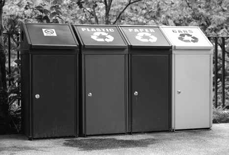
Challenge courses built in trees should be constructed and maintained to preserve the health of the trees and surrounding ecosystem. Trees used as anchors should be protected from damage. Do not dig tent trenches or build lean-tos, tables, or chairs from natural materials at the site. Stay within designated areas to avoid trampling vegetation near program sites. If you clear an undeveloped area of rocks or twigs, replace these items before leaving. On high-impact sites, it is appropriate to clean the site of any debris when you leave and to smooth over holes in activity areas covered by wood chips or gravel.
The only appropriate place to build a fire is within an existing fire ring. Many program areas are heavily wooded and fire danger can become extreme in late summer. True Leave No Trace fires are built only as large as needed. Cooking fires and fires built for evening sessions should be modest in size. Large fires may send sparks into the air and damage overhanging tree branches. Frequent feeding of small fires also creates activity for evening sessions. At times, open fires may be prohibited. Check for any fire bans before building a fire. Building fires at the base of most crags is unacceptable. Consider that fires and sparks around ropes and vertical software may damage gear, affecting life safety.
Quick movements and loud noises are stressful to animals. Considerate people practice these safety methods:
Thoughtful participants:
Challenge by Choice is a concept that was originally developed by Project Adventure and is a key principle of COPE and climbing. If a group is practicing Challenge by Choice, individuals may choose the level at which they want to participate in the various COPE and climbing activities without being pressured or coerced by the group and without having to justify their choice. The goal is to have individuals find opportunities where they can get out of their comfort zone so they can be challenged and grow internally. The key component is that individuals may choose the level at which they want to participate. Challenge by Choice does not mean a person can simply skip an activity that everyone else is doing. It does mean that they may choose how physically and emotionally involved they want to be in the activity. Based on the participant’s choice, instructors offering programs need to find an appropriate and meaningful role for them. For example, in either a climbing or COPE setting, a participant may choose not to climb or rappel, but could serve as a belayer or an encouraging team member. In COPE settings, the instructors offering program have traditionally been referred to as facilitators who are the instructors or directors facilitating the COPE program or leading climbing activities. There is not a separate training for the title facilitator.
While no participant should be pressured or coerced, everyone should be encouraged to participate in all of the COPE and climbing activities. The instructors must be aware of the fine line between encouragement and pressure. As a facilitator, you need to watch for both direct and indirect pressure that may come from the group. Actions of direct pressure include participants being told what to do by other members of the group and being volunteered by others. In some cases, there may be actual physical interaction as one participant attempts to coerce another. Indirect pressure can be much more subtle and could be in the form of put downs, comments that on the surface appear to be attempts at humor, glances, or other nonverbal gestures of communication. The bottom line is that the group must be accepting of each individual’s choices.
As instructors, it is important that you recognize how your behavior or comments can influence individual or group choices during a COPE or climbing event. In their desire to see individuals or groups succeed, facilitators or adult leaders may try to guide them toward a particular solution or use their position of authority to suggest what might be the “best” choice. Doing this takes away the individual’s or group’s opportunity to experience the joy of discovery in finding their own solution to the challenge. It is important to remember that there is more than one way to successfully complete each of the COPE and climbing challenges and that the way you learned to solve them might not be the best way.
No matter what level of participation individuals choose, as a facilitator it is your responsibility to make sure they are part of the group. It is easy to simply assign them the role of observer or some other pointless chore that does not make them a part of the group. The instructor needs to resist this temptation, instead asking participants how they want to be included and making them part of the choice process.
In guiding them through this process, the facilitator needs to walk the fine line of helping the participants develop options from which they can choose versus telling them what they should do. Once the participant has selected his or her option, both the group and the facilitator should respect that choice. There may be instances when someone makes a poor choice. This then opens up the opportunity to talk about how we make choices and the impact they may have on us or the group. One way to open this dialogue is to relate their choice to the Scout Oath, Scout Law, or motto.
If practiced correctly, outcomes of Challenge by Choice should include:
The Full-Value Contract©* is the starting point of a group. It is an opportunity to establish ground rules to which the group can agree. It represents both a personal and interpersonal agreement built on value for each person and for the group as a whole. When following Challenge by Choice, the contract helps each participant feel comfortable with what they choose to do during an activity. It should also provide a process or mechanism for addressing problems or issues as they arise.
As a facilitator, it is your responsibility to model the appropriate behavior described in the group’s Full Value Contract. This is especially important during the early stages of group and team development.
Typically, three basic commitments form the Full Value Contract:
Many times it is difficult for groups or teams to begin the development of their Full-Value Contract. They are not sure where to start, members may have trouble expressing their thoughts, or the dominant members of the group may try to force their ideas on the rest of the group. As instructors, it is your responsibility to guide the group through this process, ensuring that all of its members are heard and represented in the final Full-Value Contract. One way to accomplish this is to provide examples for them.
Two other examples that have been used in experiential education are the Five Finger Contract and PEEP.
When using the Five Finger Contract, the facilitator holds up a hand and explains that each finger represents a point in the contract.
PEEP is an acronym for Physical, Emotional, Environmental, and Personal.
Physical—Includes being aware of your physical limitations as well as those of the other members of your group. It includes taking care of your personal needs by following Challenge by Choice and dressing appropriately during COPE and climbing activities.
Emotional—Includes the use of the group’s Full-Value Contract and Challenge by Choice. This would include not using put-downs or volunteering others, looking for individual hidden agendas that take away from the group, and being aware of the group’s dynamics.
Environmental—Includes being aware of your environment during your participation in COPE and climbing activities. If you are outdoors, it includes being aware of the weather, practicing Leave No Trace, and being a good steward of the environment. If you are indoors, it includes awareness of the space limitations of the room(s) you are using.
Personal—Includes taking responsibility for yourself and your needs as you participate in COPE and climbing activities.
In developing its Full-Value Contract, the group should have a method to capture members’ ideas to take with them on the COPE or climbing course. This could be as simple as writing them down on a piece of paper or carrying symbols or pictures that represent the various points of the team’s contract. During their day on the COPE or climbing course, the group should review its contract and reflect on how well members are following it or using it if conflict develops.
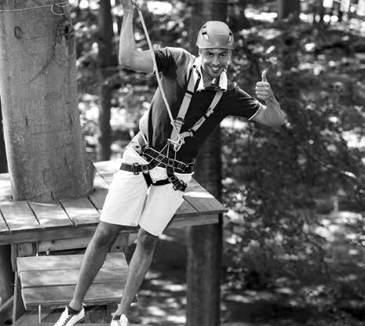
“You can’t get to the top of Everest by jumping up the mountain. You get to the mountaintop by taking incremental steps. Step by step you get to the goal.”— Robin Sharma, author of The Greatness Guide
A goal is a specific, measurable achievement that helps an individual, group, or team accomplish a challenge or task. A key component of any goal is action, which is a step or task a person needs to accomplish to reach the goal.
Why do we set goals?
It has been hypothesized that we have a success mechanism as part of our subconscious mind. This mechanism continually searches for ways to help us achieve our goals and resolve problems. When we reach the goal or solve a problem, we feel better about ourselves. For this mechanism to work, we need a target—our goals. If we do not establish goals to represent what is important to us, then we pursue targets that have little or no meaning.
During the day we are faced with many choices for how to spend our time. We usually select what we perceive to be the most important, even though it may not help us to accomplish our task or challenge. Many times the issue we focus on is the last thing that was given to us or the last item someone talked to us about or what we think would be fun to do. Once we set goals, we know where to put our time and energy to meet specific, meaningful targets.
We have all heard the saying “Life’s not easy; deal with it,” or have listened to top athletes talk about their struggles to get to the top of their game. Along the way they may have had to overcome mental or physical challenges or failures. Why did they keep going and not just give up? What motivated them to continue? A commitment to a goal provides a strong sense of purpose that keeps them striving to achieve at a high level.
Every day we are faced with all sorts of distractions that could easily fill our day with other people’s interests and needs. Usually these are short-term issues that distract from our long-term task or challenge. Goals provide a framework for us to set priorities and make choices based on our long-term view of what is important. Our goals help ensure we take the correct fork in the road when we need to make a choice.
Our goals provide direction that prevents us from going down the wrong road. When you commit to your goals, you will use your resources to accomplish them.
Large goals that may seem impossible to achieve need to be broken down into smaller goals that you can achieve. Use your successes to measure your progress on the road toward the larger goal and to make sure you are staying on course. If you appear to be straying down the wrong road because of the obstacles and setbacks you encounter, learn from your mistakes and adjust your plans.
There are many different ways to set goals. One of the most common is to establish a SMART goal. A SMART goal is specific, measurable, attainable, relevant, and time specific.
Specific—Using simple language, provide a detailed description of what you want to accomplish, how you will accomplish it, why it is important, who is involved in accomplishing it, when it will be accomplished, and how you will know that you have accomplished it.
A specific goal will typically answer the five “W” questions: who, what, why, where, and when.
Measurable—Measurable means either the team or you are able to determine when the goal has been achieved. But more importantly you can also measure your progress from the start to the achievement of the goal. This is important to allow for benchmarking, which is a process the team or you should use to determine if you are on schedule. You also need to consider how you will reward yourselves when you reach a benchmark or attain your goal.
Making your goal measurable basically answers the question: How will I know when I have accomplished the goal?
Attainable—To be successful, a goal must be attainable. To be attainable, it must be realistic. This means that the goal is achievable by the team or individuals. While it may be a stretch or difficult to attain, a goal should not be so extreme it cannot be achieved or so easy that it is considered meaningless. This implies that the various members of the group or team have the skills, resources, and authority to achieve both the goal and the objectives. The goals should also be established based on your level of motivation. Motivation drives action and action achieves goals.
Relevant—A goal needs to matter and drive us forward. There must be a reason for the group or team to pursue that goal. For the goal to be relevant, it needs to be understood by everyone. As an individual, if other people understand your goals they can help you to achieve them and hold you accountable. If you are working as part of a team, unless everyone understands the direction the team is going, there will be a lot of wasted resources and effort directed toward nonproductive activities.
Time specific—There needs to be a definitive time for the completion of the goal. This commitment to time helps to motivate the team by creating a sense of urgency, keep it focused on what is important, and determine the correct actions to take when faced with choices.
While not a characteristic of a goal, an important component of goal management is rewarding yourself or the team when you are successful. The celebration of success serves as a motivator for accomplishing other current or future goals. Some individuals and teams will also have a mini-celebration each time they successfully complete a major action step as a way to further motivate the team. Either way, take the time to recognize the completion of each goal and to reward yourself for a job well done.
One way goal setting can be applied to the COPE or climbing course is for groups to decide on a level of challenge. Before engaging in activities, instructors should ask each group to decide on a level of challenge, ranging from 0 (no challenge) to 10 (highest level of challenge). Goals should be desirable (consistent with the ideals and values of Scouting), realistic (not too difficult or too easy), achievable (capable of being accomplished by this group), and measurable (it can be decided whether and to what degree the goal has been met).
Sometimes, as the instructor, you may need to guide the discussion to make sure the goals are attainable (neither too hard nor too easy) and appropriate for the COPE or climbing activity the group is about to do. It is important to honor Challenge by Choice, and in many cases it will be more effective to allow the group to decide its own goals and level of challenge. Even though the group may not have taken part in COPE or climbing activities before, encourage group members to make their best guess as to what they can do as a group. The group should reach a consensus in choosing its goal.
When preparing to do either a high- or low-course element, ask the individuals in the group to answer the following questions before engaging in a large group discussion:
These questions have no wrong answers. All participants’ answers should be valued and their individual choices respected. After hearing the responses, the group can then develop a group or team goal without imposing their will on an individual. As the instructor, your responsibility is to make sure that the final group goal is not imposed on individuals without their consent.
The benefits of warm-ups and initiative games are discussed below, but beyond understanding what the body needs to get ready for activity, the instructor can use warm-ups and initiative games to assess the ability for the participants to follow directions, balance while moving, and the participant’s ability to tolerate the closeness and assistance of other participants. The information you acquire while watching warm ups and initiative games can help you plan and adjust the COPE and Climbing activities to the greatest experience for your participants.
Before beginning vigorous exercise, it is often recommended that participants engage in stretching exercises as well as some warm-up activities.
Stretching refers to any of a number of exercises whose purpose is to increase the flexibility of the soft tissues surrounding joints in order to prevent injury. Actually, the entire topic of stretching before exercise is a very controversial subject among expert exercise physiologists. Some believe that it is crucial and should be incorporated into everyone’s exercise routine. Others are less enthusiastic and claim that its benefits are largely unproven. What should be the approach to stretching before participating in a challenge course?
For youth participants, the benefits of stretching are likely quite small. Unless they are in the process of healing from an injury, most youngsters are already quite flexible. A formal set of stretching exercises for them is probably unnecessary. Instead, there probably is benefit from exercises designed to improve balance. These would include things like standing on one leg for a period of time, with or without the challenge of moving the other leg in some way. Walking heel to toe is another example. These can prepare participants for elements, both low and high, in which balance is important. Balance balls are superb devices for providing balance exercises, and may be incorporated into some initiative activities or low elements.
Adult participants are much more likely to benefit from some sort of flexibility routine. Unfortunately, the types of stretches most often described may not target areas likely to be problems for adults. The two areas to which adult participants on challenge courses are most likely to suffer injuries that could be prevented by stretching are the shoulder and the lower back.
Elements that involve hanging unsupported (e.g., the Wall) or pulling one’s weight with one’s arms (e.g., Multivine Traverse) may result in a painful shoulder that can persist for a long period of time. Often, this becomes a recurring problem for adults, who find that they are limited in their range of shoulder motion.
Elements that involve bending or twisting (e.g., the Water Wheel or the Porthole) or that lead to sudden deceleration (e.g., the Trust Fall) may result in strains to the lower back, including the muscles of the buttocks and back of the thigh. Some adults seem more prone to such injuries than others.
In light of this, stretching exercises for adults should include routines targeting these areas. There are a number of specific stretches that accomplish this, and all have some common denominators. Stretches should be gentle and prolonged for 30 seconds or so, rather than done as impulses. Stretching should never be continued past the point of pain. Stretches are best done after a period of warming up, rather than before.
“Warming up” refers to exercise that puts some stress on the heart and lungs, resulting in an increased pulse and breathing rate. Warm-ups are essentially stretching exercises for the heart and lungs. If effective, they should result in a few moments of breathlessness and sweating. Most course instructors like to develop a menu of initiative games that incorporate some bursts of aerobic activity as a warm-up routine. Various types of tag initiatives are excellent for this purpose.
These books are excellent resources for warm-up activities:
Introduce group members to one another and to their leaders using icebreaker games. These games encourage participants to begin building group identity and trust, and to become comfortable with the possibility of taking small risks together.
Flexibility exercises use slow, stretching movements and can follow icebreaker games. They prepare participants for upcoming activities and help them develop body awareness by focusing on particular muscle groups and body parts. Emphasize correct methods for performing flexibility exercises, and do them without bouncing or jerking.
Cardiovascular exercises elevate the heart rate and increase the flow of blood to the muscles. These exercises may utilize hopping, jumping, jogging, skipping, fast walking, sliding, galloping, and leaping. Staff members can encourage participant interaction by using some “new leader” exercises in the context of cardiovascular activities. Designate one participant as the leader to begin an exercise. Change the leader or the exercise every 10 seconds.
Balance exercises promote an awareness of where the body is in relation to its surroundings. The objective should be supporting one’s own body weight. Each balance position should be maintained for three to five seconds. Balance can be improved through practice. Encourage participants to try each exercise several times. Increase the challenge by asking participants to close their eyes. Balance exercises can be structured for either groups or individuals.
Group awareness activities promote cooperation and trust, improve communication, and build team spirit through touching and other appropriate interaction. They can be done with large or small groups.
Select a game that will fit the purpose. If the group has difficulty communicating, select a game that promotes communication. If the group has a dominant personality, use the setup and story for the game to allow others the opportunity to experience leadership. Time, space, rules, and, most importantly, the story determine game dynamics. Varying these elements can make the game fit the purpose and can make it safer for the participants. Some games allow participants to build up inertia. Limiting the size of the playing area can minimize this. Bear in mind the age level of the participants and difficulty of the game. Practice the game ahead of time. This reveals game dynamics and hidden pitfalls.
Games must be carefully sequenced. Selecting games that require high energy levels one after another is detrimental to learning. Vary the objectives of the games to keep the interest level up. Note that different groups may have vastly different results with the same game.
Games, including the on-course elements, follow a process. The first three parts of the process are initially undisclosed to the participants. That process is as follows:
Add-on Tag: Define a limited boundary. Have participants pair up. One pair is It and attempts to capture another pair by tagging them. The group that is It gets larger and larger as tagged pairs join it until only one pair is left untagged.
Attack of the Blob: Define a limited boundary. Give three participants one soft foam ball each. These three “Blobs” take large, lumbering steps, make Blob noises, and chase humans. If a human gets hit by a foam ball, the human becomes a Blob and receives a foam ball. The only protection from the Blob is to fall into a dead bug position.
The Candle: Each participant balances on one foot, tucking the other up against the inside of the opposite thigh. Put palms together in front of the chest and, while keeping the palms together, raise hands over the head. Close eyes as hands pass eye level. Maintain balance for 10 to 15 seconds, then switch legs and repeat.
The Clock: Have the group join hands in a circle. Mark four spots inside the circle as “12 o’clock,” “3 o’clock,” “6 o’clock,” and “9 o’clock” using cones or other markers on the ground. Have the group rotate 360 degrees in one direction, returning to the starting position, in as little time as possible, while maintaining the grip on each other’s hands. If the chain of hands is broken, the group starts again. After discussing strategies, the group can try to improve its previous mark.
Couples Tag: Have participants form a large circle standing arm’s length apart. If there is an even number of participants, designate one person to be It and another to be chased. If there are an odd number of participants, designate two people to be It, chasing one person. Have the rest of the group link elbows with one person standing next to them. Limit the boundaries of the game to a circle that is 4 feet larger than the circle of participants. Participants cannot move unless they are It or being chased. Running during this game can result in injuries, so limit movements to “silly walks” or some other creative technique. The person who is being chased can reach safety by linking elbows with a person who is part of a linked pair. The other person in that pair then becomes the one being chased. The person being chased must move at least one pair away from their previous position before linking elbows with a new person. Continue the game until everyone has had a chance to actively participate.
Crows and Cranes: Define a playing area similar to a volleyball court. Divide the group into two teams, “Cranes” and “Crows,” lining them up to face each other across the center line. When Crows are called by the leader, they chase the Cranes to the rear boundary area, and vice versa. When tagged, players must stand still (or join the other team).
Everybody Up: Pairs of players sit facing each other with feet touching and knees bent. Without placing any other body parts on the ground, the pair must stand up together. Have each pair practice a few times, and then combine pairs to form groups of four, eight, 16, etc. Spot larger groups.
Human Spring: Split into pairs facing each other with arms up and palms facing each other. Start out fairly close together. The object is for participants to fall toward each other at the same time when the instructor gives the command, keeping their bodies stiff, arms bent at the elbows, and “spring” off their partner’s palms back to their original position. The pairs move farther apart with each cycle to increase the level of challenge. There is a risk of bumping heads together, so caution participants to lean their heads so they don’t line up with their partner’s.
People to People: Form pairs with partners facing each other. A single player is the “caller.” As the caller yells “toe to toe,” “knee to knee,” “elbow to foot,” etc., the pairs perform the described connections. On the call “people to people,” players switch partners, and the person left unpartnered becomes the new caller.
Ping, Pong, Zap: The “spinner” in the center of the circle directs all players to learn the names of the people to their immediate right and left. As a test, the spinner calls out “Ping!” and all players shout the name of the person on their right. At the command “Pong!” they shout the name of the person on their left. At “Zap!” they shout their own name. After a few practice commands, the spinner points to a specific player and gives a command. If the player responds correctly, the spinner continues; if not, that person becomes the new spinner. The game should be played at a fast pace.
Rat Tails: Each player tucks about 4 feet of rope in a back pocket or back waistband of their pants; 1 foot of the rope dangles on the ground like a long rat tail. On “Go!” every player attempts to stomp on other rat tails and pull them out while dodging other stompers. The last one left with a tail attached is the winner. Hands may not be used for holding or pulling.
An initiative game is a type of cooperative game with a clearly defined problem to be solved. The group must use cooperation and physical effort to reach a solution. Some challenges are more cognitive than physical, and vice versa. Initiative games challenge the physical and mental abilities of the participants within a group. In most instances, group members must use teamwork, planning, and determination to complete a task. A few initiative games require special props and settings, while most can be done anywhere and without special equipment.
COPE and climbing instructors can use an initiative game to challenge the group to figure out how it will solve a problem. The group must find a solution through planning, practice, initial failures, and final achievement. The initiative game encourages learning by doing. Participants learn through trial and error. Initiative games are extremely useful for enhancing the trust, responsibility, and self-esteem of each participant. The games also promote interaction by requiring team members to cooperate, taking advantage of each group member’s abilities as well as dealing with any personal variables such as height, strength, and so on. Initiative games are particularly helpful for developing participants’ awareness of the decision-making process, of leadership versus followership, and of the obligations of each member of a group that is confronted with problems to solve.
Initiative games are very useful for helping instructors gain insights into group dynamics and learn the characteristics of individuals within the group. Many times these activities can help an instructor learn about the group and adjust the program for the day to increase its effectiveness. Various storylines can be tried with setups for initiative games to determine which ones will work with the particular group. It is very important for instructors to pay close attention to what goes on during the initiative games so that valuable information about the group does not escape their attention.
Participants will learn to recognize other members of the group by their adventure names—positive names that help participants feel good about themselves.
N/A
Toss the ball easily rather than throwing it hard.
Gather the balls.
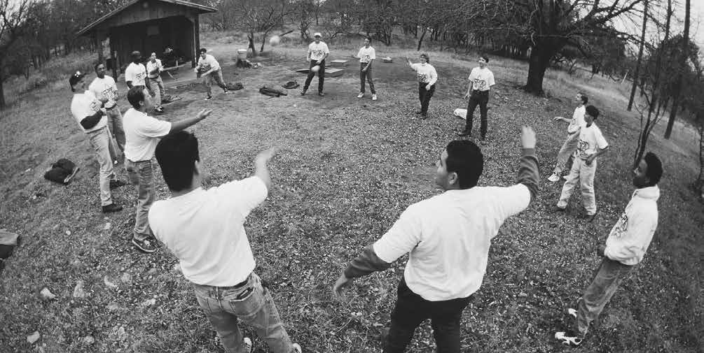
An instructor asks questions of participants. Each participant who answers “yes” raises a hand. The instructor can ask the following suggested “Have You Ever” questions. The group gets better acquainted and the instructor learns more about the group.
N/A
If your response to the question is “yes,” raise your hand. You do not have to explain anything that might be embarrassing or hurtful. The game format allows participants to say something about themselves without bragging. It also allows more reticent participants to say nothing without fear of censure.
N/A
N/A
Gear the questions to the makeup of the group— youths, adults, corporate executives, medical personnel, college students, camp staff members, etc.
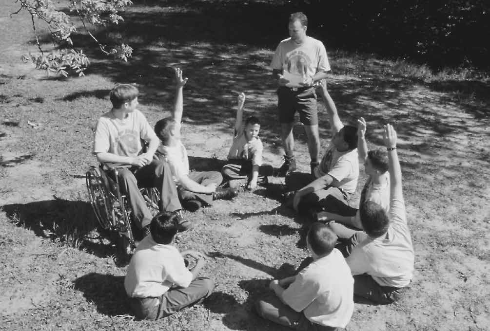
Suggested Questions for Have You Ever . . . ?
The group stands in a circle and hits the ball, keeping it aloft as long as possible before it hits the ground.
N/A
Clear the area of obstructions and debris.
If necessary, deflate the beach balls.
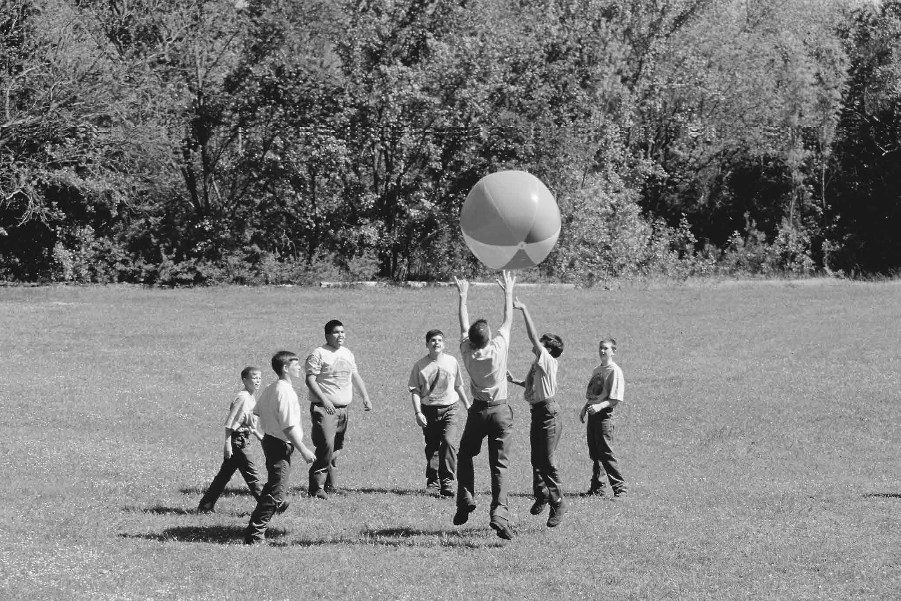
While blindfolded or with eyes closed, group members must align themselves according to height. Participants will become acquainted with one another and start working together as a team.
A blindfold for each participant
Blindfold group members and instruct them to align themselves according to height.
Collect the blindfolds.
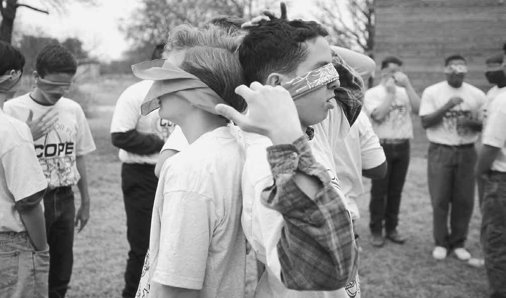
A group of at least eight sightless participants holding onto a rope must form a perfect square.
N/A
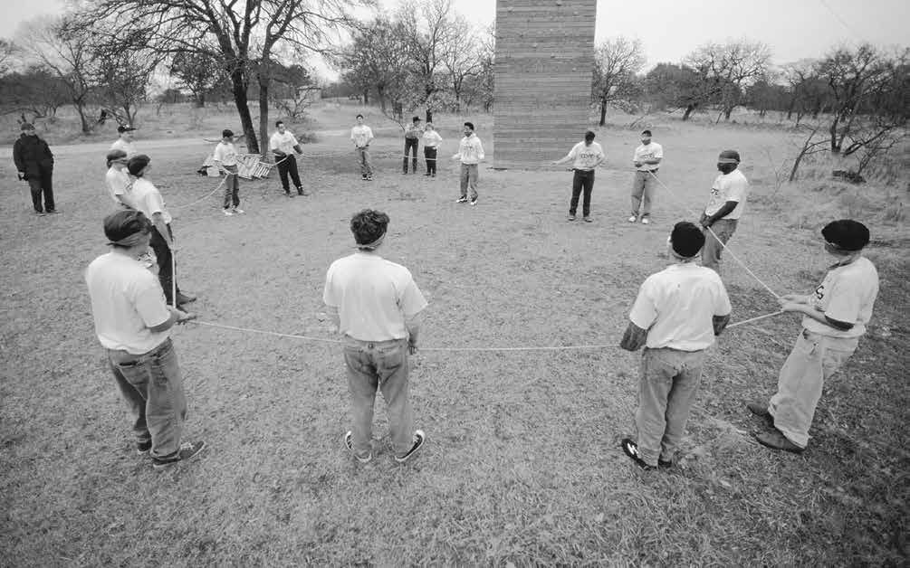
The group stands in a circle, grasping hands. Two participants rest a plastic hoop on the backs of their grasped hands, then the entire group causes the hoops to travel around a circle as quickly as possible by stepping through the hoop without releasing hand grips.
Plastic hoops
N/A
N/A
Gather the hoops.
Play tag in the usual way with the exception that a participant may avoid being tagged by hugging another player and humming. Once out of breath, however, that participant must find another partner to hug, and may safely stay with each new partner only for the duration of a one-breath hum.
N/A
N/A
Clear the area of obstructions.
N/A
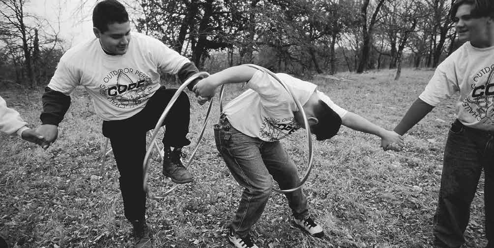
Using only “legal” moves, two groups of at least four participants must exchange places on a line of squares. All members starting to the left of center should end up on the right, and all members starting to the right of center should end up on the left.
Enough cloth, plywood, or cardboard squares for each participant, plus one additional square.
*The arced version allows participants to see what is happening.
Clear the area of obstructions.
Gather the squares.
A group must create a human knot by grasping hands. Players must then untangle the knot without losing contact with each other’s hands.
N/A
N/A
Perform in an area free of obstructions.
N/A
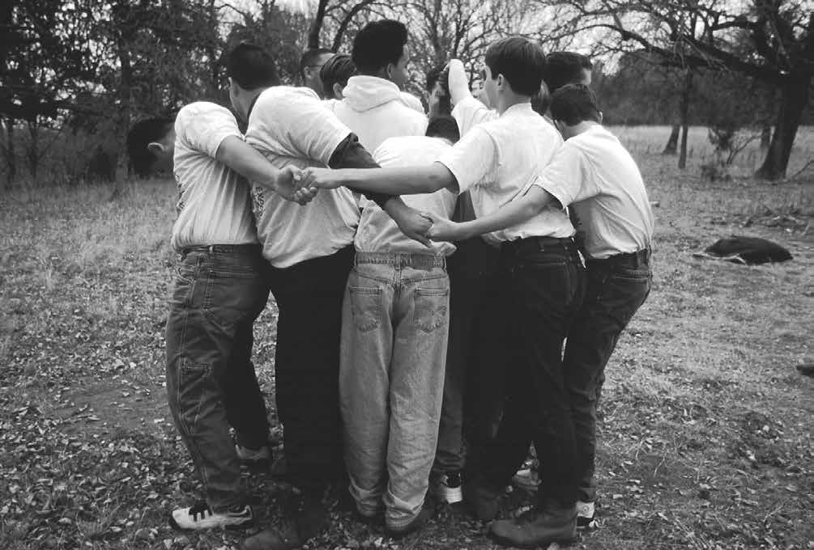
A group of 12 to 16 people must all get onto a 2-foot square platform so that no one is left touching the ground long enough to recite the Scout Law.
Place the platform in a secure area.
Use smaller platforms.
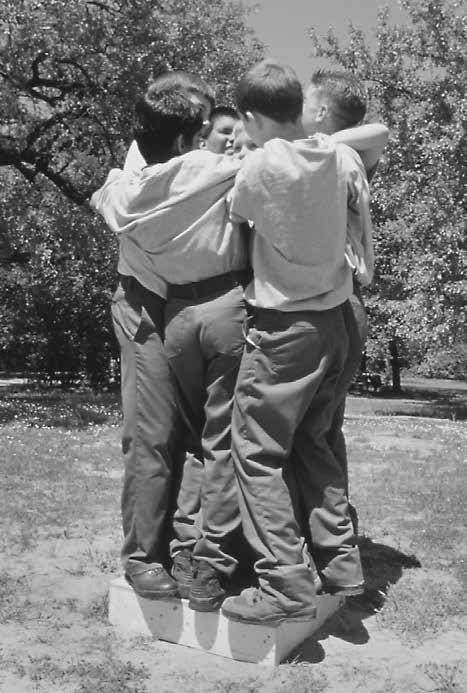
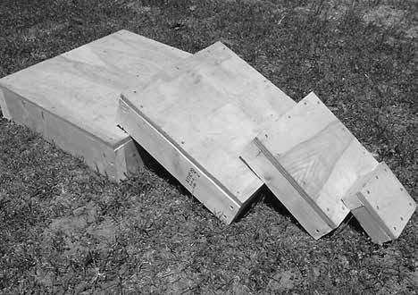
Half of a group will stand on each end of a pole or log that is lying on the ground. Without touching the ground, the two parties must change ends as quickly as possible.
N/A
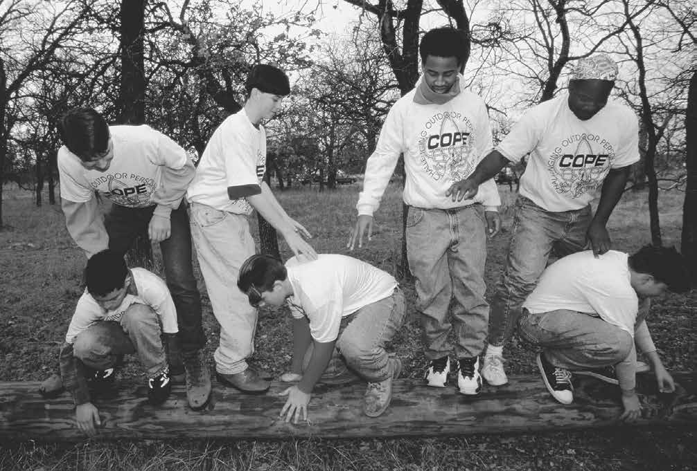
A group of six participants must move the A-frame apparatus, with one group member on board, from point A to point B (about 30 feet) using five sling ropes, each about 18 feet long.
Secure the ropes and the A-frame.
A team of three people devises a human “machine” that can move a designated distance.
N/A
Organize the group into teams of three.
A team may stack only a maximum of two people high.
N/A
A group of eight to 12 people forms a “monster” that must move a distance of 15 to 20 feet.
N/A
N/A
Clear the area of obstructions.
N/A
A group of eight to 12 people must move a prescribed distance (the “ravine”) as quickly as possible while standing on movable wooden rails (the “trolley”).
Two 4-by-4-inch beams, each 10 to 12 feet long and each having a 21⁄2-foot length of rope attached to it every 12 inches
Use a smooth, level area for this event.
Secure the trollies.
Given a 55-gallon drum with many holes in it, a bucket or other container, and an easily attainable source of water, a group must fill the drum until it overflows.
The holes in the drum should not be so large as to allow fingers to be inserted into them.
Secure the drum.
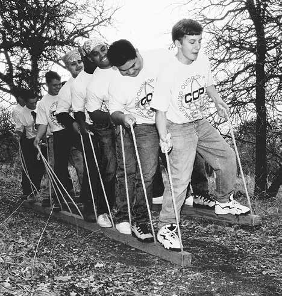
Participants are instructed to keep their eyes closed and follow the multiline from start to finish through a maze of various lines, some of which lead in the wrong direction.
Remove the multiline.
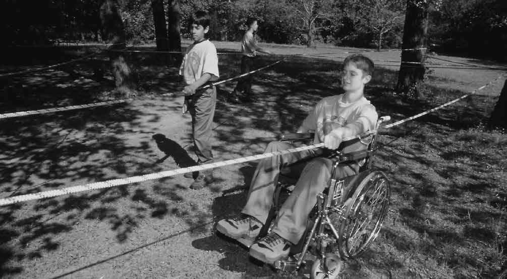
Top view
Sample layout
Start
EXIT
TREES ROPE
DANGLING CORDS
SEPARATE CORD WITHIN REACH OF PERSON HOLDING ONTO A DANGLING CORD.
Finish
Each participant steps across a series of hard plastic domes without touching the ground or floor. Every “dome” must be touched by both feet. The idea is to teach participants how to balance and to learn some of the basic moves for climbing. This is a great indoor activity for a rainy day.
A set of 24 to 48 hard plastic domes, about 8 inches in diameter and 31⁄2 inches high (Provide about six domes for every three participants.)
Collect the domes.
Additional Games:
Loose Caboose: Form teams of three or four players. Players line up one behind the other as in a “train,” with hands on the waist of the person in front of them. Designate about three “loose” players who try to hook onto the back of a train. If a loose player successfully latches onto the train, the person at the front of that train becomes “loose.”
The Mating Game: Each player is shown a card with the name of an animal, insect, or bird. One other player is shown the same card so that there are two of the same species in the group. On the “go” signal, players mimic the sounds and movements of their species in order to find the other of their species.
Octopus: Create a rectangular boundary with two end lines. On a signal from the person designated as the “octopus,” the group runs from one end to the other, trying not to get hit by two foam rubber balls thrown by the octopus. Players who get hit become stationary octopi and try to tag people as they run by.
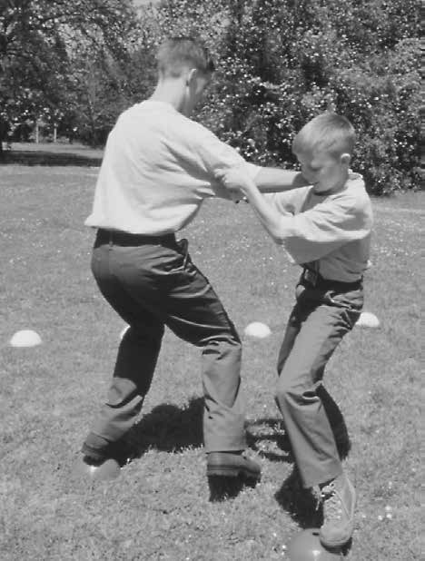
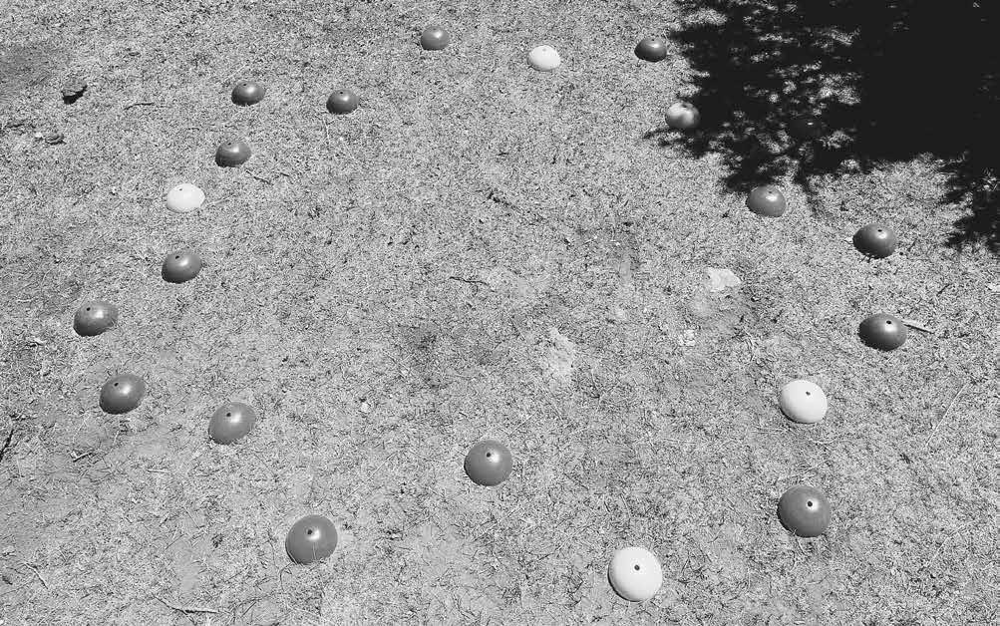
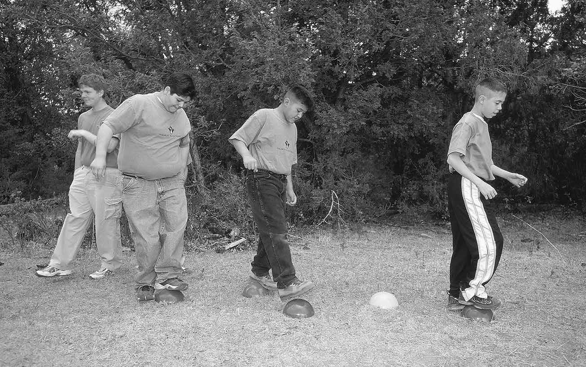
Spotting is the process of breaking a person’s fall in such a way as to prevent injury to both the person falling and the person spotting. In general, spotters should assume a stable stance with one foot forward of the other and with knees and elbows bent to absorb shock from a potential fall. Palms should be slightly cupped and fingers pressed tightly together (known as “using spoons”) to avoid injuries to fingers.
Spotters are not expected to catch a falling person in midair—something that is nearly impossible even with a fall of only a few feet. Instead, spotters should support the upper body of a falling person, especially the head and neck, and ease that person to a safe position.
Spotters should always be used in the following situations:
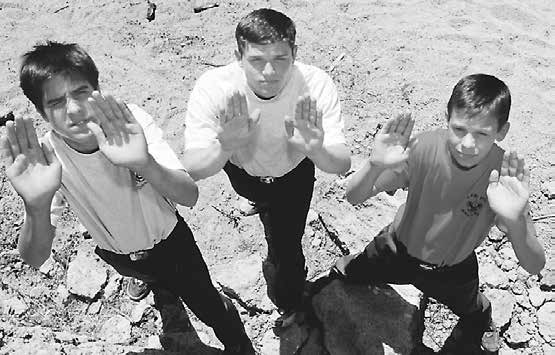
Climbers and instructors should practice the ABCD method when spotting.
Attitude—Check your attitude and the attitude of other group members. Make sure all spotters are focused on the participant at all times. Avoid large weight discrepancies between participant and spotter.
Communication—Each person involved must communicate his or her readiness.
Participant Spotters Meaning “Spotters ready?” “I’m ready to start.” “Ready” “We’re ready to protect you.”
“Climbing!” “I’m starting.” “Climb on.” “Go ahead.” “Falling!” “I’m going to fall; get ready to catch me.”
Decision making—Each person must decide to be consistently safety conscious and deliberately focus on the participant throughout the activity.
Spotting techniques may vary considerably from one challenge course activity to the next. Specific procedures for spotting each element should be explained to participants prior to engaging in the activity. The traditional spotting posture where spotters stand with elbows bent, knees bent, and palms forward with fingers together may work well for activities where the participant is traversing a cable or log; however, that posture may not be very effective for activities involving swinging. On some activities, to allow everyone in the group to participate simultaneously, Step Off Safely (SOS) might be used. This technique allows participants to step off of the element onto the ground and quickly step back onto the element without any penalties when they feel they are losing their balance.
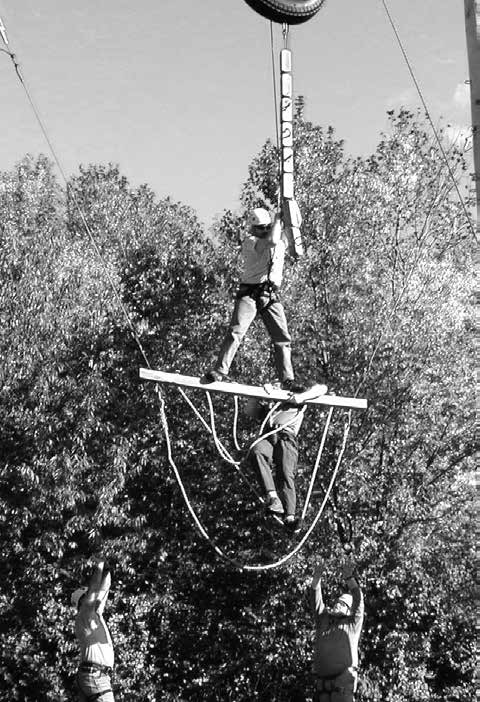
Fear can be both good and bad: good in the sense that it keeps us alive by stopping us from doing things that put us in danger and bad in the sense that it can keep us from growing by discouraging us from taking prudent risks. The goal is not necessarily to eliminate a fear but to control it rather than having the fear control us.
Fear is a normal human emotion that is usually accompanied by some characteristic behaviors. Biologically, these behaviors (increased heart rate, sweating, or goose bumps) are a response to danger as part of the “flight or fight” response in mammals. For many humans, fear is actually exhilarating and enjoyable—hence the popularity of thrill rides, horror movies, and high-adventure activities.
Fear can be controlled by breaking larger problems or challenges into smaller ones. For example, when climbing a tower wall, don’t focus on the top of the tower. Instead, focus on the next climbing hold and then the next one and so on. Before you know it, you’ll be at the top of the tower! Big challenges can seem overwhelming; however, those big challenges are really made up of many small challenges. Concentrate on the small challenges or goals as a way to overcome the larger challenges.
For some COPE and climbing participants, the thrill of fear is the real attraction of the program. Many COPE events are designed to present the perception of danger while in reality they are very safe. In certain participants, however, some events may produce a level of anxiety that is far beyond enjoyable. These participants may become so uncomfortable and distressed that the event, or even the entire activity, becomes a negative experience. We often associate fear with physical circumstances, but this assumption is not always correct for the challenge course experience. Learners may hesitate or become anxious about participating with the group in activities involving closeness or sharing or change, which may indicate a form of fear. Participants, particularly youth, may also fear appearing foolish, inept, or “looking like a jerk” in front of their peers.
To identify fear, anxieties, and hesitation, watch for these common indicators:
Most people are comfortable on a couch watching television. A different person, a window washer, is comfortable on a platform 200 feet in the air. Another person, a heart surgeon, is comfortable holding a beating human heart in his or her hand.
We all have different levels of comfort. We have different comfort zones throughout our life.
There is very little learning that takes place in the comfort zone.
To learn, we need to go slightly out of our comfort zone.
By taking small, repeated steps into the educational zone, we expand our comfort zone. In the educational zone, we have a heightened awareness, but reason, logic, and learning are still allowed to dictate behavior.
In COPE and climbing programs, the educational zone has a component of perceived risk; however, safety procedures are always in place to protect the participants. It is not unusual for participants to experience anxiety or fear while operating in the educational zone.
Glazed eyes. No interaction. No common sense. No acknowledgment.
These symptoms indicate someone has entered the danger zone. No learning takes place in the danger zone. There is no decision making and no rationale. It is time to help this person take a slight step back to the educational zone. An example of this would be a person who freezes on a high event or climbing wall and won’t acknowledge anyone.
Resolution of this occurrence requires incident resolution, which is covered in chapter 13, “Emergency Preparedness.”
If you have butterflies in your stomach, the goal is not necessarily to get rid of them, but to get them to fly together in formation.

A very important part of COPE and climbing programs is effective teaching of critical skills such as spotting and belaying techniques. Each instructor needs to master the skills of effective teaching in order to ensure that these programs are operated safely. When designing an activity to teach an important skill, it is helpful to understand how others learn.
Learning styles have been described using several different models. Any of these models tend to oversimplify the process of human learning but can be of value to help understand how people engage in the process of learning. One such model, discussed in “Learning Styles and Strategies” by Richard Felder and Barbara Soloman of North Carolina State University (http://www4.ncsu.edu/ unity/lockers/users/f/felder/public/ILSdir/styles.htm), describes learning styles using four dichotomies:
Felder and Soloman’s paper is aimed at college students, but also provides some insights into the teaching situations frequently encountered in COPE and climbing programs. The teamwork-focused setting of these programs provides natural opportunities for active learners to get their hands on the materials quickly while the reflective learner can take advantage of the time to process the information first before trying out the task. A good example of a deliberate setup is teaching team belaying (belayer, backup belayer, and “anchor person”) to participants using a rotation:
This method accommodates both learning styles and also provides valuable information about learning style preferences of the participants. Using the same teaching example, accommodations for the other learning styles can be made as well:
It is recommended that every COPE and climbing instructor take the Trainer’s EDGE course offered by their local council. The EDGE methodology is useful for teaching skills and helps the trainer to apply a more systematic approach to designing the learning experiences.
The following chart from the Trainer’s EDGE syllabus identifies the characteristics of each step of the EDGE process. The second item in the Guide stage
has been added to show another method of guiding a student when poor performance during a training situation could create an unsafe situation. Examples of this might be:
When designing training sessions, whether for other instructors or for participants, the EDGE methodology can be helpful.
| Training Stage | What It Is |
|---|---|
| Explain |
|
| Demonstrate |
|
| Guide |
|
| Enable |
|
The safety of climbing and COPE participants, leaders, and instructors is paramount in the construction, staff training, and operation of a COPE or climbing/rappelling program. While there are inherent risks in climbing/rappelling and COPE activities and events just as there are in every sport and outdoor program, climbing and COPE instructors, leaders, and participants work together to manage that risk and to ensure that the environment of a climbing site or COPE course is as safe as possible, and that activities are conducted in ways that allow participants to be challenged but not endangered. A consistent posted or displayed process is used and verbalized by all COPE and climbing staff to ensure that clothing, helmet and harness, environment, connections, and knots are double-checked in any belayed events for staff members and participants. This requirement must also be followed by staff at all times, including setup and takedown of safety systems. The CHECK process is the preferred method for Scouting COPE and climbing programs. Councils and camps may have their own system. No matter what process is used, the method should be posted and spoken out loud by instructors and participants to ensure the double check of the safety systems.
Concern for safety is not enough; the council and the COPE and climbing committee and staff must take action to ensure the safety of participants and staff members. Being able to trust the reliability of a climbing area and COPE course allows participants to enjoy the program fully and to learn from it. To maintain that trust, safety must be both an attitude and an objective of all climbing and COPE staff members and participants.
The potential for serious accidents and injuries is always present. Climbing areas and COPE courses are safer when the standards and recommended procedures are followed. Most injuries occur to or are caused by staff. These injuries often happen because of fatigue, inatten tion, being too casual, showing off, and failing to follow standard procedures and safety rules. Safety begins with an attitude that must be shared by every individual involved: Safety is the highest priority for the program.
This attitude must be translated into an objective to which everyone must subscribe: Do everything possible to prevent serious accidents or injuries at the climbing site and on the COPE course.
When human hazards and environmental hazards overlap or compound each other, chances increase for accidents to occur. Such an “accident equation” might look like this:
When people combine the right attitude and awareness with the proper action, the result is a “safety equation” that looks like this:
Successful climbing and COPE programs have several traits in common:
There are four ingredients to the operation of a safe program: the people (personnel) who conduct it; the policies by which they operate it; the equipment used; and the environment. In this chapter, we will consider important features of each of these.
In addition to supervisory and management duties, the Director/Level II instructors should have a specialized knowledge of the course and be able to perform the following tasks:
The climbing and COPE staff members are at the front lines for providing a safe program. The following precautions will help the staff maintain safety at a climbing area or on a COPE course:
Climbing and rappelling incidents and accidents are usually caused by very simple and preventable mistakes. Some examples are:
These types of incidents and accidents are very preventable if everyone is watching out for everyone else. CHECK is a process designed to help prevent common mistakes. It guides a review of the life safety systems in a climbing or rappelling activity. Whenever someone is about to climb, rappel or belay, everyone participating should deliberately and intentionally use the CHECK process to verify that everything is ready. If anyone sees a problem, they should speak up.
Check for baggy shirts and jackets that could get snagged in the friction device. Check that jewelry is removed or secured to prevent interference with equipment. Check that hair is tied up or tucked inside the back of the shirt.
Check harnesses for the following:
Check that helmets are properly fitted with chinstraps secured.
Check that all program areas are safe and free from obstructions and hazards. Are staff ratios and locations appropriate? Has the ladder been moved from the end of the zip? Are people on the ground in a safe location? Has the weather affected the health or safety of the instructors or participants? Does the COPE platform have room to accept another participant?
Perform a safety check on the connection between the participant and the belay system. Recheck often, and double-check when belays are changed. Perform a physical, visual, and audible check with the participant to make sure that carabiners are:
Check that knots are properly tied and dressed, and are the appropriate knot for the specific use.
Equipment that staff is not trained to use should not be present at the program activity area.
Every COPE and climbing program should have its own site-specific set of policies and procedures. These are developed by the local council’s COPE and climbing committee, which also monitors compliance. COPE and climbing national standards and this manual do not constitute a set of procedures for a program. They represent minimum standards to which programs must adhere but do not address matters that are specific to individual sites. Some of the policies that local programs must develop and monitor include the following:
Much of the cost of operating a climbing and/or COPE program lies in the substantial investment in equipment. Ensuring that this equipment is carefully inventoried and cared for is an obvious necessity in light of this investment. More importantly, care, maintenance, and scheduled replacement of this equipment are critical factors in the operation of a safe program.
An important prerequisite to equipment care is the availability of an up-to-date inventory. An inventory of COPE and climbing equipment must be maintained. Certain pieces of equipment (e.g., helmets, harnesses, ropes, and webbing) must be retired according to the manufacturer’s recommendations. Other types of equipment (e.g., carabiners and belay devices) have no predetermined life span but need ongoing inspection to ensure safety. Such inspections are documented by the process outlined for the local COPE and climbing program. If the council allows other programs to use the COPE and climbing equipment or facilities, then there should be a consistent process in place to ensure that the inventory, the inspection log, the maintenance inspection and other council checklists are completed thoroughly.
Some courses (e.g., those at summer camps) may be used only for a brief season annually. In such cases, it is critical that the council develop a procedure for the safe storage of equipment during the off-season. Similarly, it is important that custody and storage of course or tower records be maintained off-season. Simply leaving them at a closed summer camp is probably ill advised. They might be transferred to the council office for safekeeping.
With the increasing popularity of climbing gyms and challenge courses, there is an ever-expanding array of mechanical devices available for use on climbing and COPE courses. Climbers and ropes course instructors usually have their favorites, but council COPE and climbing programs should be aware of one important fact: No single piece of commercially available equipment is inherently safer than another. The important matter is that the equipment be properly maintained and inspected before each use.
Participants and instructors must be trained and proficient in the use of whichever device is being used.
Challenge courses are inspected annually by members of the local council and a professional inspector. All items requiring maintenance that could result in participant or staff injury should be addressed prior to use of the facility or equipment. Activity areas should be evaluated before the program begins for potential problems that could compromise safety:
all programs that can be applied to operation of COPE and climbing programs.
Staffing ratios that change because of environmental factors, health, breaks, and focused response to incidents need to be considered during environment check.
Climbing towers and COPE courses are located in areas where unauthorized access is prevented by topography, fencing, or continuous monitoring. Course-specific procedures for disabling facilities must be developed and implemented for locations where access cannot be thoroughly limited when the course is not in use.
Suitable warning signs must be posted at the tower and COPE site.
Commercial climbing gyms, adventure parks, and guide services may have policies and procedures that differ from those in this manual or in other Scouting America publications. Scouting units may make use of these facilities and services under the Guide to Safe Scouting and Climb On Safely, following the facility or service’s policies. Unit leaders should work with the facility’s staff to ensure that risk is appropriately managed.
The instructors should keep a close watch on the weather to make sure that unsafe conditions do not occur during program operation. Weather Hazards online training provides good general guidelines for
ALL CLIMBING AND COPE PARTICIPANTS AND GROUP LEADERS MUST FOLLOW SAFETY GUIDELINES PRESENTED BY DIRECTORS AND INSTRUCTORS.
Directors and Level II instructors should be alert to the possibility that while on the course a participant might slip a pen into a pocket or put on jewelry. Have a personal property box to secure items that are not appropriate.
All Scout COPE and Climbing programs require at minimum of two qualified instructors. Council and district programs must comply with the current printing of the National Camp Accreditation Program standards for minimum staff qualifications. Unit programs must comply with Climb On Safely for minimum instructor qualifications.
Climbing and High COPE programs require a participant-to-instructor ratio of 6:1. Low COPE activities require a minimum participant-to-instructor ratio of 12:1.
A National Camping School director can train level 1 instructors. The syllabus for training a level 1 instructor is on the COPE and Climbing pages of the National Outdoor Programs website. It can be modified for your program’s needs, but the fundamentals of a COPE or Climbing program cannot be omitted. Even a Level 1 who will only assist with an indoor bouldering or climbing wall with auto belays needs to understand equipment, operation, inspection, the goals of Scouting programs, and the incident resolution plans for that program.
A council with a COPE and Climbing Program Trainer may task the level 2 instructors with training the level 1 instructors, but the COPE and Climbing Program Trainer will create the agreed upon syllabus for training level 1 instructors per their council’s facility needs.
Level 1 training must include documentation of the skills covered in the training (a vetting instrument of skills) for each person trained. These records may be digital or paper and are retained in compliance with council and Scouting America document retention requirements. Each year that a level 1 renews, the instrument with the document skills should be updated..
Life safety system: A configuration of components including lifelines, belay beams, and anchorages that support personal safety systems, belay systems, and/ or rope rigging systems.
Personal safety system: A system of equipment that connects a person to an anchorage or lifeline with the intention of preventing or arresting a fall when the potential free-fall distance is less than or equal to 2 feet. Personal safety systems may include continuous self-belay, fall restraint, positioning, and suspension systems. Components of a personal safety system include harnesses, connectors, and lanyards.
Belay systems: An equipment system and corresponding techniques used to control a life safety rope connected to a participant where the rope may be taken in, let out, and secured in order to arrest a fall. Included are top roped and team belay systems. Belay system components may include rope, connectors, shear reduction devices, belay devices, descent control devices, belayers and backup belayers.
Any person climbing higher than their own shoulder height, or more than six feet, whichever is less, above the ground must be continuously protected with either a belay system or a personal safety system. Everyone must be belayed or tethered when within 8 feet of an edge where a fall of more than 6 feet could occur.
A personal safety system is a fixed system and cannot be lowered to the ground. Examples of personal safety systems are lanyards, lobster claws, cable ascenders, and the tether to a zip-line pulley. Personal safety systems (static belay tethers) typically are used for people who are stationary on platforms or are on traversing elements.
Belay systems are rope systems that can be lowered to the ground. Belays are anchored at the top of the route and are sometimes called top-roped or slingshot belays. In top-roped systems, the belayer may be positioned at the top or the bottom of the climb; however, the climber rope is always passed through the anchor at the top of the route. This eliminates the chance for significant falls. Any person more than six feet off the ground must be belayed continuously. Belays should be used on climbing events and may also be used on traversing events and rappelling.
Personal safety systems (static safety tethers) are easy to operate but can lead to more complicated incident resolution scenarios. While a participant on a belay line can be simply lowered, a participant on a personal safety system might need to be transferred to a belay system and then lowered. Climbing a rope with friction knots or mechanical ascending devices is a specialized skill often used in caving or canyoneering. This skill should be practiced while using an independent belay. Soloing devices are not acceptable belays.
Rappellers are belayed with an independent belay line or with a fireman’s belay. A fireman’s belay is a person on the ground who pulls on the rappel lines. This creates tension around the rappeller’s friction device and halts the rappel. It is the same principle as the rappeller braking themself with their brake hand, only in this case it is someone else’s hand and it is at the bottom of the rappel rope.
In lead climbing there is no top rope belay. The climber is building new anchor systems as they climb. This puts climbers in situations where they are climbing above their anchor.
The harness is what connects a person to the rest of the life safety system. Harnesses give climbers, rappellers, and belayers a secure way to attach themselves to ropes, friction devices, and belay anchors. Climbing harnesses have evolved over the years to become as comfortable as they are safe. Harnesses are constructed with several common parts—the belt or waist band, leg loops, crotch loop, equipment loops, belay/rappel loops, and rear rated attachment point.
When a person is hanging in a harness, his or her weight is supported by the leg loops. The leg loops should be at the top of the person’s thighs and support the person as if he or she were sitting on a chair. The waist belt supports very little of the participant’s weight. Instead, it helps keep the participant balanced upright. The leg loops might have a crotch loop connecting them to the belt. Usually the crotch loop makes a connection point over the belt to which the rope can be attached. Harnesses without crotch loops usually have independent connection loops on the belt and the leg loops. These loops then have a belay/rappel loop that connects the two loops. The climbing rope can be either tied into the two independent loops beside the belay loop or clipped into the belay/rappel loop. Equipment loops are conveniently sewn into the waist belt and provide a place to clip gloves or equipment not currently being used. Some harnesses come with an attachment point at the back of the waist belt. These connection points are sometimes rated and allow for participants to be suspended from them. Always check the manufacturer’s specifications and instructions to determine this. Any program that has a face-first rappel must use a harness with a rear rated attachment point. Simply clipping around the back of the harness belt is not acceptable. Always connect to the harness the way the manufacturer specifies.
Commercially made harnesses are available in a variety of designs, most notably the waist-belt/leg-loop style (sometimes called “sit” or “seat” harnesses), fully adjustable, chest, and full-body style.
These are the most common commercially made harnesses and are often the most comfortable. A waist belt with a buckle closure and the leg loops are held together by a belay loop made of strong webbing. The leg loops may be adjustable and, like the waist belt, padded for comfort. The belay loop serves as an attachment point for rappel and belay devices. Follow the manufacturer’s recommendation for attaching to a harness. Note that similar-looking harnesses may have different manufacturer recommendations.
Sport climbing harnesses usually have an adjustable belt but the leg loops are a fixed size. These harnesses are good for a climber’s personal use but are not well suited for a Scouting America program because they aren’t adjustable for participants of different sizes. Fully adjustable harnesses have an adjustable belt and adjustable leg loops and are well suited for Scouting America COPE and climbing programs.
Adaptable to a wide range of body sizes, the fully adjustable harness is made from a single piece of webbing that wraps around the legs and continues to the waist. Leg loops must be adjusted snugly to prevent slack from migrating to the waist.
Chest harnesses are commonly used when there is a concern that a participant might become inverted in an event or in special situations— for example, when ascending or rappelling while wearing a pack. A chest harness can provide additional balance to a seat harness. Chest harnesses must always be used in combination with a tied-seat harness or a commercial harness. The belay rope is passed through a carabiner on the front of the chest harness to keep the participant from tipping over.
Full-body harnesses incorporate chest, back, and shoulder support. Young participants whose hips are not developed enough to hold a normal harness in place should use a full-body harness, as should any individual whose waist is too large for proper positioning of a harness waist belt.
Before allowing a person to climb, rappel, or belay, double-check to be certain that the end of the harness belt has been properly secured according to the manufacturer’s specifications. In some cases, that involves threading the belt back through the buckle.
Even the most carefully designed and cushioned harness will not be secure if it is too big or too small, nor will it be comfortable. A harness that is too tight will restrict movement and can pinch. A loose harness may slip and chafe; in an inverted fall, a climber or rappeller could slide out of it. Instructors should be diligent in ensuring that every participant is matched with a harness of the correct size and that it is properly adjusted. Each participant should be trained to put on and adjust his or her own harness.
The waist-belt, ideally, should sit snugly above the hip bones. Some work positioning harnesses sit higher than the belly button. Some caving harnesses sit lower and on top of the hip bones. Regardless of the type of waist-belt seat harness, the harness should not be able to be pulled down off the hips once the waist belt is tightened. A harness that is too large may slide up onto the ribs, compress the diaphragm, and interfere with breathing. A harness that is too small can compress the hips and legs, reducing mobility, and leave too short of a tail outside of the buckle. When offering COPE and climbing programs to a variety of ages and sizes of participants, an adjustable multi size harness may be your best option. Be thorough when testing the security of harness fit. If the harness will not stay tightened to the waist or hip bones in the manner the manufacturer recommends, it may not hold that person in an inverted fall. In this case consider using a full-body harness or a chest harness in combination with a seat harness. harness.
For general guidelines on tying in to a harness with a belay rope, climbing rope, or rappel device, see the next section. For specific instructions, refer to the manufacturer’s tag sewn into the harness in question.
While this technique is seldom used anymore, a 30-foot length of nylon webbing can be wrapped around the body and tied in special ways to form a reliable tied-seat or chest harness for climbing, rappelling, and belaying. Common tied-seat harnesses are the Swiss seat, Studebaker wrap, and knotted leg-loop harness.
While a tied harness may be used when an appropriately sized commercial harness is not available, tied harnesses can be uncomfortable while hanging on rope. Tied harnesses should only be created from 1 inch or greater webbing and a chosen technique should be practiced before hand to provide an appropriate, safe fit.
Commercial harnesses and tied harnesses are only as safe as the people using them. Anyone responsible for others during climbing and rappelling activities should understand how to put on and adjust the harnesses to be used at that site and should do it correctly every time. Before any climbing or rappelling activities begin, an instructor should check and double-check each person’s harness to be sure it is properly fitted and secured.
Tie the seat harness using a piece of webbing 24 to 30 feet long.
Form the knotted leg-loop harness using a piece of webbing 24 to 30 feet long.
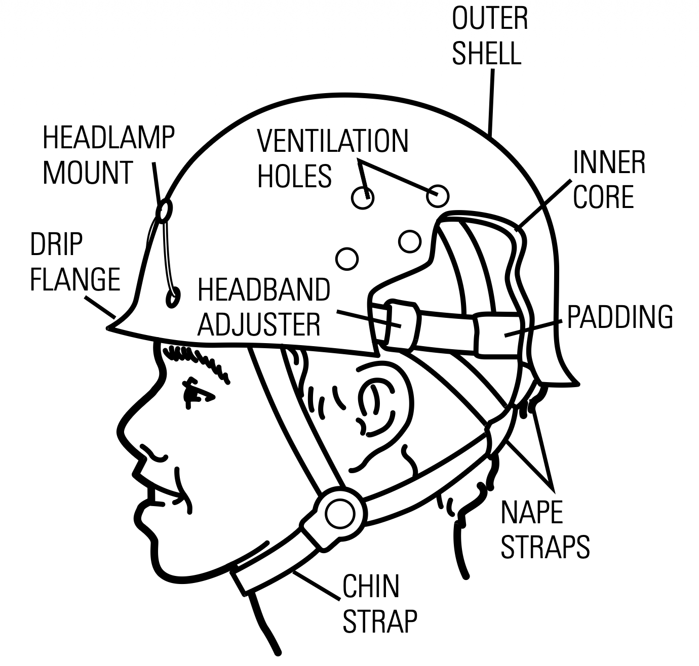
Every participant in the fall zone of any Scout climbing or rappelling activity must wear a helmet that is designed for ropes courses or climbing. Climbing helmets have suspension systems made of either webbing or foam. Other kinds of helmets such as those intended for bicyclists, skaters, construction workers, or football players are not specifically designed for climbing and are not acceptable.
Climbing helmets protect one’s head from falling rocks and gear and from contact with the climbing surface. Participants may complain at times that helmets feel hot or uncomfortable, but the assurance of increased safety far outweighs any minor discomfort. Instructors should ensure that every participant’s helmet is adjusted to fit properly. Never allow a helmet to be worn tipped back to expose the forehead.
When selecting helmets, consider ventilation, ease of adjustability, and color (dark colors absorb heat; light colors reflect it). A distinctive color used for the helmets of climbing instructors can help provide immediate identification. Instructors can also be identified by slipping a sunshade or piece of webbing into the headlight clips on the outside of the helmet.
All climbing helmets must be retired according to the manufacturer’s recommendations, or sooner if one shows signs of wear or sustains significant impact. Follow any additional manufacturer’s guidelines for retiring helmets.
Carabiners are the essential connectors of climbing systems. Most carabiners are made of aluminum alloy or high-grade steel. A spring-loaded gate allows a carabiner to be snapped around an item. Carabiners are either locking or nonlocking. They are further distinguished by their shape—oval shaped, D-shaped, or pear-shaped.
The original carabiner was an oval shape. Under tension, the rope rides to the center of the oval, putting half of the load on each side of the carabiner. The gate side then becomes the limiting factor on the strength of the carabiner. The D-shaped carabiner came out next. It was designed to have the rope under tension ride to the spine side of the carabiner. This increased the carabiner’s strength rating. The last notable design was the pear shaped, or the offset D, carabiner. One end is larger than the other, making it easier for more items to be clipped into the carabiner.
Locking carabiners have mechanisms for guarding the gate when it is closed. The lock can vary from a simple threaded collar that screws down over the gate to a spring loaded, two or three action automatic locking device that secures the gate in such a way that there is less chance of it accidentally opening.
Use locking carabiners for joining belayers to anchors and belay devices, and rappellers to rappel devices. A double-locking carabiner requires two actions to unlock its gate. Conduct a visual and physical check to be sure that the carabiner gates are locked before beginning any belaying activity. Any carabiner attached to a steel cable must be made of steel or be designed by the manufacturer for use on cable and conform with the current ACCT standards. The helmet should be properly fitted and adjusted.
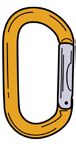
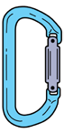
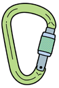
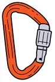
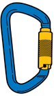
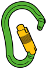
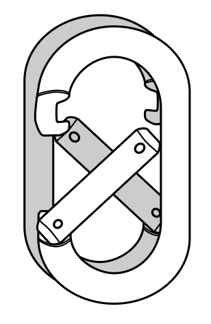
Unlike a correctly closed locking carabiner, the gate of a nonlocking carabiner may accidentally open if it pushes against a rock, a rope, or even a climber’s clothing. The dynamics of a hard fall arrested by a rope running through a carabiner can cause gate lash— the momentary opening of a carabiner’s gate due to the gate’s inertia overcoming the spring tension, collision of the carabiner against another object, or the vibration of the rope over the carabiner.
If a load comes onto a carabiner at the instant the gate is open, carabiner failure may occur. (A carabiner with its gate open typically has less than 50 percent of its rated, gate-closed strength.) Using carabiners with locking gates or using pairs of carabiners will significantly reduce this type of carabiner failure.
Bent-gate carabiners have a concave gate that makes them easy to clip onto ropes and slings. They are used primarily for lead climbing and sport climbing, and are not commonly used for Scout climbing or rappelling activities.
Be aware that some carabiner-like items are designed for uses other than climbing—such as key rings or accessory holders. Do not allow carabiners or carabiner-like items on a program site except those of known history, strength, and appropriateness for use by climbers, rappellers, and belayers.
The breaking strength of carabiners must be 5,000 pounds, making them strong enough to handle any loads normally found in climbing, rappelling, and belaying situations. Incorrect use of a carabiner, however, can result in failure at loads well below its rated strength. Among those incorrect uses are the following.
Belay systems and personal safety systems must be connected to an anchor. Every COPE or climbing event will have an anchor at the top of the route that supports the life safety system. There might also be an anchor at the bottom of the route where the belay device is connected. The belayer may also be connected to an anchor but should avoid loading the harnesses on points that the manufacturer did not intend for life safety load. In some cases, the belay team serves as the bottom anchor. For artificial structures, top anchors must conform to current ACCT standards. All natural site anchors must be solid and reliable. (Refer to the Anchors chapter for more information.)
Examples of life safety anchors are:
Multiple anchor points are brought together by cordage to create a single attachment point that spreads the load across the anchor points, such as a cordelette. The attachment loop at the bottom of the cordelette is called the center point. Cordage that is used to connect multiple anchor points should be considered part of the anchor and must meet loading requirements of the anchor. Pulleys and shear-reduction devices that clip to the center point are considered part of the anchor system as well.
Pulleys and shear-reduction devices are used to limit the shear force on the rope. Shear force is the tendency for the rope to experience high stretch and friction forces where it is bent tight around an object. If a rope were to pass through just a single carabiner at a center point, the strength of the rope could be reduced by considerably. A bending diameter of two carabiners provides better shear reduction at the center point. The larger the bending diameter, the less shear force. Consider using shear reduction systems with built-in backup on COPE and climbing facilities in applications where they are difficult to inspect daily.
A belay cable may be run vertically up a pole or element to provide access to an event. Instructors will connect to the cable with a cable ascender. The ascender will travel up the cable as the instructor climbs to the event. The cable ascender should be manually pushed up the cable as the instructor climbs. This must be done by lifting the tether or carabiner. Never hold the body of the ascender. Keeping the ascender at chest level will limit the dropping distance in the event of a fall.
The tether that connects the participant on a zip line to the zip wire is considered a personal safety system. A pulley designed for zip-line operation is connected to the zip wire. Typically the participant is connected to the pulley with a short length of a tether. Tethers can be purchased in premade lengths. They may be can be made of rope, multiline, or webbing. Many zip systems will also have a redundant tether.
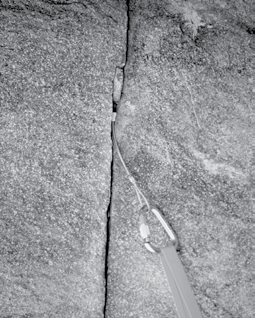
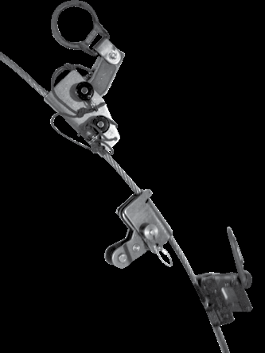
Lanyards can be made of rope, webbing, or cable. Any life safety tether must have a rating that meets industry standards. Personal safety 2 leg lanyards made of multiline commonly used in ropes courses are called double leg tethers or lobster claws. They are made with Prusik knots so that the length of each leg is adjustable. All lanyards, tethers, or lobster claws should be adjustable or rigged in such a way to restrict travel or falls over the edge. Lanyards from the construction industry may also be acceptable for programs, depending on the manufacturer’s recommended use. Lanyards normally have steel auto locking connectors on the ends of the legs; these may be an auto locking carabiner or other auto locking connector. If the lanyard connector will travel on a steel cable, the carabiner or connector should be steel or be designed by the manufacturer for use on cable and conform to the current ACCT standards. Aluminum carabiners can develop significant wear when traveling on a steel cable. The connection point of the lanyard to the participant’s harness may be with aluminum or steel connectors, or some types of lanyards have a loop in the material of the lanyard that girth hitches directly to the harness.
Lanyards used for traversing must have two lengths coming from the central connection point. One of the two legs must be connected at all times. Instructors and participants traversing with personal safety systems can use a ground spotter to provide a means of double checking their safety connections. For example: As the participant makes a connection to a new anchor, he calls “transfer” to his ground spotter. The spotter confirms the action and replies with “transfer.” The participant then locks the carabiner and calls “lock” to the spotter. The spotter, having watched the lock happen, will reply with “lock.” The participant will then squeeze test the carabiner to double-check the lock. After confirming the lock, he will call “check” to the spotter who will call back “check” to confirm the action. The sequence will then be repeated as the second leg of the lanyard is moved to the new anchor.
An instructor or participant who is stationed on a platform and will not be traversing might have a lanyard with a single connection in lieu of a double-ended lanyard. Some courses or towers have permanent cable lanyards at poles or platforms.
Some more modern belay systems involve special hardware that allows for participants to traverse between elements and around corners without breaking belay. Special shuttle systems are made to be able to pass around the cable connection hardware. The shuttles will use the same types of tethers as a zip-line system to connect the participant to the shuttle.
Scouting America’s NCAP standards restrict self belayed climbing above an anchor point to trained instructors only. This may include ascending staples on a pole with lobster claws or other lanyards, or ascending a ladder with a rope or cable grab. In all cases, attachment points and equipment used must conform to ACCT standards for life safety systems.
No participant should ever be self belaying with lobster claws or lanyards above their anchor point.
All staff doing self-belayed climbing must wear a load limiting device due to the potential impact that might be created by a fall. Setting up a belay rope or cable ascender are preferred methods over lanyards for ascending a pole. If your course requires that instructors self belay, you should work in conjunction with your course builder and create a cable for a cable ascender or a belay point above the highest point a staff member would need to access. Load-limiting devices must also be used when the connection from the participant to the anchor does not have any energy absorption built into the system (e.g., connecting to an eye bolt with a lanyard). Connections to belay cables will typically not need a load-limiting device.
Anyone within 8 feet of an edge where a fall of 6 feet or more could occur must be on belay or tethered. This includes high course and zip line platforms, towers, and at the top of natural rock sites.
Tethers and safety lines must be adjustable so as not to allow a fall, and must be double checked as any life safety system. At NO time should instructors or participants be within eight feet of the edge without being secured in some manner.
OSHA safety standards apply to camp staff and volunteer instructors. They require:
In almost every case, a tethering system can be created to avoid needing a full body harness. A fall in a full body harness, especially one dorsally attached, is difficult to recover. Work with your course builder to design a staff travel-restraint/fall-protection solution that meets the OSHA standards
A belayer on the end of a climber’s rope will need a friction device in order to catch the loads that would be generated in a fall. Friction devices in a lowering system help to make the load manageable.
Friction is generated by the ropes twisting, wrapping, and being pinched through different devices. Common types of friction devices are slotted plates (Sticht plates), tubular devices, figure eight descenders, self locking devices, just-right descenders, and brake bar racks. Most devices provide a predetermined amount of friction, but a few are adjustable and can be set in different ways to provide different amounts of friction. Many devices are designed to be used only with certain sizes of rope. Make sure the friction device is compatible with the size of rope you are using.
Participants must be attached to friction devices with a locking carabiner. Each friction device generates a different amount of effective braking force by the bend of the rope through the device and around the carabiner. Friction devices must be used according to the manufacturer’s recommendations.
A slotted plate is also called a Sticht plate. It is available with or without a spring. The spring version may be easier to use. A bight of rope is fed into the slot in the plate and clipped into the carabiner. Each rope should go in and out of the same slot.
Tubular devices are similar in operation to a slotted plate without the spring, although tubular devices feature a greater surface area to dissipate heat.
Figure eight descenders are commonly used for rappelling but also can be used for belaying when used according to manufacturer’s guidelines. They can be set up in different ways for different levels of friction. The standard setup is to pass a bight of rope into the large hole and around the small hole. Double-wrap a figure eight descender to create extra friction, such as when rappelling with a backpack. Figure eight descenders can be locked off, with some learned technique, while rappelling so the rappeller can go hands free.
Figure eight descenders are also available in a larger variety made for rescue. These figure eight descenders have ears that prevent accidentally girth hitching the rope to the big hole when trying to lock off. They also have an enlarged (or second) small hole for attachment of additional carabiners. A figure eight descender doesn’t have as much braking force as a tubular device because the rope doesn’t make the sharp bend around the carabiner. Instead, the rope makes a more gradual bend around the neck of the figure eight descender. Similarly, they are easier on the rope as they don’t make as sharp of a bend as tubular devices. Figure eight descenders do put a significant twist into the rope.
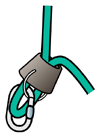
Some specialized belay devices are appropriate for belay activities, such as the Trango Vergo and the Petzl Grigri. These assisted braking devices have a mechanism that applies additional braking force whenever the rope is loaded with sufficient tension. Assisted belay devices, such as the Black Diamond ATC Pilot or the Mammut Smart, also have a camming mechanism or function that actively grips the rope when the tension of a falling climber is applied. All of these devices require training to use, and must always be used according to the manufacturer’s instructions. None of these devices are auto-belay devices. They all require an attentive belayer and good belay technique.
A just-right descender is a section of utility pole or 8"x8" wood beam that has three holes drilled through the pole in a Z shape. These friction devices are commonly used on the confidence pole as they are able to absorb a substantial force since they are buried in the ground. These are not to be used on traversing elements since they cannot travel with the participant, but they are common for vertical elements.

The brake bar rack is a very sophisticated friction device. This device is easy on the rope because it does not make any sharp bends or put any twist into the rope. The brake bar rack is an adjustable device, even while being used. Brake bar racks are common in rescue and caving due to the extremely controlled descent that they allow. Brake bar racks can also be locked off.
Most brake bar racks have multiple bars which may be removed or added for extra friction. A minimum of three bars should be engaged at all times. A great deal of caution must be used when rigging the brake bar rack. If the rack is set up backward, the bars will all open when weight is applied, which generally happens at the edge of the drop. Many brake bar racks have a training groove in the first bar to help prevent it from being set up backward.
A münter hitch, used with an HMS carabiner, can be used as a friction device. A münter hitch has a high level of friction and does tend to introduce a lot of twist into a rope.
Self-belaying rappelling with only friction knots (i.e., Prusik or similar knots), body rappels, and brake bars on carabiners are not appropriate means of generating friction for Scouting America activities.
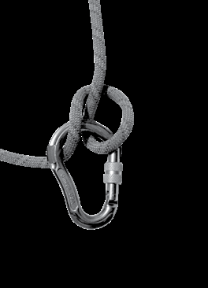
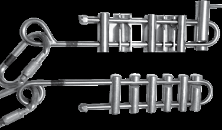
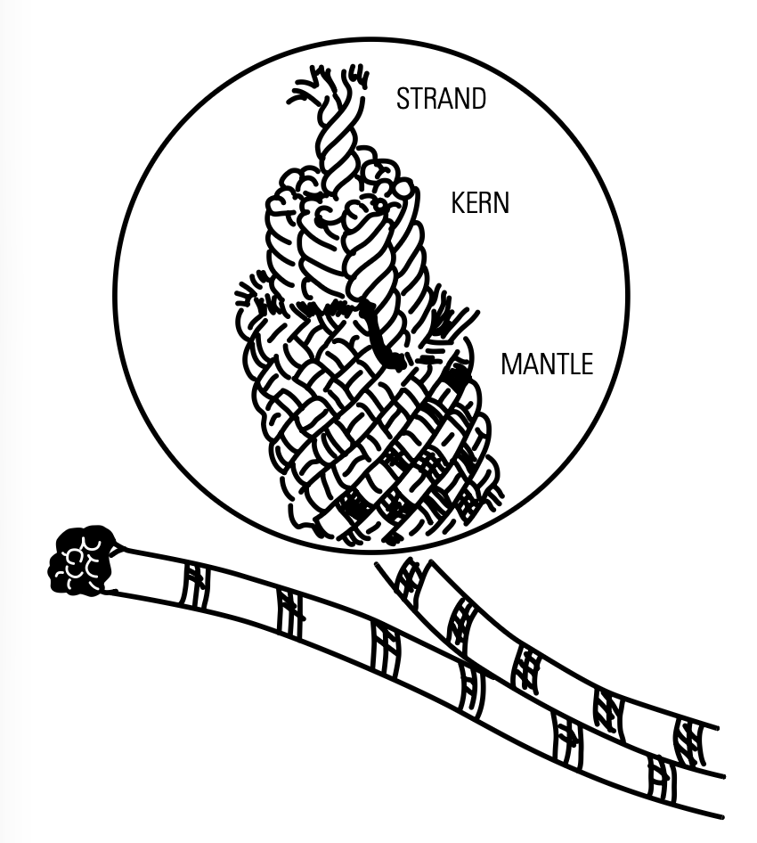
Rope is the lifeline of climbing and rappelling. It is vital for stopping the falls that inevitably occur as participants learn and practice climbing and rappelling. The quality of a rope and the way in which it is handled can mean the difference between life and death. Take care of your rope. Keep it clean and away from harsh chemicals, don’t step on it, and avoid prolonged exposure to sunlight. Soiled rope can be washed with mild soap and allowed to air dry.
In the 1800s, when people began recreational climbing in earnest, it was a commonly held hope that a climber simply would not fall. The thinking stemmed in part from the reality that the ropes of the time were likely to break when suddenly put under strain. Those ropes were constructed of natural fibers such as manila or sisal that were twisted, or laid, into lengths. They were prone to rot if allowed to remain wet for long periods. Natural fibers make ropes that are static, meaning they have little ability to stretch; they must absorb the impact of a falling body all at once, rather than gradually.
By the 1950s, modern materials had made possible the development of rope described as dynamic, meaning it has a significant amount of stretch. Because of its elastic properties, a dynamic rope will stop a falling climber gradually rather than all at once by absorbing much of the energy generated by the fall. That reduces the shock load on the rope, on the anchors, and on the climber. Dynamic rope revolutionized the sport of climbing by making it possible for climbers to survive uninjured the sorts of falls that a century before could have been serious and even fatal.
Today, ropes that stretch little—static ropes— may be used for top-roped climbing or rappelling. Static ropes may also be used in situations requiring the use of ascenders or hauling, such as in caving and rescue work. Dynamic and static ropes approved for Scouting America climbing and rappelling are kernmantle ropes. Each is composed of a woven sheath (the mantle) over a braided core (the kern). The core bears the brunt of the load placed on the rope, while the sheath protects the core from damage. A 50-meter (165-foot) kernmantle rope with a diameter of 11 millimeters (7/16-inch) weighs from 6 to 9 pounds. Its core is woven from 50,000 filaments and the sheath from 30,000, with each filament running the full length of the rope.
The rope connects to all of the other pieces of the life safety system. Ropes are available in many different sizes. Life safety ropes commonly range from 8 to 11mm. Kernmantle rope is the most common. There are also ropes made with braided construction that are common in tree climbing. Three-strand or laid rope is not to be used as a life safety rope. Ropes are most commonly made of nylon, but some are made of polyester, which provides less stretch and reduction of strength when wet. All ropes used for Scouting America activities should be designed for climbing and certified by the UIAA, CEN, or NFPA.
Ropes are available in different types of stretch. At the manufacturer’s facility, rope is loaded with a weight equal to 10 percent of its breaking strength. The rope stretch is then measured. If the stretch is more than 10 percent, it is classified as a dynamic rope. If the stretch is between 6 and 10 percent, it is classified as a low-stretch rope. If the stretch is less than 6 percent, it is classified as a static rope. Dynamic ropes can be used for belaying and rappelling. However, dynamic ropes are not commonly used as rappel lines. Static and low stretch ropes may be used for belaying and rappelling. Because Scouting America climbing is all top-roped, the fall factor is insignificant, and therefore mid-stretch static ropes are acceptable for top-roped activities.
Rope for Scouting America climbing and rappelling activities must have a clearly documented history. Rope entering a climbing program must be new, have UIAA, NFPA, or CE approval, and be procured from a reliable vendor. In most cases, this means buying rope of the standard length and diameter or purchasing spools of rope of up to 1,000 feet in length and cutting the rope into appropriate lengths. Buying by the spool may afford some economy, but it also means a climbing area will have a great deal of rope aging at the same rate. Unless Scouting America instructors are certain the rope will be used in such large volume, it may be wiser to purchase rope in precut lengths as the need arises.
Numbers printed on a band at each end of a new rope provide information about its intended uses. The number “1” in a circle indicates that the rope is rated for use as a single line—that is, as a belay rope for climbing or rappelling, or as a single line for rappelling. The fraction “1/2” in a circle means a rope is rated for use with another 1/2” rope.
When shopping for rope, there may be the option of buying either standard rope or dry rope. The mantle of dry rope is impregnated with a chemical treatment that makes the rope water resistant. Dry rope may cost more than standard rope, but for climbing areas where frequent rain or afternoon thunderstorms are a factor, not having to dry out soaked ropes can more than make up for the added expense. This treatment is useful for ice climbers and cavers.
The safety factor accounts for many variables, including shear force, abrasion, rope age, safety, knots, and angles in the rigging.
Webbing has characteristics similar to rope. Webbing must be designed for climbing and used according to the manufacturer’s instructions and specifications. Anchor systems made from webbing must conform to the current ACCT standards. Webbing can be doubled to achieve additional strength.
Treat webbing with the same care as rope. Keep it clean and away from harsh chemicals, don’t step on it, and avoid prolonged exposure to sunlight. Soiled webbing can be washed with mild soap and allowed to air dry.
Lengths of webbing have many uses in climbing and rappelling activities. All webbing used for climbing and rappelling must be designed for that purpose. Webbing is strong and light. When the ends are commercially sewn together or tied with a water knot, a piece of the webbing can be made into a loop known as a runner, utility loop, or sling. Climbers use runners for rigging anchors, for forming chest harnesses, as tethers for managing rope, and in some rescue situations.
There are several ways to cut webbing, including these methods:
Nylon webbing can be harmed by friction, dirt, exposure to chemicals, and harsh weather. It is also susceptible to damage from ultraviolet light due to extended exposure to sunlight. Retire any webbing that shows signs of abrasion, undue wear, fading, or other indications of deterioration. Regardless of its appearance, every piece of webbing must be retired according to the manufacture’s recommendation and Scouting’s NCAP standards.
Runners of various lengths and widths can be purchased from reliable climbing stores and outfitters. The stitched portion of a runner has as much or more strength than any other portion of the webbing. Presewn runners with a carabiner secured in each end are called quick draws or express slings. Although used primarily by lead climbers, they may have applications in anchoring systems for Scout climbing and rappelling activities.
Individuals should not attempt to sew webbing. Stitching webbing requires equipment and expertise beyond that available to nonprofessionals.
One-inch tubular webbing must be used to make tied seat harnesses. It can also be used in constructing an anchor system or to attach belayers to anchors.
There are several ways to cut webbing, including these methods:
Nylon webbing can be harmed by friction, dirt, exposure to chemicals, and harsh weather. It is also susceptible to damage from ultraviolet light due to extended exposure to sunlight. Retire any webbing that shows signs of abrasion, undue wear, fading, or other indications of deterioration. Regardless of its appearance, every piece of webbing must be retired according to Scouting America standards.
High-strength accessory cord, 7 to 9 millimeters in diameter, may be helpful as a self-locking Prusik knot to provide a backup system for newly trained rappellers. A 20- to 25-foot length of 7-millimeter accessory cord can be used to tie a cordelette to equalize the load among anchor points. A short piece may also be helpful for rescues in which one or both hands may be needed to assist a student or accident victim. At no time should accessory cord be used as a substitute for climbing rope. Most accessory cord is static in that it has minimal stretch. Accessory cord requires the same care as rope.
Types of knots used in climbing include loops, hitches, ending knots, joining knots, and friction knots. When deciding what type of knot to use, consider the knot’s strength, security, and ease of tying and untying.
Common climbing knots include the following:
Knowing a variety of knots and their proper uses is of paramount importance for anyone interested in climbing and rappelling. Scouting America instructors must be able to tie knots with ease and know which ones to use when setting up safe systems for climbing, rappelling, and belaying. In an emergency, the ability to tie the correct knots quickly and with certainty can spell the difference between an effective rescue and one that is fraught with difficulty.
Becoming an expert with knots is a matter of repetition. The more they are tied, the more deeply ingrained they will become to your fingers. Instruction is helpful, either from printed resources or from a good teacher, but mastery comes only with practice. A rope is strongest when it is straight—free of knots, hardware, and bights. Adding any of these elements reduces a rope’s strength, although some knots are stronger than others.
In addition to tying a knot correctly, climbers should also make it a habit to dress each knot—adjusting it so that the knot is neatly arranged and snug. This will align the strands of the knot in such a way that it will have the greatest possible strength. A good ritual to follow when tying knots is:
The following terms are useful for describing how to tie knots.
Making a bight in a rope and then tying a figure eight knot with it results in a loop that will not slip or come loose. Clip a carabiner into the loop, and the rope can be attached to an anchor or harness.
The figure eight follow-through is similar to the figure eight on a bight, differing only in the way in which it is tied. The figure eight on a bight must be tied in a rope before it is attached to a carabiner, while the figure eight follow-through is tied directly to a harness. The end of the rope can be passed through an anchor sling or a harness before the knot is tied.
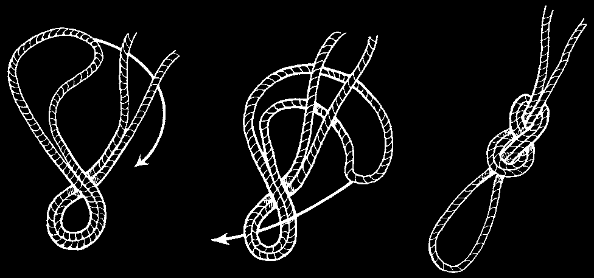
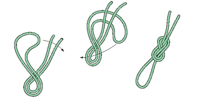
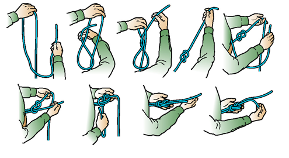
The double-loop figure eight is also known as the super eight. It is useful in climbing situations because the two loops can be used in anchoring and it is easy to untie after being loaded. Because there are two loops in the knot there is less shear force on the rope.
This knot is very similar to the figure eight on a bight with the only difference being that the tails to the knot come out of opposite ends. This knot can be effective when tying into anchors that are in line behind each other.
The figure nine is similar to the figure eight on a bight with an additional twist. The added twist makes the knot asymmetrical and prevents it from cinching down too tight. For this reason the knot is relatively easy to untie after being severely loaded. The figure nine is commonly used as the attachment knot for the Flying Squirrel.
Use a water knot to tie together the ends of webbing to make a loop sling for use as a runner in an anchor system or when tying a harness. Once it has been tightened, the water knot seldom slips and can be difficult to untie.
Also known as an overhand bend or a sling knot, the water knot should be used only with webbing. To form loops in rope, use the double fisherman’s knot.
The Flemish bend is used to join two ropes of the same size. First tie a figure eight in the end of one rope. Retrace the figure eight knot with the second rope. The tails of the knot should come out opposite ends of the knot.
This knot is used for joining two ropes of either similar or dissimilar materials. It is also used to tie together the ends of a shorter piece of rope or accessory cord to form a runner or loop. Half of a double fisherman’s knot (also known as a barrel knot) can be used as a safety knot to back up a primary knot such as a figure eight on a bight.
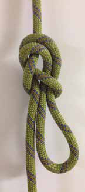
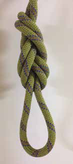
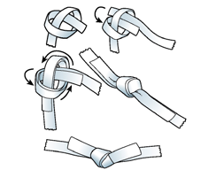
The bowline allows a climber to make a reliable loop around a tree or other anchor. The loop will not slip or cinch down and is easy to untie. Always tie off the tail. This knot needs a backup knot. Many people use a Yosemite tie off, or an over hand knot.
The bowline on a bight is a variation of a bowline. It is a high-strength knot. The completed bowline on a bight will have two loops.
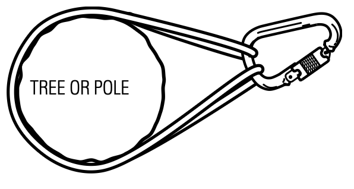
The girth hitch is not recommended for anchor systems because it greatly reduces the strength of the rope or webbing. A better method is to use a basket hitch: loop a tied piece of webbing around an anchor point and secure both end loops with a locking carabiner.
The butterfly knot is a loop knot that can be tied in the center of a rope. The loop can be used for attachment and also for isolating a bad section of the rope.
A clove hitch can be used in anchoring and belay systems to secure a rope to a carabiner. Its advantages are that it is easy to install and to adjust. However, the system should also include at least one additional knot that will not adjust, such as a figure eight follow through, to provide the fail-safe security not available with a clove hitch alone. Generally, a carabiner would be placed in the rope with an in line (midline) clove hitch. A midline clove hitch does not need a back up knot, but any clove hitch in the end of a rope does need a backup knot.
The autoblock is extremely similar to the Klemheist except the final bight of the sling is clipped into the carabiner instead of being passed through the other end of the sling. The autoblock is commonly used as a backup or “third hand” when rappelling. The autoblock is often attached to the leg loop of the harness on the rappel side. It can also be attached to the belay loop when the friction device is extended from the harness.
The overhand knot is the simplest and most common knot, made by looping a rope around itself and pulling one end through the loop. It’s often used as a simple stopper knot to keep a rope from slipping through something.
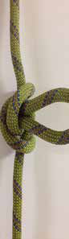
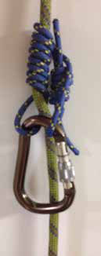
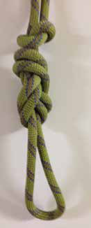
The Prusik hitch secures a loop of smaller rope or accessory cord to a climbing rope in such a way that it can be slid along the rope, but when it is loaded will bend the rope and hold securely. The hitch is commonly tied with accessory cord by a climber to ascend a rope or to secure a belay system in order to release the belayer. The cord used with a Prusik hitch should be 3-4 millimeters smaller or 60 to 65 percent smaller than the rope to which it is secured.
To use the Prusik hitch to ascend a climbing rope anchored at the top of a route, clip a carabiner to the free bend of the Prusik and attach it to a runner that will serve as a stirrup. Clip the climber’s harness to a second Prusik. A climber can stand in the stirrup and push the harness Prusik up the rope, then put weight on the harness and slide the stirrup Prusik higher. Repeating the process will carry the climber up the rope.
These friction hitches are basically the same as the Prusik hitch in function. The Bachman uses a carabiner integral with the hitch. The carabiner serves as a handle when advancing the hitch along the host rope. Both the Bachman and the Klemheist can be tied with either cord or webbing.
The barrel knot is just one side of the double fisherman’s knot. This knot is one of the options for backing up a bowline.
The mule knot is used for locking off a Münter hitch, slotted plate, or tubular device. The mule knot is tied by passing a bight of rope through a loop created in the rope just under the munter on the carabiner, then tying an overhand knot on a bight around the belay line. The mule knot should be tied as close to the friction device as possible due to potential slipping. Many people choose to clip a carabiner in the end of the bight of the tied overhand knot over the belay line to indicate it is purposeful rigging and not just a lot of knots.
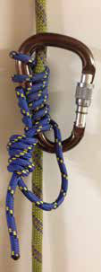
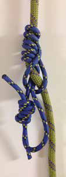
A half hitch and an over hand is also often taught to secure a Munter hitch or tubular device. In this case the bight of rope is not passed through a loop, only tied in a half hitch, followed by an overhand knot. When using this knot to secure rope movement of a friction device such as a tube device, the bight of rope is often brought through the carabiner below the tube device, and then the bight is brought up above the device to tie the half hitch and over hand.
The mariner’s knot is a hitch made by wrapping cordage between two carabiners. The mariner’s knot can be released while under load. This is useful when transferring a load between two different anchors, such as passing a knot or during a belay escape.
The Münter hitch can be used when a belay device is not available. Used with a locking carabiner (a large, steel, pear-shaped carabiner works best), the hitch allows the rope to be fed through the carabiner or pulled back. The Münter hitch can also be used by a rappeller to control the rate of descent. However, it can twist the rope. For these reasons, many prefer a different rappel device.
Competent belayers to manage the ropes that protect climbers and to be always ready to arrest a fall are vital to the safe operation of a Scout climbing program. In fact, belaying may be the most important skill in climbing. A belayer can safeguard inexperienced climbers and rappellers, and can make it possible for skilled climbers to attempt routes that would otherwise be too dangerous. There is no way to compensate for a belayer who does not have sound skills and good judgment. Climbing and rappelling activities cannot begin until the instructor is confident that all belayers are well trained and highly responsible.
The techniques of belaying have evolved dramatically through the decades. The earliest belayers simply grabbed a rope with their hands, braced themselves as best they could, and hoped that the climber tied to the other end would not fall. Over time, belayers learned the importance of tying themselves to an immovable object so that they would not be pulled down the mountain during the tumble of a climber they had been entrusted to protect. They also discovered ways to wrap the rope around their bodies and manage it to give anyone tied to the other end the best chance of surviving a fall.
Bottom belay system setup
More recently, the development of friction devices has revolutionized belaying by providing belayers with simple, reliable means of maintaining maximum control over the rope with minimum effort.
Any person climbing higher than their own shoulder height, or more than six feet, whichever is less, above the ground must be continuously protected with either a belay system or a personal safety system. Everyone must be belayed or tethered when within 8 feet of an edge where a fall of more than 6 feet could occur. When bouldering if the climber’s feet are less than their own shoulder height off the ground belays are not required, but the climber should be protected by spotters or pads positioned to lessen the impact of a short fall.
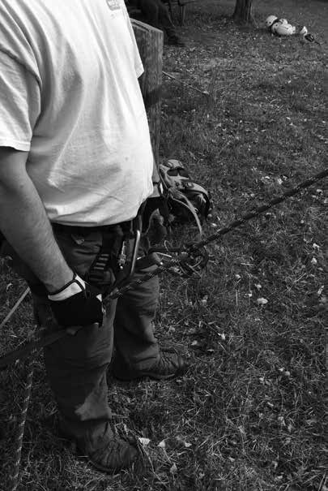
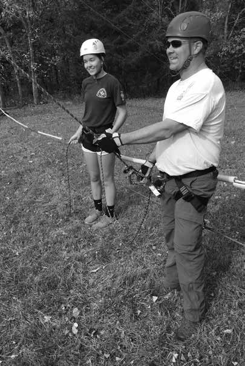
The most common belay technique is the slingshot belay. This involves attaching one end of the rope to the participant and passing it through a shear reduction device that is attached to the anchor at the top of the event. The rope then goes to the belayer, who may be at the top of the route but is typically at the bottom. The rope is passed through a friction device that is attached to the ground anchor. The belayer is attached to the anchor near the belay device that he or she is managing. A backup belayer is a few feet behind the belayer. Many councils, especially in traveling belays for COPE courses, also have rope tenders down the line from the backup belayer who will manage the extra rope.
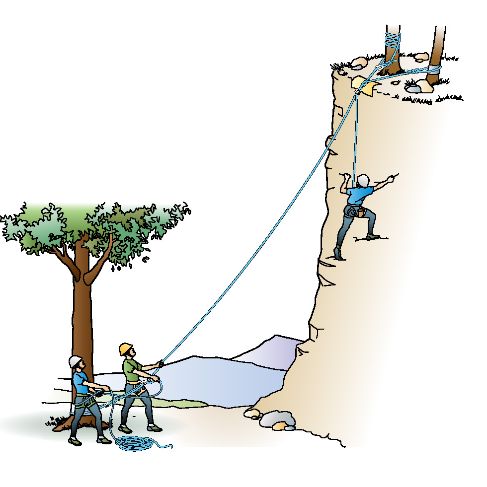
The ideal belaying setup is to belay off of the anchor and to have the belayer attached to the system if necessary. Belaying without an anchor may place both the belayer and the climber or rappeller at risk. If the climber or rappeller falls, an unanchored belayer may be pulled out of position and both the belayer and the climber or rappeller could be injured. In a situation where the belayer will belay off their belay loop (where they are in the system), belayer’s friction device should be connected to them in such a way that there is no slack and the belayer is in not pulling the rope out of alignment in a manner that a potential fall might pull them off their feet. In addition, belayers can create greater stability by bracing their feet against the ground or a rock outcropping. Belayers must at all times remain alert with their attention focused on the climbers or rappellers they are protecting. The back up belayer must have a safe place next to the belayer to perform their back up belaying duties, preferably off to the side of the belayers dominant belay hand.
To belay from above, attach the belayer to the belay anchor with a locking carabiner clipped to the front belay loop of the seat harness. The belayer should move forward to remove any slack between the harness and the anchor points. That will help prevent the belayer from being yanked off balance if the climber or rappeller falls. If necessary, adjust the length of the anchor sling to improve the belay position.
Whenever possible, a belay from above should have the friction device attached the cable or rigging point of the tower, possibly extended lower to eye level and the belay rope redirected to pull down to brake depending on the friction device. This top belay can also be rigged to a tree at the top of the climb, and also can be extended out closer to the edge with rope, webbing or tethers. The belayer operating this top belay must be on a safety tether if operating within 8 feet of the edge.
Many people use this belay for climbers who are climbing back to the top of the rock at the end of the climbing day, or for a top of the rock or tower independent belay (separate from the rappel fireman belay). If the independent belay has a belayer, and the rappel has a fireman belayer, those two persons are backing each other up. A separate back up belayer would not be necessary unless the instructor or director felt it was important for a youth learning how to belay for the first time.
The belayer should be located directly between the belay anchor system and the fall line. When the belay rope is sharply angled to one side of the fall line, a climber or rappeller who slips may pendulum across the face, increasing both the chances of injury and the strain on the belay system. Such a fall could also pull the belayer out of position if the loading force on the rope comes from a direction for which the belayer is not prepared.
While the techniques of belaying from the bottom of a route are the same as those used by belayers at the top of a climb or rappel, the methods by which a belayer is anchored may differ. A belayer on the ground who is belaying a climber may need to be tied into a single anchor point—one sturdy tree, for example, or a single rock outcropping—as opposed to the multiple anchor points of a belayer at the top of a climb. Belayers at the bottom of a route are usually situated so that even if they are pulled out of position, they cannot be dragged over a cliff or otherwise seriously endangered.A belayer on the ground should be secured to an anchoring system in the same manner as for belaying from above. The belayer must be outside the fall zone. A locking carabiner connects the front of the seat harness to the anchor sling. While sitting or standing, the belayer moves forward and/or adjusts the length of the anchor system to remove any slack between the belayer and the anchor point.
An effective belay can be accomplished from either a sitting or a standing position. A sitting belay is generally more stable because the belayer makes three points of contact with the ground. Bracing the feet against rocks can provide a solid belay stance. A sitting belayer is less apt to tire when belaying a number of climbing or rappelling participants; however, it is wise to change belayers long before the belayer tires physically or mentally.
A sitting belayer is easily observed by a nearby instructor. A standing belay from the top allows an experienced belayer to peer over the edge to observe the progress of the climber or rappeller. The anchor points should be fairly high so that the belayer stays in line with the direction of pull on the rope. A standing belayer can move effectively to take in or feed out rope as the progress of the climber or rappeller is observed. One foot should be placed forward of the other to provide the most stable stance. A standing belay from the bottom of the climb can be easy to manage. The belayer needs to stay close to the face of the climb. If the belayer backs up too far from the base, he or she is increasing the forces and may be yanked off his or her feet should the climber fall.
A belay device will bend the rope in such a way that the belayer can smoothly take in or feed out line. The belayer can also arrest a fall by bending the rope more sharply, creating friction and locking the rope in place. The devices are especially helpful if a small belayer is protecting larger rappellers or climbers. As with other climbing and rappelling skills, handling a belay device efficiently requires instruction and practice.
Use a locking carabiner to clip a bend of rope and the keeper loop of the device directly to an anchor system to which the belayer is independently clipped. The keeper loop will prevent the device from migrating along the rope and beyond the belayer’s reach. Arrange the rope so that the belayer’s stronger hand (usually the right hand for people who are right-handed) will be the brake hand—the hand closest to the free end of the rope. The other hand will be the guide hand, resting on that part of the rope leading to the climber or rappeller. Belay devices should be rigged and used according to the manufacturer’s instructions.
There are several acceptable techniques for managing a modern belay. Several are discussed below. All of these techniques share a set of common principles that, when employed properly, maximize the effectiveness of the belay system.
Start with the brake hand up by the friction device. The guide hand is extended toward the climber. The belayer grasps the rope with both hands and takes up slack. The brake hand will probably need to make a small arching move out of the locking position to get the rope moving. Then move the brake hand back to the locked position and down. Next, the guide hand lets go of the upper rope and grabs the brake side of the rope beneath the brake hand. After the guide hand has a firm grip, the brake hand slides back up next to the friction device. Finally, the guide hand returns to the pulling position and prepares to repeat the cycle. Many instructors also call this PBUS for ‘Pull, Brake, Under, Slide.’
In the chop method, both hands hold the rope on the brake side of the rope. When the belayer takes up slack, the rope is moved in an arched motion from the friction device to the brake position with both hands. Then one hand at a time is slid back up to the friction device. The arched motion loosens the friction device enough to allow the rope to slide through.
Mistakes by inexperienced belayers are a common cause of climbing injuries. A backup belayer can place the belay system in a brake position if the belayer, for some reason, cannot or does not. The backup belayer also can remind the belayer to be attentive to their climber; functioning together as a belay team.
A back up belayer is required for all Scouting belays, except for a few rare natural area belays where there is not room for a backup belayer to stand, and in case where 2 instructors are setting up a tower or course with no backup belayer available.
In the event the belayer becomes unable to fulfill their responsibility, a backup belayer can take over the belay responsibility. A backup belayer stands down rope from the friction device a few feet away from, and slightly behind the belayer, on the same side as the belayer’s brake hand. From this position they can apply tension on the friction device the same way as the belayer can to arrest a fall. Many backup belayers wrap the rope around their hips and hold both sections of rope out in front of them.
The backup belayer should take in slack and give slack in coordination with the belayer. The backup belayer needs to be attentive. Do not to keep the rope too tight as this will prohibit the belayer from operating the belay effectively. The backup belayer must not have so much slack that they cannot effectively lock the belay if needed. A properly tensioned rope between the belayer and the backup belayer will have a belly but will not lie on the ground. Some instructors say “the rope will make a smile that never touches the ground.”
Safety at climbing and rappelling areas is impossible without good communication. Climbers, rappellers, and belayers have developed a standard set of signals to exchange information with one another. Participants should be introduced to these signals and should use them throughout Scouting America climbing and rappelling activities.
Climbing instructors may have opportunities to work with participants who are hearing impaired. Instructors should meet ahead of time with the adult leaders of those participants to develop appropriate strategies for ensuring safe communications during climbing and rappelling. A climbing instructor should be willing and able to work with hearing-impaired participants in a climbing or rappelling activity.
Limit talking in climbing areas to essential exchanges of information. Noise and the distractions of casual conversations can confuse belayers and those on belay. Participants waiting their turn should curtail visiting and avoid horseplay. If chattering becomes an issue, instructors should suspend climbing and rappelling activities until the situation has been remedied. If it is too windy or the area is too noisy for climbers and belayers to hear one another clearly, climbing and rappelling should be postponed or moved to another site.
A shout of “Rock!” is perhaps the most important of climbing’s signals. It warns everyone that there is immediate danger from something falling—a rock, a carabiner, an article of clothing, etc. Yells of “Rock! Rock! Rock!” warn of more danger than a single shout. Those hearing the warning should not look up but must immediately protect themselves in the most efficient way—taking refuge under a ledge, moving quickly to the left or right, or becoming “small” under one’s climbing helmet.
The signals between a belayer and a climber or rappeller are clear commands and answers of just a word or two. Each command is always followed by a response of acknowledgment to ensure that the command was heard and correctly understood. Each word should be enunciated loudly and slowly, especially if the wind is blowing, distance is a factor, or a ledge or overhang prevents a belayer and a climber or rappeller from seeing one another. Several participants climbing or rappelling in close proximity should use names to be sure the right person is getting the message. When in doubt, repeat signals and responses.
Generally accepted signals exchanged between a climber and a belayer include the following, listed in a normal sequence.
| Climber | Belayer | Meaning |
|---|---|---|
| “On belay?” | “Is the belay ready?” | |
| “Belay on.” | “Your belay is ready.” | |
| “Climbing.” | “Here I come.” | |
| “Climb” or “Climb on.” | “Come ahead.” | |
| “Slack.” | “I need some slack in the rope.” | |
| “Up rope.” | “Take in the loose rope.” | |
| “Falling!” | “I’m falling! Brake the rope!” | |
| “Tension.” | “Hold the rope tightly in case I fall.” | |
| “Got you.” | “There’s tension on the rope.” | |
| “Ready to lower.” | “Lower me down the route.” | |
| “Lowering.” | “I’m letting you down now.” | |
| “Rock!” | “Rock!” | “Look out for falling objects.” |
| “Rope!” | “Rope!” | “Rope being thrown down.” |
| “Clear.” | “Clear.” | “It is safe to throw down a rope.” |
| “Off belay.” | “I no longer need a belay.” | |
| “Belay off.” | “I’m no longer belaying you.” |
The verbal signals used by rappellers are a little different from those of climbers, but the basic information they share is the same.
| Rappeller | Belayer | Meaning |
|---|---|---|
| “On belay?” | “Is the belay ready?” | |
| “Belay on.” | “I’m ready to belay.” | |
| “Rappelling.” | “Your belay is ready.” | |
| “Rappel on.” | “Go ahead.” | |
| “Falling!” | “I’m falling! Brake the rope!” | |
| “Off belay.” | “I no longer need a belay.” | |
| “Belay off.” | “I’m no longer belaying you.” | |
| “Off rappel” or “Off rope.” | “The rope is ready for the next rappeller.” |
In extremely rare situations, it may be necessary to remove the belayer from the belay system. If the belay rope is attached directly to the anchor system with the belayer attached independently, it is very easy to do this.
If the belay rope is attached directly to the belayer’s harness and not directly to the anchor, the process is much more involved. One option is:
Practice a belay takeover method that works for you. The need to takeover the belay is very rare, but on the day that a rock hits the belayer, or a COPE belayer is stung by a bee and has a severe allergic reaction, having practiced this incident resolution will get the belayer to medical attention faster.
Anything man-made for the purpose of climbing is typically called an artificial rock wall, climbing tower, or face. These can be made of wood or a variety or composite materials that look very much like rock. To define a level of challenge, rock-like “holds” or “rocks” are attached to the surface via a bolt mechanism. Occasionally specific routes will be identified with same color holes or colored tape. By creatively placing holds, a single wall can contain a wide range of challenges from very easy to extremely difficult. Artificial climbing surfaces are very popular training areas for real rock climbing. They have the advantages of being designed to maximize safety while being flexible in the level of challenge provided. They also provide a climbing experience in an area where natural rock climbing surfaces do not exist. The setup process, operating procedures, and operating parameters for an artificial surface are defined well in advance of the operation and do not require a great deal of creativity in rigging. For this reason, a person not highly skilled in setting up anchor systems in natural areas can safely and successfully operate a tower or wall to provide sufficient challenge to complete a Climbing merit badge program. Like natural areas, artificial structures do have their nuances. This chapter will look at climbing and rappelling using artificial surfaces.
Anchor systems on towers and artificial walls fall under the same inspection requirements as elements on a COPE course. Belays for climbing and rappelling are typically slingshot systems with the belayer on the ground and a center point at the top of the route. Attention needs to be paid to the position of the anchor point when setting routes. A climber should not be able to get too far out of the fall line from the anchor point. This introduces a pendulum effect into the fall, which increases the possibility of injury. Pendulum falls raise the torsion loads on the gear and can affect climbers on adjacent routes. Rappel activity line anchors must be set according to the current NCAP standards. Since jams and entanglements are the most credible incident scenarios, releasable attachments to rappel anchors can eliminate the need to have specialized rescue gear on hand for entanglement scenarios. A jam can be cleared with minimal impact on the participant and program timing.
Belay pipes are large-diameter steel pipes that have been attached to the climbing structure for use as a center point. Typically these are attached to the structure so that they cannot rotate and are backed up by a steel cable that runs through the pipe and attaches to the structure at both ends. For belay systems, the large-diameter steel pipes serve well as a shear-reduction device by simply routing the belay line over the top then back down. For wide walls with many routes, this creates an almost infinite number of center point placements. When a heavy climber is being belayed by a smaller belayer, an extra wrap on steel can dramatically reduce the fall loads transferred to the belayer. The trade-off is that taking up rope can be physically more strenuous. Pipes can be rigged as releasable anchors in two ways. They can be wrapped as a “tensionless wrap” (see chapter 26, “Anchoring”) or tied with either a mule knot and a belay device or a Münter hitch.
Belay cables are simply stranded steel cables positioned such that a steel carabiner can be clipped to them to create a center point. They can be hung horizontally across one or more routes or vertically with a loop in the end. When strung horizontally, the center point carabiner will tend to “center seek” under load. This can create a dangerous situation if multiple center points are on the same cable. There are many techniques for attaching hardware to the cables to prevent center seeking. It is likely that the facility already has these in place, but they should be checked at setup to make sure they do not slide. When center seeking, the center point will always move toward the far cable anchor. In the absence of hardware, a piece of webbing can be tied to the nearest cable anchor and the cebter point carabiner as a redirect. Releasable rappels can be rigged to a carabiner using a mule knot and a belay device or a Münter hitch. Never use aluminum carabiners on steel cables. The hard steel cable can “saw through” the soft aluminum, resulting in very undesirable outcomes.
Belay cables should be regularly inspected for rust or environmental degradation. Occasionally a single strand or two of a cable will break. This protruding wire can tear through skin like a razor blade. It is important to always wear gloves when inspecting or placing hands on cables.
Anchoring to poles can be tricky if there has not been an anchor bolt or cable arrangement already designed into the pole system. For horizontal poles, one should consider using a tensionless wrap, webbing with a basket hitch, or a wrap three pull two. Tensionless wraps, basket hitches, and wrap three pull two are covered in chapter 26, “Anchoring.”
For vertical poles, it is recommended that only bolt and cable systems be used for anchors. Wraps and hitches do not perform well when loaded perpendicular to their application. They tend to roll down or unwrap, pulling the anchor around the pole.
Pulleys do one thing: they redirect tension force. A downward pull on a rope routed through an anchored pulley above creates almost exactly the same amount of pull upward on the other end of the rope. When a load is being lifted, it may not be obvious that the amount of force that the pulley exerts on its anchor is twice the amount of the load. This is because two lines are pulling downward with the same amount of force: one load and one pulling force. Pulleys can be used to create mechanical advantage. Generally, for every wheel added to a pulley system, additional mechanical advantage is gained. The payoff for being able to lift heavier loads with less pulling force is that the amount of rope needed is increased with each trip around the pulleys. So, a 4 to 1 system will be able to lift 100 pounds with 25 pounds of force. But moving that load 1 foot means 4 feet of rope must be pulled through the system (see chapter 12, “Mechanical Advantage Systems,” for more information).
At the risk of sounding glib, connections are just that: they connect or attach things. In climbing and rappelling, there are numerous devices to establish connections. These include carabiners, knots, harness loops, static belay lines, and a myriad of cable connectors. Specific details are covered in chapter 8, “Life Safety Systems.”
On a tower or climbing wall, you are likely to have a well-defined procedure as to where and how the connections are made. What is important to remember is that all of the connections from the participant to the belay anchor are solid and safe. Before every participant or instructor commits to going over the edge for a rappel or begins their climb, make sure the connections have been properly attached and the devices are properly configured for use. Examples include making sure harness buckles are doubled back, friction devices are properly configured, knots and backups are checked, and locking carabiners are down and locked. Throughout the day, periodic checks should be made to the connections in the anchor systems as well. The CHECK placard and process are great reminders of this.
Ground anchors provide a solid ground attachment for the belay. Ground anchors can be posts or bollards deeply set into the ground, a screw-in type anchor, or perhaps just a big steel eyebolt set in concrete. Some facilities will use a single cable strung between two posts to attach multiple ground anchored belays. Center seeking principles apply here too, so movement of the anchor attachment along the cable should be controlled.
Ground anchors (and others) can be rigged with the belayer either “in-system” or “out-of-system.” In system belay means that the belayer is one of the links in the chain. The belay device is attached to the harness in the front and the harness is attached to the ground anchor behind. This method more closely approximates a belay in a natural area as the belayer’s body weight is the first mass to take the shock load of a fall. It also allows the belayer to have a much better feel for the climber. An in-system belayer can add a considerable amount of tension to the line very quickly just by sitting back. The belayer can also use whatever hand action he or she prefers—slip-slap-slide, chop, or BUS. In-system is an effective method but has some disadvantages. An in-system belayer has to “escape” the belay should he or she need to tie it off to deal with an incident. This escape can be time consuming and does require extra training. In-system can also be more tiring for the belayer if belaying a sequence of climbers.
An out-of-system belay has the belay device attached directly to the anchor via a short rope or sling. The belayer stands beside it. The advantage of this is that the entire load of the fall is directly transferred into the anchor and the belayer needs only break the fall using the belay device. The disadvantage is that the belay device position is to the side of the belayer, which may limit the hand method chosen. The belayer also uses the feel for the climber with this method and taking up slack involves pulling rope back through the belay device.
Climbing on an artificial surface uses all of the body positions and hand/foot actions as one would use on a real rock surface. These are described in chapter 25, “Rock Climbing, Bouldering, and Aid Climbing.” Care should be taken to develop good belayer– participant communication and to follow the CHECK system when starting a climb.
Rappel is a French word meaning “recall.” Climbers use rappelling to descend steep cliffs by making a controlled descent of a stationary rope. Rappelling is a vital skill for anyone interested in becoming a well-rounded mountaineer. It is also a terrific activity for novices, giving them opportunities to learn something new, to increase their self-confidence, and to enjoy an activity they are likely to find exciting. For decades, people rappelled by wrapping rope around their bodies in ways that capitalized on friction to slow their descents. Rappel devices used by modern alpinists make rappelling more reliable, safer, and easier to master. Several belay devices are acceptable for Scouting America climbing and rappelling, including the figure eight device, Sticht plate, and other tubular devices. Belayers must be given specific instructions for using the type of belay device provided.
A releasable rappel system is one in which the activity line, or descent line, is attached to its anchor via a belay device or Münter hitch. It is rigged ready to lower and then tied off with a mule knot and backup knot or carabiner. The rigging can use any acceptable belay device, a tubular device, Sticht plate, figure eight, or Münter hitch. If using a Münter hitch, be sure to use a pear-shaped carabiner that allows the hitch to operate correctly. D-shaped carabiners can badly jam a Münter hitch and render it ineffective. Tying the mule knot and rigging a releasable rappel system is not hard, but it does take some practice.
With all releasable rappel systems, extra rope at the top to let out slack is always handy and prevents the need to drop the line in the case of a release. Many programs choose to set their rope lengths so that the participant can be lowered all the way to the ground. This means the activity line is a little more than twice the length of the rappel. Doing this does increase the amount of rope necessary, but rope wear is reduced because the line can be reversed with each use. For a fireman’s belay with two releases, at least one of the ropes must be long enough to lower the participant all the way to the bottom.
Once the system is rigged, a participant who has become jammed in the activity line(s) can be either lowered to the ground in a controlled manner by releasing the line at the top or lowered enough to transfer all weight to the belay line, clear the jam, and then continue the activity. Some common scenarios using the releasable rappel are discussed below. It is important to realize that when using a releasable rappel system the belayer will have to work with a second trained person to release the rappel. Like all anchor hardware and connections, the releasable rappel should be monitored throughout the event.
The preferred technique is to employ a static rappel line as the activity rope and to tie an independent dynamic belay into the rappeller’s harness. If the static rappel rope is twice the height of the rappel, you have the option to lower the rappeller to the ground. If it is not long enough to go to the ground, it can still be an effective incident resolution component. If the rappel device becomes jammed, follow this procedure, being sure to clearly communicate among the rappeller, belayer, and instructor what is being done and why. Proceed methodically.
There are two alternative scenarios for this configuration:
Another technique is to employ two independently anchored static rappel ropes with a fireman’s belay. This practice came from a time when many fire departments standards required stronger ropes, so they used two to make up the strength. These must be twice the height of the rappel to have the option to lower the rappeller to the ground. For example, for a 40-foot rappel, each static line must have at least 40 feet of extra rope at the anchor. On each rappel rope, use either a belay device or a Münter hitch and a mule knot with a pear-shaped carabiner. If the rappel device becomes jammed, follow this procedure, being sure to clearly communicate among the rappeller, belayer, and instructor what is being done and why. Proceed methodically.
Every rappel rope must be securely anchored. Anchoring systems must be set in line with the direction of the load that will be placed upon the rope. Rappelling may be done with either a single rope or a double rope. Because two ropes will generate more friction when wrapped around a figure eight, the descent of a double-rope rappeller will be slower than the rappel of someone on a single line. That additional friction may discourage rappellers from attempting to make rapid descents or from bouncing down the rock face, practices that can put greater strain on rope, hardware, and anchor points.
The established routes used by most Scouting America climbing and rappelling programs are of known height, so it is likely that a rope set up for rappelling will reach all the way to the bottom with plenty of slack to spare. Even so, instructors should get in the habit—every time they attach a rappel rope to an anchor—of making sure the rope is long enough so that there is no chance a participant can slide off the rope before reaching a safe, off-belay stance on the ground.
Belaying rappellers provides an important margin of safety, especially for participants with beginning and intermediate skills. Anyone involved in Scouting America rappelling activities must be belayed while rappelling.
Standardized routines at the site will help ensure the safe and orderly management of activities. Among the most important guidelines are these:
An older, but commonly used, rappel device in Scouting is the figure eight. To secure it to a rappeller, form a bend in the rappel rope. Feed the bend through the larger opening of the figure eight, then loop the bend over the smaller portion of the device. If the rappeller is right-handed, the rope should hang from the right side of the figure eight (from the left side for a left-handed rappeller). Next, use a locking carabiner clipped into the smaller opening of the device to secure the figure eight to the rappeller’s harness.
Most recreational climbers and guides use an ATC or tube style device for rappelling. To secure the device, thread the rope as the manufacturer recommends for belaying and rappelling. Clip a locking carabiner through the rope and keeper loop of the device then attach the carabiner to the rappeller’s harness.
Rappelling is usually a matter of simply walking backward down the face of a wall while controlling one’s speed with the rappel device. A seasoned rappeller should have no difficulty with that concept, but novices can find it completely counterintuitive to lean backward over open space. They may be nervous and even fearful. One way to help beginners is to provide introductory training on flat ground or on a small hill. Participants can be instructed to lean backward until they are sitting on the ground.
A right-handed rappeller should consider the right hand to be the brake hand. Grasp the trailing end of the rappel rope with the brake hand and bring it tightly alongside the right buttock. The brake hand must never leave the rope! (For left-handed rappellers, the left hand is the brake hand, and the rappel rope passes along the left side of the body.) As the rappeller backs down the cliff, friction created by the rope’s motion through the rappel device will slow the descent. The rappeller can control the speed or completely stop the descent by pulling the rope more securely against the body with the brake hand. (Participants who have experience with belay and rappel devices may recognize that the principles involved in rappelling with a rappel device are somewhat similar to those practiced by belayers.)
An instructor stationed at the bottom of a rappel can monitor the progress of each participant and provide guidance and encouragement. That instructor might serve as the belayer, standing ready to place tension on the end of the rappel rope (a fireman’s belay) to help a participant control the rate of descent.
Instructors can help participants overcome their concerns by helping them understand that the anchors are secure, the belayer will provide a backup, and the basic rappelling technique will ensure a safe trip down. Recognizing the anxieties of rappellers and guiding them in a calm, reassuring manner will greatly enhance the experience for participants and for instructors.
After a participant has been secured to the belay system and the rappel rope, the instructor at the top of the route must double-check the way the participant is tied into the belay and rappel ropes, see that the belayer is positioned and ready, and make a quick visual survey of the anchoring systems. Use CHECK.
When everything is in order, the rappeller may commence in the following sequence:
RAPPEL EXTENSION
AUTOBLOCK
An autoblock, often called a “third hand,” is a loop of accessory cord wrapped around a rappel rope. Standard as a backup for rappellers, an autoblock can stop a descent and free the rappeller’s hands. It also serves as a backup when a lightweight belayer belays a heavy rappeller.
To work effectively the autoblock requires the rappel device to be extended away from the harness. This can be done using a life-safety rated piece of cordage or pre-sewn runner attached to the harness’s tie-in point using a basket hitch or girth hitch. The rappel device is then connected to the extended runner.
The autoblock is tied using a 24-inch sling of webbing or 5- to 7-millimeter accessory cord. Wrap the doubled accessory cord or webbing four times around the rappel rope below the rappel device. Using a locking carabiner, both ends of the accessory cord or webbing loop into the harnesse’s belay loop.
Instruct the rappeller to hold the brake rope just above the top of the autoblock (the four accessory cord wraps) with the brake hand while rappelling. If the rappeller removes the brake hand from the rope, the autoblock will hold the rope in place and stop the rappeller’s descent.
The older practice of attaching the autoblock to the harness leg loop should not be used as leg loops are generally not designed by the manufacturers to be an attachment point.
A key role for instructors at the top of a rappel route is helping rappellers position themselves to begin their descents. It is easier to negotiate the edge if the rappel rope is anchored above the rappeller’s waist height. Anchoring the rappel rope at a point lower than waist height puts increased forces on the legs of the rappeller and might not be appropriate for beginners. Remember that everyone near the cliff’s edge, including the instructor, must be secured to a belay or a safety line.
The gear used for operating COPE and climbing programs has been developed over more than 150 years of serious mountaineering. The Union Internationale des Associations d’Alpinisme, or UIAA, is a group of mountain travel experts that sets standards and testing procedures for climbing equipment. The European Committee for Standardization (known as CEN) has similar standards for excellence. All ropes and hardware used by Scouts or Venturers for COPE and climbing programs must be designed for climbing and/or have UIAA, CEN, or National Fire Protection Association (NFPA) approval. Almost all climbing equipment sold by reputable dealers has that approval, but insist upon seeing proof, usually in the form of a brochure accompanying a new piece of gear or the UIAA, NFPA, or CEN stamp somewhere on an item.
All specialized COPE and climbing equipment must be made specifically for these activities and must be acquired new from reputable suppliers. These sources of equipment ARE NOT ACCEPTABLE:
Gear purchased online, even from a credible supplier, should be checked to see if the manufacture date is the most recent available. When ordering gear online, contact online sellers personally to request recently manufactured, third party tested life safety gear for your staff and programs.
Determining the condition of gear to be used for COPE and climbing programs requires two levels of safety inspection—visual and formal. The two levels give maximum opportunities for discovering problems with gear that may have arisen since its last use and for observing any long-term wear or deterioration caused by use or exposure to stresses such as weather. Never modify or alter a climbing harness or any other piece of climbing equipment because this may render it unsafe as well as invalidate the manufacturer’s warranty.
An instructor must visually inspect all COPE and climbing equipment just before it is put into use. Instructors conducting visual inspections should look for anything that could indicate a problem with a piece of equipment—frayed webbing or harnesses, damaged hardware, etc. Give every rope an inch-by inch hand and eye examination. Any piece of gear that arouses suspicion must be put aside pending a more thorough inspection to determine whether the item in question should be removed from the inventory for proper disposal.
The local COPE and climbing committee must conduct an annual inspection of facilities and equipment as well as maintain an inventory of equipment. In addition, equipment and facilities must be inspected annually by a third party (a challenge course builder).
Records must be maintained on all aspects of all COPE, climbing, and rappelling programs. These records can provide valuable information for future program planning and for accurate management of equipment. Each piece of equipment should be marked so that its history can be tracked. Detailed records should be kept for ropes, helmets, and harnesses with an item description, including date of purchase, date put into service, eventual date of retirement, and unusual incidents.
Always consult your manufacturer about where and how to mark your life safety equipment.
A useful format for keeping an inventory is a loose leaf binder divided into sections for various types of information. Pages can be added over time. Records may be kept in an electronic format. Commercial software is available for this purpose. When storing records electronically, ensure there is a plan to regularly backup the data and to retain and recover the data if you change to a different software product.
Equipment records usually have three major sections.
All equipment should be stored in a securable location, such as a locked tower or shed.
Equipment that has been damaged or has reached the end of its safe lifetime must be rendered useless by altering it in such a way that it can never be accidentally used for any climbing, rappelling, or belaying activities. Never give away retired equipment; that leaves open the possibility of its being put back into service.
All soft goods (harnesses, helmets and rope, etc.) equipment must be retired according to the manufacturer’s recommend retirement date, or no more than 10 years. When purchasing gear, many programs consider the manufacturer’s recommended retirement date to see what usable life expectancy they will get out of gear.
The first level of safety inspection at a COPE or climbing site must occur just before the use of a COPE event or just before climbing activities begin, and is done by the instructor who will facilitate a group through a challenge. This investigation reviews the conditions of the environment at the site, the soundness of the structure (if applicable), and the condition of the equipment to be used during the activity.
Equipment for COPE events must pass both a visual inspection and, possibly, a weight or height assessment to ensure that the activity will be safe for participants. Instructors or the director should follow a written checklist that includes specific points to be inspected on each event. The instructor or director does not open an event until every item on the checklist has been found to be in satisfactory condition.
Proper emergency preparedness should also include the following:
Follow these guidelines before using equipment.
Remove any item that fails inspection. Close any site that fails inspection.
Mechanical advantage is the ratio of load lifted to the force applied to move the load. A 3:1 mechanical advantage lifts a load three times as great through application of one unit of force to the haul line. The haul line must be moved 3 feet to lift the load 1 foot. Mechanical advantage systems trade distance for force. Deciding which mechanical advantage haul system to use for any given situation will depend on the weight of the load needing to be hauled, how many people can be on the haul team (force available), the equipment available, and the space available in which to work. Mechanical advantage systems generally utilize pulleys; however, pulleys are not required and the rope can pass through a carabiner instead. Using carabiners in place of a pulley will add friction to the system and make lifting a load more difficult.
There are several parts to a pulley: axle, sheave, bearings or bushings, side plate, and extra becket.
The axle is the bolt that the pulley sheave spins around. The sheave is the wheel that spins around the axle. Sheaves are commonly made of aluminum, steel, or plastic (nylon). Pulleys used on steel cable must have a steel sheave. The sheave rides around the axle on bearings or bushings in the hub of the pulley. Sealed bearing pulleys are slightly more efficient than bushing pulleys and are more resistant to dirt and weathering. Bushing pulleys are generally lighter, spin more freely, and are less expensive. Additional features of pulleys can include swiveling side plates (cheeks) for easy rope loading; a solid frame housing that the end of the rope must be fed through; and an attachment point on the opposite side of the main attachment point called an extra becket for adding pulleys or clipping in the end of a line for increased mechanical advantage. The pulley may be manufactured with built-in backups in the pulley frames. This type of pulley should be used in applications where the pulley cannot be inspected on a daily basis. Pulleys might have a cammed device to act as a built-in progress capture that keeps the rope from slipping back after it has been hauled forward.
In creating a mechanical advantage system, consider the need for a progress capture. A progress capture prevents the rope from going backward through the system. Those who are hauling may need to rest or change position, or the haul system may need to be reset. The progress capture also prevents accidentally dropping the load. Examples of progress capture are Prusik hitches, a Prusik hitch with a Prusik minding pulley, self-assisted braking devices (e.g., Grigri), or the friction device of the primary belay.
Pulleys attached to the anchor only change the rope’s direction (they do NOT add mechanical advantage). Traveling (moving) pulleys result in mechanical advantage.
Consideration also needs to be given to raising power. A good rule of thumb is to use a 3:1 for a one-person load or a 5:1 for a two-person load. Hauling power should also be a concern. If the number of haulers multiplied by the mechanical advantage of the system gets much greater than 12 (e.g., a 3:1 with more than four haulers), the system may have too much raising power. If the load being raised catches on an obstruction, too much raising power may damage the item being raised and overstress the system.
In deciding how haul systems are to be built, consideration needs to be given to the amount of rope that will be played out and when the system will be applied to the rope. A 4:1 mechanical advantage system rigged with double-sheave pulleys will require more rope than a compound 4:1. However, the 4:1 with double-sheave pulleys can be prerigged and blocked up, waiting in a rescue bag.
When building a haul system that will attach to the main line, a haul cam can serve as the “ratchet” device, allowing the haul system to be reset. The haul cam (or triple-wrapped Prusik) attaches to the main line between the anchor and the load. A Prusik will usually slip if tensioned too tightly. That slipping will serve as a warning sign that an obstruction is likely keeping the load from being raised. Cordage used for the Prusiks in mechanical advantage systems should be no smaller than 7mm. A mechanical ascender is more likely to damage or cut the rope if overtensioned. Avoid toothed cams; they are not rated for this type of load and can cause rope damage under rescue loads.
A 2:1 system can be used to lift short distances, such as in lifting a person back onto an element from which he or she has slipped. Another application would be to help a climber past a crux.
A 3:1 system could be used to hoist a participant on a natural site, to raise a person out of a cave, to raise a special needs participant to an element, to raise a person back up onto an element, or to lift a staff member or rescuer to assist a participant. A top-roped belay line can be converted to a 3:1 to lift a climber.
An application of a 4:1 system would be to raise a rescuer to a participant who needs to be rescued. This system will probably need to raise the load of the rescuer and the participant high enough to get the weight of the participant off of the original belay or safety system. A 4:1 is commonly built with double-sheave pulleys and may be able to be prerigged in a bag.
Applications of a 5:1 system are similar to the uses for a 3:1 but when more mechanical advantage might be needed due to the distance the load needs to be raised. Another reason to need more mechanical advantage might be because there aren’t enough people around for the haul team.
Council COPE and climbing committees should prepare a written emergency response plan for each site that will be used for COPE, climbing, rappelling, or bouldering activities. The plan should include basic information such as:
The council’s emergency response plan should detail different types of first aid that staff members are trained to administer. The types of first aid should not go beyond what is covered in an eight-hour basic first-aid session. The first-aid kit that is on the program site should support only those treatments that are listed in the emergency plan and in the staff training plan. The emergency response plan should list certain medical scenarios for which the staff will seek outside help and how to summon that outside help. The plan should also detail what means of electronic communication are used by the program staff, how emergency vehicles can access the program site, and how people will be evacuated to the closest point a vehicle can reach.
The council’s emergency response plan should be specific in listing elements of the program and the types of rescues that would be used on which events based on the equipment the council has in its rescue pack and the condition of the participant. The plan should specify where the rescue pack is located during the program and which staff members will perform the needed rescues. Multiple rescue packs may be needed based on the size of the program site.
The onsite rescue pack will have the equipment to support the rescue techniques in the emergency response plan. The response plan will specify what to do with other participants while a rescue is being performed.
The council’s emergency response plan should give guidance as to what types of weather will stipulate the program being shut down. There should be considerations made for wind, lightning, rain, excessive heat, snow, or ice. The plan should include a wait time if the staff feels the weather might pass.
The council’s emergency response plan is tied into the staff training plan so that the program staff knows which rescue techniques and which first-aid treatments they are to perform based on the condition of the participant.
Incident resolution plans should be reviewed and practiced with instructors at least annually, or more often if there is a high turnover of instructors. Discuss with your council what their policies are on emergencies and incident resolution.
Put this in your first-aid kit for ready reference.
When calling for outside assistance, either by dialing 911 or by sending responsible individuals to summon help, inform authorities of the following:
Finally, after the report has been called in, remain on the line until help arrives or those you have called give you other instructions. Be sure to give a callback phone number before hanging up.
Often the media monitors emergency channels, and may provide coverage of an incident.
By reporting an incident In Scouting, you play a crucial role in maintaining the safety and well-being of Scouting America community. Timely, clear, concise, and thorough incident reports enable a fitting response and provide an opportunity for analysis and continuous improvement in our programs.
Injuries occurring in COPE and Climbing programs requiring more than basic first aid must be reported.
Near misses – a situation that could have resulted in an injury but didn’t – must also be reported.
Accurate documentation is key to later evaluation of the incident:
Your council staff can assist in filing a timely incident or near miss report. Visit scouting.org/health-and safety for more information.
At the conclusion of an incident resolution or the treatment of an injured person, it may be wise to discuss the events with the other participants and allow them to ask questions and share their feelings. Arrange for a critical incident stress debriefing by a capable provider for the benefit of youths and adults who were present during any phase.
Instructors and directors who have witnessed close calls or who have been involved in response efforts, especially if the injuries were severe or the scene was traumatic, may benefit from further discussions with qualified adults who can help them understand and deal with the emotions they are experiencing.
Soon after the incident, the climbing director, instructors, and other appropriate personnel of the camp, district, council, or council high adventure base should review the events, determine the cause of the accident, and develop strategies for preventing a recurrence.
Emergency preparation entails four components: participants, staff, equipment, and policies.
Always have a well-equipped first-aid kit close at hand.
Many of the published recommendations for contents of first-aid kits are not evidence based. The following list is based upon studies reporting the types of incidents encountered on challenge courses and at climbing sites, as well as the supplies appropriate for use by an individual with the training and certification outlined above.
Note that recommendations regarding equipment for emergency access to the course and for securing and lowering participants in emergencies are not included above. These vary with the location of the course, its elements, its accessibility, and specifics of its construction. Thus, this equipment is completely site-specific.
The recommended training programs requisite for first-aid certification should provide the most current information on addressing illness and injuries on courses. The following guidelines provide some additional information that is particularly pertinent to COPE and climbing programs.
When COPE or climbing activities are components of a regular resident camp program, the camp’s first-aid log should be used for recording any incidents requiring first aid or definitive medical evaluation. Outside resident camp, it is still important that there be a written record of any first aid administered. Ideally, this should be in a numbered, bound book, with ink entries that are made contemporaneously. Entries in a first-aid log should be simple descriptions of what one observed and what one did. They are not the place for “diagnoses.”
There is little need for rescues in a well-managed COPE or climbing program with a well-trained staff. The concept of a “rescue” implies that an individual has gotten into a place or a situation that demands specialized equipment and expertise for safe removal. While occasional mishaps are probably inevitable in outdoor adventure activities, it should be exceedingly rare for these to demand much more than common sense, good judgment, and some basic skills. This concept has led the industry to teach “incident resolution” instead of “rescue.” Similarly, we do not assist “victims” but rather “participants.”
In the past, the bulk of “rescues” in COPE or climbing activities resulted from entanglements or malfunction of rappel devices or climbers getting themselves into situations from which they could not move. When properly set up, dynamic top-roped belay systems and releasable rappels should make it possible to lower participants from such situations with a minimum of drama.
Many situations requiring a rescue could have been prevented with proper planning. Thorough staff training and attention to detail help to minimize the risk of serious injury during climbing and rappelling activities. Nonetheless, the nature of the program can result in emergencies requiring incident resolution. Almost all incidents can be predetermined by the design of the event and implementation of the program.
Most incidents can be divided into three categories:
Your incident resolution plan should address the following:
In any incident resolution scenario, the preferred outcome is that the participant will be able to continue with the event. In many cases this can be achieved by communicating with and assisting the participant. If continuation is not possible, the next best outcome is that the participant will be lowered to the ground. This may be due to physical or emotional limitations or an injury that has occurred on the event. The worst-case outcome is that the participant will have to be moved using a pick-off rescue. This outcome occurs only in the rarest of circumstances, and every attempt should be made to avoid a pick-off rescue scenario. Pick-off rescues should be performed only by trained individuals.
When an incident occurs, it should be evaluated and the following questions asked:
All incident resolution plans should avoid a situation that puts additional people at risk or causes further harm to the participant. Rescuers should avoid doing anything that cannot be easily undone.
If a situation develops, stay calm and assess it. You will implement the appropriate course of action following this order of rescue:
C—Communicate with the participant.
A—Assist the participant.
L—Lower the participant.
M—Move to the participant.
E—Evaluate.
R—Rehearse.
Communication is used in every scenario. In an emotional situation, a climber or rappeller may be frozen on a rock face, tower, or high-course event. Make eye contact if possible. The rescuer should remove mirrored sunglasses so that the participant can see his or her eyes. Communication with eye contact is more personal and reassuring. Talk to the person in a calm voice.
An emotional concern might be remedied by talking the person through the situation using simple, clear, concise, and reassuring words. Ask the participant how he or she feels and what you can do to help. Remember, Scouting activities are “challenge by choice,” so the participant plays the key role in deciding what to do next. Participants should never be pressured into continuing against their will. If the incident can be resolved with just communication, then the participant will most likely be able to continue.
A technical issue may be able to be resolved by the participant. Provide clear directions and allow the participant to resolve the situation.
Assisting the participant is most often necessary when there is a technical issue. Several simple techniques can be used to help participants get back onto an event, climb past the crux of a route, or free a jammed rappel device. If the incident can be resolved with communication and assistance, the participant will most likely be able to continue with the activity. The following are some examples of assisted resolutions. The specific procedures for your location or facility may vary.
Assisting a Participant With a Static or Dynamic Belay Back onto an Event
Assisting a Participant With a Dynamic Belay
Back onto an Event or Past a Crux
Assisting a Rappeller With a Jammed Rappel Device Who Is on a Single-Line Releasable Rappel With Independent Belay
a. Attach one end of a tow rope to the participant and the other end to the staff member resolving the incident. The staff member then returns to the end platform and pulls the participant back to the end platform using the tow rope.
b. Attach a tether to the participant and tow him or her back to the end platform.
Note: If the participant’s zip pulley has malfunctioned, it may be necessary to swap that pulley for one that is functional. After accessing the participant, the staff member resolving the incident attaches the new zip pulley to the participant with a new tether. Once the new belay system and tether have been secured, the staff member can attach an etrier to the zip line so the participant can remove the tension in order to disconnect the original belay system. If the participant is unable to use the etrier, the staff member will need to use an alternate method to disconnect the belay (e.g., mechanical advantage system).
Most technical and emotional issues can be resolved by communicating with and assisting the participant. If it is determined that a participant is unable to continue due to either physical exhaustion or a medical condition, the participant needs to be lowered to the ground. This can be easily done using a releasable rappel system or an independent belay line.
Lowering a Participant With a Single-Line Releasable Rappel With Independent Belay
In describing the belay system for lowering an individual, many manuals show a rescue eight connected to the belay wire with the rope running through the rescue eight. One end of the rope goes down to the belay team and the other end goes down to the participant. The technique of adding a rescue eight in this application adds extra friction to the belay system. This can be helpful if a second person’s weight will be added to the belay system while being lowered. In most cases when lowering a single person, it is preferred to use a shear block or pulley as in any normal belay system. Using the shear block will also give the rescuer the option of raising the participant to take slack off of an old belay system if needed. If using the rescue eight instead of the shear block, there is often too much friction to be able to raise the participant with a vector lift.
As a last resort, an instructor might have to move closer to the participant to facilitate communication, enable coaching, ease anxiety, or otherwise affect a resolution. This adds risk to the situation because the instructor may be put into a life-safety situation. When designing your camp emergency preparedness plan, every effort should be made to eliminate the need to move to a participant. A simple design or operational change in an event may eliminate complex rescues.
COPE and climbing staff should leave rescues to people who are qualified to perform high-angle rescues and are well-practiced in these techniques. National Camping School does not provide this level of training.
After the resolution, debrief the situation with staff members. Were procedures in effect that were overlooked? Would a change in procedure help prevent this situation from happening again?
Once the incident has been evaluated and its resolution determined, procedures might need to be revised. Any changes should be documented and rehearsed by the entire staff so they become familiar with the updated procedures.
Almost all rescues could be avoided with better course design and/or better procedure implementation. Planning, smart setups, and proper preparation could have helped prevent a large percentage of rescues.
Site-specific equipment for possible rescue scenarios must be available at the program site. The type of equipment will be based on what rescue protocols the council committee has established. The rescue bag might be located at the top of a climbing tower as most rescues begin from the top. However, a rescue bag might be stored on the ground of a large COPE course so that it can be moved easily and raised to the platform where needed.
In many cases, it is possible to have items in the rescue bag prerigged so they are easy to use, such as a raising system. In the case of a releasable rappel line, the rescue equipment is always hooked up and ready for use.
A typical rescue bag might include:
No participant or instructor should be put in a practice scenario that is dangerous or could become an emergency situation. Practicing these techniques should take place a few feet off the ground. Many accidents have occurred throughout the world when instructors attempted to practice incident resolutions that went beyond their level of training.
Incident resolution scenarios can introduce instructors to a variety of incidents and problem-solving situations. Here are some pointers for conducting successful incident resolution scenarios:
Remember that while performing an incident resolution, mock or real, instructors will be distracted by the functions of their incident resolving tasks. They must verify the security of their own tethers and the rescue rigging while at height, and they must verify their safe position with a helmet in the fall zone when working at the bottom of a drop or tower or course.
CHECK is an integral part of all incident resolutions.
In a COPE or climbing program, universal access enables all people, including those with special needs to participate in the activity by providing accommodations or alterations of program or facility. Universal design is guided by the principle that a wide variety of human performance is ordinary rather than special. Thus, activities and facilities are designed such that the widest range of performance is factored into the design such that most people can approach the challenge similarly.
An example of universal access is an elevated surface with both stairway and ramp access. Alternatively, universal design might only provide ramp access such that the widest range of human performance is provided for in the initial design, and all approach the elevated surface in a similar manner.
Universal design seeks to provide:
The Center for Universal Design developed the following 7 principles for universal design (North Carolina State University, 1997. https://design.ncsu. edu/research/center-for-universal-design/):
1. Equitable Use; The design is useful and marketable to people with diverse abilities.
2. Flexibility in Use; The design accommodates a wide range of individual preferences and abilities.
3. Simple and Intuitive Use; Use of the design is easy to understand, regardless of the user’s experience, knowledge, language skills, or current concentration level.
4. Perceptible Information; The design communicates necessary information effectively to the user, regardless of ambient conditions or the user’s sensory abilities.
5. Tolerance for Error; The design minimizes hazards and the adverse consequences of accidental or unintended actions.
6. Low Physical Effort; The design can be used efficiently and comfortably and with a minimum of fatigue.
7. Size and Space for Approach and Use; Appropriate size and space is provided for approach, reach, manipulation, and use regardless of user’s body size, posture, or mobility.
Placing the focus on each person’s abilities rather than disabilities increases the options for using the program for people with special needs. It is important for instructors to ask empowering questions:
Work with participants to make their goals possible rather than make assumptions about their limitations. The activity plan should focus on the abilities of the entire team and allow them to work together to accomplish their goals.
Not all special needs accommodations and/or universal designs require expensive facilities or equipment; some may be as simple as adjusting stories and activity scenarios to allow participation. Examples might include:
Councils should create a design plan that includes the following:
Flexibility can be built into the design of some facilities so that instructors can easily alter the challenge level. Examples include the following:
There are several professional challenge course builders that have considerable experience designing and constructing facilities and modifying existing ones to provide universal access. Councils should consult with these experts before implementing universal access and universal design programs. It is important to research these companies and check with those who have had experience with the companies before making any commitments.
Universal access and universal design programs can add significant value to the COPE or climbing/ rappelling program. A thorough program hazard analysis should be done so that the activities are designed and implemented using good risk management strategies.
There are some activities that can be easily adapted for universal access and universal design. An example might be a cable traverse where the participant can access the element by being lifted with a pulley system to an elevation where he or she can use the foot cable to traverse the element and then be lowered with a pulley system at the other end of the element.
The following requirements should be followed:
The photo below shows a simple pulley system used to lift a person with limited use of his legs. The participant is using an ascender to grip the rope and lift himself up to the element. The independent belay provides two functions: fall protection for the participant and progress capture for the lifting system. system.
In summary, universal access and universal design can add richness to a council’s COPE and climbing/ rappelling programs by allowing additional populations of people to participate in the Scouting program. Councils deciding to add universal access and/or universal design to their programs should carefully consider their goals and develop sound plans prior to impelementation. These plans should include detailed analysis of program facilities, equipment, procedures, and risk management implications. Staff members who facilitate these programs must be properly trained in the council policies and procedures as well as the techniques used to implement these programs.
Many factors are important when selecting a location for a new COPE course. Each event must be held in an appropriate setting, taking into account the impact the course will have on the environment and on future camp developments. For these and other reasons, make sure that a COPE and Climbing program manager, a camp ranger, an arborist, and members of the COPE and Climbing, camping, and properties committees are involved in all phases of choosing the site.
COPE course sizes vary greatly depending on the terrain, available space, and the number of events. In general, a large field should be set aside for warm ups and games, and each COPE element will require a space equal to a circle with a radius of approximately 30 feet. Some activities, particularly high-course elements, may need more room. Allow enough separation to ensure that elements for one event will not be visible from another event.
COPE courses can often be placed on land that does not lend itself to other developments. Use of natural contours or features can add to the beauty, intrigue, and challenge of some COPE elements. However, an area that may be needed later for intensive developments, such as family camping, should be passed over in favor of property that you expect to be less in demand.
Basic environmental considerations will also come into play. Power lines, vehicular traffic, and ridges exposed to gusts of wind or lightning should be avoided. Ecologically fragile areas such as wetlands, stream banks, and locations critical for wildlife should also be ruled out.
Different factors involved in choosing a site may be weighed according to their relative importance. Among these, be sure to consider:
COPE events should be designed in a way that prevents unauthorized use. This may be accomplished by fencing off elements that are in high-traffic areas, by placing the course in a remote area of the camp, or by constructing the elements so they can be disabled when not in use. Low course elements can be disabled by locking moving parts to a nearby pole or by using turnbuckles to make them inoperable. High course elements should be disabled to a height of 12 feet. Signs must be posted to warn that the program area can only be used under qualified supervision.
Thimble eyebolt (TEB)—Developed to carry straight loads in trees or on poles, the TEB has a contoured head that provides shear reduction for the cable loop and prevents a cable running through it from kinking, bending, or spreading.
Angled thimble eyebolt (ATEB)— An ATEB is the same as a TEB but the head is bent to 45 degrees. It is designed with an angled eye to carry the weight of loads pulling downward from an anchor point at a 45-degree angle. This eyebolt is a good choice for attaching guy cables to poles or trees.
Nut eyebolt—This bolt has a round eye opening on the head end of the bolt. Placed all the way through a tree or pole, the nut eyebolt provides a dependable anchor for a belay or element connector.
Machine bolt—Machine bolts have many uses on COPE courses, including fastening together beams for low-course events and securing the components of platforms.
Round washer—This basic or oversized washer is used on many of the bolts incorporated in COPE course structures.
Fishplate—If a round washer is not large enough, the 2¼×2¼-inch fishplate may be just right.
Tunaplate—The 4x4-inch tunaplate washer fills in where fishplates are too small.
Curved square washer—The slight curve of this 2¼×2¼-inch washer fits against the contour of a power pole.
Double-coil lock washer—This galvanized, 5/8-inch coiled washer ensures the tightness of a nut installed on a utility pole or on lumber. It is not necessary for installing bolts through trees.
Ferrules—The metal ferrules pictured here are installed with a swaging tool to join two pieces of cable. Only copper ferrules are allowed in critical applications, and zinc-plated copper (left) is preferred. Follow the manufacturer’s recommendations for the number of crimps required on each ferrule, which will be determined by the surface area of the swaging tool. Aluminum ferrules (right) may be used in noncritical applications. Duplex ferrules are used for joining together two pieces of cable. Button ferrules are designed for use on a single piece of cable.
Serving sleeve—The metal serving sleeve fits over the end of a clamped cable to prevent the cable wires from fraying. A serving sleeve should be used wherever the cable end might be touched by the hand or foot of a participant.
Fist grip—Fist grips are clamps used to join together two sections of cable without damaging them. A fist grip reduces the amount of stress on a cable, which makes it a good choice for cables that must be adjusted periodically.
Wire rope grip—These drop-forged, galvanized U-bolt clamps, also called wire rope clamps, securely fasten together two pieces of cable.They should not be confused with the less expensive malleable type of clamp— which is not acceptable for use on COPE courses. Always follow the manufacturer’s recommendations.
Shoulder lag eye screw—This galvanized, forged, threaded eye screw can be used as an anchor that does not support a person’s weight.
Lag screw—This ½-inch hex-headed screw is used for connecting sections of lumber for platforms or attaching horizontal wall supports to tree trunks or utility poles.
Turnbuckles—As connectors between cables and anchors, turnbuckles make it easy to set up, tighten, and dismantle many COPE course events.
Staples—Staples used on COPE courses come in a variety of sizes: 3/8-inch diameter staples are used for light attachments such as a “spider’s web” or a maze, or to keep loops from drooping; ½-inch diameter staples come in 6-inch and 8-inch lengths, and can be used for a staple climb on a tree or a pole. Staples must not be used in place of through bolts to secure belay, foot, or activity cables.
Rapid links—These are strong, inexpensive connectors with specific uses in setting up COPE course elements.
Thimbles—Thimbles are used to shield from abrasion the inside of an eye formed in a rope or cable. For cable, use the same size thimble as cable size (find the dimension stamped inside each thimble). For rope, use a thimble one size smaller than the rope’s diameter. Keep in mind that there are heavy-duty and light-duty thimbles. The heavy-duty type has thicker walls and works better on challenge courses. Light-duty thimbles will lose their form under tension.
Cable drop plate—The cable drop allows a vertical swing rope to be fixed at a point on a horizontal cable.
Guy wire anchor— This anchor is screwed into the ground until only the head of the anchor is visible.The head is designed for attaching the guy wire cable.
COPE courses are commonly supported on trees or poles. Trees offer shade and may not need guy wires, but they need to be periodically inspected to ensure they are living and solid root structures. Trees used on a COPE course typically need to be at least 8 inches in diameter at the point of attachment.
Utility poles can be used for COPE courses. The poles are durable and can be placed exactly where they are needed. As with trees, periodic inspections are important to determine any changes in the condition of the poles. Scouting America standards require that critical applications use class 1 or class 2 poles. They should be new when installed and set to a depth of 2 feet plus 10 percent of the length of the pole. Attachments cannot be made within the top 12 inches of the pole. Steel and concrete poles can be used instead of typical wooden poles. An engineer should be consulted to help size the poles for meeting the expected loads.
COPE courses and artificial vertical climbing structures can be installed on the beams and columns of an existing structure—but make sure to consult an engineer when designing the connections.
The most common type of cable used for a COPE course is 3/8-inch 7x19 galvanized aircraft cable. Also called wire rope, this cable has the flexibility needed to serve as a foot, hand, or belay line for a COPE or climbing program. Cables with less flexibility may be used as guy wires. All cables used must be corrosion resistant. Consult your course builder/inspector and the current ACCT standards for details on the specific requirements for cable and cable terminations.
The construction of a COPE course must follow the ACCT challenge course standards. The termination—the way that the rope or cable is attached to the pole or the tree—will belong to one of two categories: critical applications or noncritical applications. Critical applications must have a backup. To ensure high standards, it is recommended that councils select a qualified professional challenge course builder to construct the elements.
To determine whether a connection is critical or noncritical, ask yourself: Could a serious injury result if the connection were to fail? Critical applications are generally defined as those in which there would be serious consequences for participants, staff members, or observers if the connection failed.
Examples of applications that are always considered critical:
Examples of applications that are considered noncritical:
A belay cable, less the loss in strength for the terminations, is rated at 11,500 pounds. When reduced by a 5:1 safety factor, this leaves a working load of 2,300 pounds.
ACCT defines a load from a person to be 500 pounds. A belay team imposes twice that load: 500 for the belayer and 500 for the participant, or 1,000 pounds. Therefore—since 1,000 goes into 2,300 only two times—a team on a belay cable must be limited to two people. The angle is an essential factor in attaching a cable to a pole, just as it is when setting up an anchor at a rock site. A belay cable should not be tightly stretched between two poles; instead, when a cable is properly installed, it has a drape to keep the forces within the load limits of the system. On a top rope belay, the amount of installation drape should be equal to 10 percent of the span of the event. If the event is belayed with a static system, the drape can be reduced to 5 percent; this is because the half of the load that would be generated by the belayer is not present.
Utility poles are extremely strong in compression, meaning that they can hold a tremendous vertical load on top of the pole. However, the belay wire applies a load to the side of the pole, which could easily pull a pole over. For this reason, guy wires must be added to convert the side load from the belay wire into a compression load on the pole. Guy wires must be at a 45 degree angle to the pole and within 12 feet of the cable they support. If the guy wires are supporting a cable that might have a swinging load, you should install two guy wires per side. This gives the pole stability to prevent it from leaning back and forth as the load swings. Guy wires should be installed to have a pull-out strength of 6,000 pounds.
Builders working with the cables, ropes, and bolts of a COPE course will encounter certain tools and hardware not always found on general construction sites. Among the most useful are the following:
Cable cutter—A quality cable cutter will cleanly sever a cable so that it can be used with cable fittings. For COPE course construction, select one made to cut 3/8-inch 7x19 aircraft cable. The cutter can be manual or hydraulic.
Swaging tool—The swaging tool joins two pieces of cable by compressing a ferrule onto them.
Chain puller—A chain puller is used to tighten cables. A cable ratchet winch can also be used for this purpose. No more than one ton is necessary for most applications.
Havens® grip—This product manufactured by Klein Tools is a camming device used to secure a cable or rope to a second cable. The Havens grip is often used along with a chain puller or ratchet winch to tighten a cable.
Power auger—You must use a power auger with an 11/16-inch bit if course construction requires drilling holes through trees or treated poles.
Torque wrench—This tool is necessary to tighten wire rope clips to the specific torque.
Specialty wrenches—Lineman’s wrenches are made to fit square nuts for 5/8-inch and ¾-inch pole hardware. These wrenches are available in ratcheting version as well.
Guy grip—Designed to grab the top of a guy wire shaft under the head, this dead-end puller can tighten a cable running to a guy anchor.
There are many items on the COPE course or climbing structures that should be inspected on a regular basis. Performing basic maintenance can save time and money. Here are some common items that require attention:
Trails—Grade trails to allow for proper drainage. Spread wood chips to prevent soil compaction. Cut back brush just enough to allow for safe passage, and remove fallen or dead branches.
Fields—Keep the grass cut, and fill in any low spots that might lead to a twisted ankle.
Hardware—Inspect all belay and rappel devices before each use. Retire any that have a sharp edge to prevent wear on your ropes. Careless climbers often wear figure-eight rappel devices after retrieving the device from the bottom of the rappel. Do not pull the device back up the rappel route, as it will be scarred by the rock. Instead, walk the device back to the top or make sure each person has his or her own device.
Carabiners—Lubricate any sticky gates.
Ropes and webbing—Dirty rope or webbing should be washed to remove grime and rock crystals that could shorten their useful life. Wash the items in a mesh bag with warm water and mild soap, either by hand or in a front-loading machine that has no agitator to entangle the rope. A commercial rope washer may also be used with a soap made specifically for that purpose. Rinse the rope well and air-dry it away from direct sunlight before storing or using it again. Complete drying may take several days. Do not dry rope or webbing in a dryer or expose them to excessive heat, bleach, or other chemicals. Do not lay them on a garage floor to dry, as there may be remnants of car battery acid on the floor.
Harnesses—Use a hot knife or rope cutter to cut back a frayed webbing end.
Helmets—Wash helmets with a diluted automotive cleaner. Rinse thoroughly.
Ladders—Lubricate moving parts to assure proper function.
Wooden structures/platforms—Drive in exposed nails or screws. Replace worn or weak boards.
Bolts—Bolts may become covered as trees grow. If this happens, replace the bolts or have a professional vendor do the job. Bolts can be loosened as lumber and poles age, so make sure to tighten them each year.
Cable—Replace discolored or scaled cable or have a professional vendor do it.
Multiline activity/hand ropes—Ultraviolet rays age all ropes. Remove and store multiline ropes during the off-season. Replace when worn.
Rapid links—Also called quick links, are used in a variety of ways on courses. They are usually only zinc-plated. Replace them when they show signs of corrosion.
Challenging Outdoor Personal Experience (COPE) is one of the programs of Scouting America. COPE was launched in 1983. The program comprises group initiative games, trust events, low course events, and high-course events. Some activities involve a group challenge, while others develop individual skills and agility. Participants climb, swing, balance, jump, rappel, and devise solutions to a variety of problems. Most participants achieve much more than they imagined they could.
COPE is designed to meet the needs of people of all ages who are seeking ways to challenge and expand their physical and mental abilities. As a noncompetitive program, COPE permits every participant to succeed. The group activities are ideal for enhancing the leadership and teamwork of Scout units, and activities that challenge individuals can be used to promote self efficacy and personal growth.
The COPE program is designed to enhance the Scouting experience and to promote Scouting values and objectives among its participants with fun and challenging activities. While each COPE course is unique and each person who experiences it has individual objectives, the COPE program emphasizes eight major goals.
COPE encourages communication among individuals in the group to help achieve goals. The challenges presented by the COPE experience often provide opportunities to sharpen communication skills and adapt communication to fit unusual situations.
COPE participants are encouraged to consider and/ or develop goals for each activity and options for achieving those goals. The group then utilizes its collective knowledge and skills to design and carry out a course of action. Nontraditional solutions that are “outside the box” may be appropriate.
The COPE experience makes it clear that each individual can accomplish more as a member of a team than by going it alone. The sense of belonging to the group is one of the most powerful potential outcomes from participating in COPE.
Participants completing difficult tasks on a COPE course often develop trust in themselves and their team. For some, trust comes easily, and for others, extending trust and letting go of control is more difficult.
Some individuals are naturally gifted with leadership qualities while others have to develop those qualities. Participants who may not normally take a leadership role will have opportunities to take on more responsibility and leadership. Similarly, those who easily take charge will have opportunities to learn when it may be appropriate to step back and follow someone else’s lead.
COPE encourages groups to make decisions by developing one or more solutions to a problem. Group members consider the available resources and alternatives, evaluate the probable results, and adjust their plans accordingly.
COPE challenges groups and individuals to develop solutions to interesting problems. Participants can then test their solutions and evaluate the results as they process the experience with the help of a trained instructor.
Participation in the COPE program provides opportunities for individuals and groups to develop confidence in their ability to meet challenges. The COPE program, like other outdoor programs of Scouting America, provides opportunities to develop self-esteem in a safe and positive environment.
COPE is one of many ropes course programs throughout the world. Ropes courses are the core of adventure programs that use physical and mental challenges to promote the experiential learning of leadership, self-confidence, and other life skills. Scouting has a rich history of this kind of adventure learning; the COPE program adds scope and flexibility in a safe, time-tested format.
A COPE experience can include initiative games, trust events, low-course events, and high-course events.
Among the features that make COPE interesting and challenging to a variety of participants are the following:
Many COPE activities and events require a level of maturity, attentiveness, and physical ability that best suited to older Scouts, Explorers and Venturers. Based on their maturity and physical coordination, younger Scouts may take part in initiative games and some low-course and high-course events at the discretion of the COPE director or COPE Level II instructor. Many courses were not designed to be achievable by younger Scouts, even if the council approves them to do COPE. Most COPE activities are not appropriate for Cub Scouts, Webelos, and members of an Arrow of Light den.
COPE programs are designed for members of Scouting America; however, other groups, such as adults or youth from non-Scout groups, may use the course according to current COPE and climbing standards and the operating policies of local councils. COPE programs can be improved by serving other organizations and collaborating with other Scouting program committees or external organizations in developing innovative alternative programs.
Sequencing is the arrangement of activities and their level of difficulty. Instructors must take into account several factors when selecting the games or activities for a particular group. Factors to consider are:
Effective processing, or reflection, is the most critical element of the overall COPE experience. Through effective processing, the instructor is able to draw comparisons between individual and team performance and the correlation between the challenges the individual and group faced and the challenges that the participants face in their everyday life. It is important to remember that not every element or activity requires processing. However, the staff should be sensitive to opportunities for a “teachable moment.”
Examples of effective processing techniques and reflective questions include:
The staff must find the way that works for them. The focus of processing is to get the group members communicating with each other. This may take a lot of intervention and prompting from the facilitator, or it may flow naturally. There are many techniques and tools to help make processing more effective. The following diagram oversimplifies the facilitation process but can be of value to help understand how to move the group members from relying on the staff to promote communication to doing it for themselves.
The processing techniques at the right are very dependent on facilitator involvement. The statements at the left remind us that there are times when communication has already happened and the experience speaks for itself, whether it is a high or a low. Here, the facilitator must decide if more words will help or hinder the group experience.
Good facilitation and processing are as much art as they are mastery of skills. Good staff are always looking for new techniques and seek out experiences that help them to develop their art and craft. There are many great resources that may be of value in developing processing skills. Here are just a few:
Great staff know that the difference between a mediocre day on the course and an amazing day on the course is the ability to fully engage the audience. There are many techniques that can command your audience’s attention such as making eye contact and energetically delivering instructions. However, your goal should not be to command and contrive predetermined results; instead, strive to stimulate the participants’ own thought processes. The skillful use of stories and tall tales is an excellent way to increase the fun factor while fully engaging your participants. Without the story, the challenge course is just a bunch of cables and boards.
To weave successful stories into your challenge course program, consider these tips:
Trust can be defined as the capacity to rely on a person’s integrity, strength, ability, and sense of responsibility toward others. When you trust someone, you feel confident that he or she has your best interests at heart. They wouldn’t do anything to hurt you just for the fun of it or for personal gain. In turn, you can earn a person’s trust by proving yourself to him or her. You can show them that you will not take advantage of them nor abuse their trust in you. Trust is a “two-way street”; in order to receive trust, you have to be willing to give it back. When speaking about trust, it’s important to remember that actions speak louder than words! The adage “Nobody cares how much you know until they know how much you care” illustrates that caring about others is one of the basic, and perhaps the most important, components in building trust.
With arms outstretched in front of you, (1) cross your wrists and clasp hands. Maintain this grip (2) and move elbows outward and hands toward your body. Turn your hands up (3) and bring elbows close to your body. Maintain this grip (4) during trust events to avoid hitting spotters with a loose arm or hand.
The group stands or sits in two parallel lines, facing one another. Each person holds arms and hands (palms down) in front, parallel to the ground. Participants are close enough so that their hands overlap and they alternate their hands so that the adjacent person’s hands are in between their hands. Choose someone to walk toward the outstretched hands. Just before this individual reaches the hands, participants raise them and then lower them as soon as the walker has passed underneath.
Make sure there is adequate room between the two parallel lines of participants for the walker to comfortably pass through.
Clear the area of debris and obstructions, including day packs or jackets.
With a spotter in front and one behind, the participant falls either backward or forward. The appropriate spotter catches the faller and returns the participant to an upright position. The objective is to teach the participant to trust spotters, and to teach spotters how to spot properly. All participants will learn the verbal commands used by spotters and fallers.
N/A
Faller Spotters “Spotters ready?” “Spotters ready” or “Spotters not ready.” “Falling!” “Fall on.”
With their hands outstretched in front of them, two participants lean toward each other, each preventing forward momentum by placing the palms of hands against those of the other. The participants then push off against each other’s palms and return to their upright starting positions. Participants develop trust in catching and supporting each other.
N/A
Have each pair of participants move farther apart before beginning the activity.
With hands and arms in the proper position, a participant falls backward into the hands of three spotters and is gently lowered to the ground. The participant learns to trust the spotters and the spotters learn how to spot and to support the full weight of the faller.
N/A
Allow the faller to fall forward rather than backward.
The participant falls backward into the team’s spotting arms, is lifted to head height, and is then returned to the ground in a safe, controlled manner. The participant gains an increased level of trust for the team members by realizing that the team as a whole is able to lift his or her weight in any future challenge during low-course events. The team realizes that through teamwork it can accomplish many things.
N/A
Have the participants keep their eyes closed throughout the event to learn trust of their team.
With hands outstretched overhead, a participant takes a running start and dives upward and forward, facedown, into the hands and arms of two lines of spotters. The participant gains an increased level of trust, and the spotters learn how to catch a person falling several feet.
N/A
A group of approximately seven to 11 participants forms a tight circle around a faller. The faller properly positions hands, arms, and elbows close to the body, then begins the sequence of commands. Keeping the body stiff, the faller may fall in any direction. The faller gains an increased sense of trust and the spotters learn to adjust their positions quickly to spot a fall that might be difficult to anticipate.
N/A
A participant standing on an elevated platform falls back ward into the arms of spotters standing on the ground.
N/A
Spotting is normally used on low-course activities. The techniques for spotting may vary from one activity to another and may also change with the story line. For example, a facilitator may instruct the group to use conventional spotting techniques on the Triangle Traverse, and then encourage participants to Step Off Safely if they feel themselves falling on the TP Shuffle. Facilitators can provide the spotting on some activities; for instance, the group may be required to place their hand on the shoulder of “the wizard” to keep their balance when moving across the Artesian Beams. The most important job the facilitator has is to provide for the safety of people on the challenge course. Select a method that makes sense for the activity and story and maintain discipline in enforcing spotting. Note that there are some courses that use belay systems on The Wall in addition to spotting.
A successful COPE program may benefit from a crawl-walk-run approach toward individual and team development. This stage of the COPE program can best be described as the “walk” phase because it builds upon the core skills developed during the warm-up, initiative, and trust series of the program (crawl phase). Following is a description of typical low-course activities and how to safely and effectively facilitate the events. This information should be considered a starting point as you develop your program. Be creative and develop imaginative storylines as appropriate. Challenge your staff to innovate and continually improve your program.
Together, group members must traverse a trail of posts set at varying distances from one another, utilizing a supply of 4-by-4-inch beams to span the gaps between the posts. The group will discover that the beams will fit between the posts in only one sequence. The goal is for the group to move as a team so that everyone completes the event together.
Secure the beams.
One at a time, move all members of a group up and over the beam. Once over, a person cannot return to the other side to help. Two helpers are allowed on the beam itself. The group must work as a team to complete this event.
N/A
N/A
N/A
Two participants step up onto the cable, one from each end. Using their ropes for balance, they approach each other. When they meet in the center, they can grasp hands and support each other as they pass, exchange ropes, and continue to the opposite end of the cable.
Two overhead support hand ropes that will reach the center of the cable when pulled inward from the sides.
Two participants, one starting on each end of the “X,” traverse to the opposite ends of crossed cables without touching the ground.
N/A
Inspect all connections.
Follow local disabling procedures if used.
One at a time, all members of a group swing over a chasm and land in an unoccupied, designated zone on the other side. If anyone misses a zone or lands in an occupied zone, the entire group must start over. The group works as a team to complete this event.
Remove the rope from the cable lead.
Start with half the group on each of the three end islands, then swap ends without touching the ground.
Spotters must be positioned throughout this event.
Secure the boards.
Without touching the ground, the entire group walks as far as possible toward the end of the cable.
Disconnect the rope from the cable drop. If appropriate, loosen turnbuckles and remove the cables.
An entire group must cross a “ravine,” carrying with them a container of “nitro” fluid. Group members may not touch the ground or spill any of the nitro.
Secure the rope and nitro container.
The group must get everyone through a suspended tire.
N/A
Note: If rapid links are used to connect the cables to the tire, the Porthole can be disabled.
Participants must pass all group members through the “spiderweb.”
N/A
Inspect the Spiderweb connections for security.
Secure the Spiderweb.
As a group, players must mount the log simultaneously and remain balanced on it for 10 seconds.
N/A
To prevent it from swinging, secure the log by locking it to the tree, or drop to the ground if connected with rapid links.
The group must put a tire on a pole, lower it to the ground, and then remove it.
A tire
Secure the tire so that rainwater can drain from it.
Group members must travel from a platform to a rope or platform at the far end of the event without touching the ground.
N/A
Replace the disabling device.
If a participant touches the ground, the entire group must start over.
Together, team members traverse a series of wooden balance beams.
Beams
Remove the beams from their slots and store them in a locked enclosure.
Participants mount the triangle traverse at the corners, using trees, poles, or overhead ropes for support. Each participant walks as far as possible along the three cables that form the triangle, at the same time helping balance a teammate traversing the cables from the opposite direction.
The entire group must climb over the wall and down the other side.
Disable the wall by removing the ladder.
One person at a time, the entire group must go over the water wheel.
N/A
Check the element for structural integrity.
Secure the water wheel so that it will not turn.
The group performs a variety of tasks while standing on a wooden platform balanced on a 10-foot-long, 6-by-6-inch beam.
N/A
See “Setup and Inspection of the Event.”
Follow local disabling procedures if used.
Two participants standing at the apex of two cables set in a “V” configuration must walk out on the cables as far as possible, each helping the other maintain balance.
Follow local disabling procedures if used.
Everyone on high-course activities is belayed at all times. Some important considerations for each activity are:
Each high course is different, and thus has different elements, rigging, safety concerns, and best practices for resolving incidents. Additionally, it might be disabled differently. It is important to be not only aware of but also familiar with the operating procedures for all of the elements on the course.
As each element is introduced to participants, they will experience a mixture of reactions. Remind participants of “Challenge by Choice,” encourage them to be open about their fears, and encourage them to do their best. Participants measure success for themselves and should not compare their performance to others or to completion of the element. Encourage participants not to hold onto their belay line for support but rather to trust themselves, their team, and their equipment.
There are many types of high elements. While all high elements may not be covered in this manual, they will fall into one of the following categories:
Some of the ascending/descending elements your course may have include:
Some of the traversing elements your course may have include:
What type of belay system does each element utilize?
What equipment is necessary to facilitate this element?
How will the participant access the element?
Note that the participant may already be at height.
What safety precautions should staff consider for each element?
Special considerations for specific elements:
How would staff resolve incidents for this event?
How will your staff disable each element?
There is more than one way to complete many of the high elements. Not completing an element in the “normal” way does not make it incorrect. Likewise, there are several ways to make any of these elements more difficult. Ask participants to complete the element one-handed, while blindfolded, or while carrying a stuffed animal.
Participants cross a beam secured between two poles or trees.
Secure the belay device and disable the balance beam.
Cross the bridge from one platform to another.
Climb to the top of a cargo net and then be lowered to the ground by a belayer.
Disable the cargo net and secure the belay system.
One person at a time, climb to the top of a caving ladder, or climb down from a previous high course event.
Starting at the bottom of the Centipede, climb as high as possible.
The Commando Climb is designed to enable participants to access other high-course events. It should be made easy to accomplish so that participants are willing to try it.
Using a rope, a ladder, or pegs, climb as high as possible up a confidence pole, then jump from the pole and slap a hanging rope.
Instruct climbers to use only one hand.
Participants use a belay rope to pull a team member off the ground to a predetermined height. This event can be accomplished with a participant who has a mobility disability.
Step across a 4-foot gap from one elevated platform to another.
Check all attachments.
Two participants work together to climb to the top of the ladder.
Climb a ladder or other device to a cable. Use a series of hanging rope “vines” to traverse the cable to a platform.
Walk across two semislack cables while using a suspended rope for balance.
Secure the belay system.
Traverse the event while walking backward.
Walk across a taut lower cable while using crossed cables for hand support. The hand cables decrease in usefulness as the participant approaches the midway point of the traverse.
Secure the belay system.
Use crossover steps instead of sliding the feet along the cable.
Climb to the top of a platform, then rappel to the ground.
Participants grasp the rope with their hands, then lift their legs around the rope and climb as high as possible or until they reach the next event.
Using swings, walk from one platform to the next.
Climbers must be on belay before leaving the ground.
Traverse the length of the slack line, using a static line for balance.
Instruct the participant to let go of the static line in the event of a fall.
COMMANDO ROPE CLIMB
Starting at the bottom of the vertical playground, climb as high as possible.
Climbers must be on belay before leaving the ground.
Slide down the zip line from the high end to the low end. Depending on the system design, either gravity or a braking system (bungee brake, zip stop, etc.) will slow the participant at the end of the event, and a static belay system will protect participants as they slide.
In his book The 17 Indisputable Laws of Teamwork, John Maxwell recalls observing the following definition of a team on a T-shirt: “My idea of a team is a whole lot of people doing what I tell them to do.” Unfortunately, too often this is how most people view a team— one individual is the leader and he or she tells everyone else what to do.
One of the goals of COPE is to take a group of individuals and develop them into an effective team. This is accomplished by providing them the opportunity to enhance their communication, planning, decision making, problem-solving, and leadership skills while at the same time developing a sense of trust in one another. This will help to enhance their self-esteem, as well as help to increase the effectiveness of the team.
A group of individuals will develop into a more effective team when they are working together to achieve a common goal or purpose for which they hold one another accountable.
Some key points to look for in effective teams:
In COPE, we create opportunities for groups of individuals to become members of effective teams by giving them challenges:
We know that a group has become an effective team when the members:
To become an effective team, individual members of a group need to progress through a series of stages that transforms them into a team. This process is known as group development and has been studied for a number of years, resulting in several theoretical models.
One of these models was developed by Bruce Tuckman in 1965 and further refined in 1977. Tuckman’s Stages model complements the COPE program because it addresses two aspects of group development— interpersonal relationships and task behaviors— that are addressed in the goals of COPE. Tuckman’s model has four basic stages: forming, storming, norming, and performing.
During the forming stage, members explore the boundaries of acceptable group behavior as they transition from individual to team member. Their behavior is driven by a desire to be accepted by the others and to avoid controversy or conflict.
During forming, individuals will feel:
Individuals exhibit these behaviors:
Leaders during forming want to build trust and confidence by:
During the storming stage, members begin to realize the task is different from what they originally thought and more difficult than they imagined, and they become testy, anxious, or overzealous. The storming stage is necessary for the growth of the team but can be unpleasant, especially for individuals who want to avoid conflict. Many teams, especially those with immature members, may never leave this stage.
During storming, individuals will:
Leaders will want to build self-direction by:
During the norming stage, members reconcile competing loyalties and responsibilities by accepting the team, the team’s ground rules, and their role on the team and working toward the mutually agreed upon goal and plan.
During norming, individuals feel:
Individuals exhibit these behaviors:
Leaders will want to build cooperation by:
During the performing stage, members of the team have settled into their relationships and expectations, and they can consistently evaluate the problem, develop a plan, and accomplish the task with a minimum of conflict. The conflict that does occur is expected and is allowed, provided it follows the team rules or standards.
During performing, members:
Individuals exhibit these behaviors:
Leaders will want to build an openness to change by:
As the group participates in the COPE program, members will go through each of these stages at every activity or challenge you give them. Early in the day, they will spend more time in the forming and storming stages. As the day progresses, they will spend more time in storming and norming. If they have become a team, by the end of the day they will be spending a majority of their time performing. You may not realize they went through the forming, storming, or norming stages during particular activities.
As a cautionary note, some teams may never get out of the forming and/or storming stages. As a facilitator, you should be prepared with processing questions to help them through this stage. Additionally, it would be helpful to have prepared some “easier tasks” that you can go back to so they can become successful with the earlier stages of development.
Not many years ago, climbing was almost always practiced in the mountains. Today, however, climbing areas can be found throughout the country. Among the most popular kinds of sites are natural rock faces and artificial walls.
Steep cliffs, mountainsides, and canyon walls have long attracted climbers to find handholds and footholds on rock faces. Trees, boulders, and rock outcroppings serve as anchor points for belay and rappel ropes.
Some of these rock faces are in Scout camps. Many others can be found in state and national parks or other public lands, as well as on private property. Whatever the case, all climbers must secure permission from property owners or land managers before setting out on a climb and then follow the requirements of a public agency or private landowner.
In recent years, outdoor climbing walls have been built in some Scout camps. These walls are easily accessible and provide a great learning environment for Scouts. Skills are developed that can possibly lead to climbing at a natural site.
A growing number of schools, climbing clubs, and climbing gyms have indoor walls that challenge climbers from beginners to experts. Handholds of different shapes bolted to the walls create climbs of varying difficulty and interest. The handholds can be moved around to provide climbers with fresh routes. These holds will occasionally need to be retightened. Belay ropes anchored above the walls allow climbers to be top-roped as they practice their moves.
Scouts attending summer camp may enjoy climbing and rappelling outdoors on towers that offer a number of faces with routes of differing degrees of difficulty. Permanent or temporary walls established outside or indoors may be fairly high, up to 30 feet or more. Other walls are horizontal rather than vertical, providing climbers with opportunities to practice traverses and bouldering moves while ascending no more than six feet above the ground. Provision should be made to monitor or disable climbing facilities to a height of 12 feet when not in use.
Portable climbing structures may be appropriate for use at Scout shows, camporees, or anywhere that a fixed structure or natural climbing site is unavailable. If mobile climbing walls are used, the following items must be considered and implemented:
It is recommended that participants not be charged a fee because this might incur additional regulations.
Units participating in any climbing activity that includes portable climbing structures must conduct their activities according to the guidelines laid out in Climb On Safely. District and council activities involving any climbing activity that includes portable climbing structures must be conducted according to the National Camp Accreditation Program standards.
Choosing an outdoor location as the site of a climbing or rappelling program requires a good deal of thought and the input of knowledgeable people. Taking the following into consideration will help ensure that a site is challenging, safe, and worthwhile.
The temperature, lighting, and stability of an indoor climbing area can be controlled as easily as in any sports gym. At outdoor climbing areas, however, conditions will vary. Before beginning a day’s activities, instructors should take a few minutes to check the overall status of an outdoor climbing/rappelling site and note anything that might have an impact on the safety and experience of participants. Here are some factors to consider.
Check the weather forecast before departing for the climbing site. Have an alternate plan for when weather conditions make climbing unwise. If it is raining, stay off rock faces. Water can make climbing surfaces slippery. Wet ropes can be difficult for belayers to hold, and climbing equipment that has become damp must be dried before going into storage.
Lightning can be a serious concern, especially in mountainous areas. Afternoon storms may develop quickly, catching climbers unprepared if they are not vigilant. Many climbing/rappelling program sites are near ridge tops that may be targets of lightning strikes;
lightning can also hit locations deep in valleys. Carabiners and other metal climbing hardware may attract electrical currents from lightning, as can wet rope. Whenever there is bad weather or lightning in the area, immediately suspend all climbing/rappelling activities and retreat to a safe location.
At least one leader on each climbing trip should have taken Scouting America’s Hazardous Weather online training.
The kind of rock found in an area can make a big difference in the safety of climbers. In general, hard rock, such as granite, offers climbers the best surfaces. Softer rock or rock that is fractured or layered, such as shale, may crumble or slide away under a climber’s weight. Seek advice from someone in the area on the best climbing sites.
Look above the climbing area to see what might be waiting to fall. Stay away from faces that are beneath leaning pinnacles or boulders. Listen for the sound of small stones bouncing down the rock; this is an indication that there is unstable material above.
Climbing leaders should carefully consider environmental conditions when planning for and during climbing activities. Weather forecasts and reports from previous groups visiting the area are valuable for planning, but these cannot always be relied on for accuracy, so constant vigilance is needed throughout the trip.
Possible hazards commonly associated with climbing and rappelling include the following.
On a climbing wall or tower, the holds are 12 to 18 inches apart and are very obvious to a climber. When that same climber first climbs on a natural face, he or she might think “Where are all the holds?” The answer is “The holds are everywhere.” Climbers can use every part of the rock in ways that can’t be duplicated on a wall or tower.
For many participants in Scout climbing/rappelling activities, there is nothing quite so challenging and thrilling as tying in to a climbing rope and making their first ascent of a steep face. The power of that experience can affect them on many levels— increasing self-confidence, overcoming personal barriers and fears, gaining skill, and taking on new responsibilities. In addition, they will discover that climbing can be downright fun.
To maximize the climbing experience and minimize the risks inherent in the sport, instructors should thoroughly prepare participants before allowing them to go on the rock. That can include a short introduction to cover the basics of using climbing’s verbal signals, of being belayed, and of employing a three-point stance. Instructors can also demonstrate basic holds for the hands and feet and discuss what participants should do during and after a fall.
A portion of the introductory segment at a climbing site must include a few minutes of stretching to allow participants to loosen up and prepare for the rigors of the activities ahead. Novices may be further encouraged to be aware of the ways in which their bodies move as they walk on flat surfaces. If the terrain allows it, instructors can have participants do the same on gentle inclines and then more steeply angled rock. That will also allow them to experience the gripping ability of shoe soles, the use of small nubs and edges for holding body weight, and the incorporation of the hands to form a three-point stance, the foundation of all climbing.
Instructors working with a group new to climbing should explain how a belay works, mentioning that dynamic rope will stop falls gradually rather than all at once. Participants who are especially concerned about their safety might find their fears allayed if instructors also show them how anchors are set and that backups are in place in the unlikely event of an anchor failing.
Do not, however, lead participants to believe that they will not fall. Falling is part of learning to climb. The security of a proper belay will protect climbers from falling far. Clear communication with belayers will help ensure that when falls do occur, they will be relatively harmless.
Falling climbers should try to turn toward the wall and use their hands and feet to cushion any impact against the climbing face and to prevent themselves from spinning. They should avoid grabbing the rope; doing so will occupy their hands rather than leaving them free to absorb the force of bumping into the wall.
Once a fall has been arrested, the climber, before finding good holds for the hands and feet and resuming the climb, may want to take a few moments to collect his or her thoughts and reassure those on the ground that everything is all right.
Instructors who suspect that a fall may have resulted in injury to a climber must carefully assess the situation before taking action. If the climber can answer questions, instructors should learn what they can about the climber’s condition. In most cases, that will provide assurance that it will be safe for the belayer simply to lower the person to the ground for further diagnosis and treatment. However, if the climber is nonresponsive or if instructors suspect that injuries are more than minor, it may be wise for an instructor to rappel to the climber to conduct an up-close evaluation and to be in position to assist in completing a rescue.
Climbing classification systems rate the difficulty of different climbs. Guidebooks for popular climbing areas use these scales to help people decide which routes match their skills. In the classification system most frequently used in the United States—the Yosemite Decimal System— there are usually five classes.
Class 1—Hiking. The hands are not needed for balance.
Class 2—Simple scrambling. The hands are occasionally used for balance. A rope is not needed.
Class 3—Scrambling. Climbers use their hands and some basic climbing skills. A rope may be used to belay anyone who is uncomfortable with the exposure.
Class 4—Simple climbing, often with exposure. Anchored belays are used, and natural protection can be found easily.
Class 5—Roped climbing with protection. All climbing involves using a rope, belaying, and protecting the leader from a fall. A belay is always required with climbers ascending higher than their own shoulder height or 6 feet, whichever is less.
Class 5 climbing is further divided into 16 categories of difficulty:
5.0–5.5: Novice and beginning climbers will enjoy these areas. They’re a great place to start.
5.6–5.9: The climbs are more difficult. Specific climbing skills such as jamming, liebacks, and mantles are used. Often, a climb in this category may be listed followed with a “+” or “–” depending on how much of the climb sustains the difficulty.
5.10–5.15: These progressively more difficult climbing areas demand physical training and climbing skills, as well as repeated experience climbing that area. These are further divided into a, b, c, and d difficulty on how much of the climb sustains the 5. difficulty.
Aid climbing—roped climbing with artificial assistance—is sometimes considered a sixth class of climbing. Climbers on smooth, steep faces or overhangs place their weight on artificial aids such as climbing stirrups.
Bouldering is a fine way to learn climbing techniques. While its name comes from the practice of climbers working out moves on actual boulders, it can also be done on any face that presents usable handholds and footholds—the lower reaches of climbing towers, for example, or of stone buildings or artificial climbing walls. (Always obtain permission from owners or facilities managers before bouldering on structures.)
The key to safe bouldering is for climbers to keep their feet fairly close to the ground, never ascending higher than their shoulder height (or a maximum of 6 feet) above the ground. The goal is to move gracefully from one hold to the next. Boulderers are more likely to move sideways than they are to go up or down. They often find that bouldering is ideal for practicing the placement of their hands and feet, learning to balance, and increasing the ease with which they can move in a vertical environment.
Anyone engaged in bouldering must be protected by spotters. In addition to spotters, mats or pads should be placed at the base of indoor climbing walls to protect boulderers. Instructors and participants who climb higher than their own shoulder height (or a maximum of 6 feet) above the ground must have a belay to protect them in case they fall. And they will fall. It is part of learning to climb.
Spotting means providing protection to a boulderer or climber in such a way as to help prevent injury in case the boulderer or climber falls. Assigning spotters is important whenever someone is bouldering. Every boulderer should have at least two spotters positioned to support the head, neck, shoulders, and torso of a falling person. To accomplish this, spotters must:
Spotters are not expected to catch a falling boulderer in midair—something that is nearly impossible even in a fall of only a few feet, and may result in injury to both parties. Rather, spotters should support the upper body of a falling person, especially the head and neck, and ease that person to a safe position.
Boulderers and spotters use the following verbal signals to ensure clear understanding of their intentions and actions.
Boulderer Spotters Meaning “Spotters ready?” “I’m ready to start.”
“Ready.” “I’m ready to protect you.”
“Climbing!” “I’ll start up as soon as spotters give a go-ahead.”
“Climb on!” “Go ahead.”
“Falling!” “I’m about to fall.”
Efficient climbing is built on the three-point stance— keeping two hands and one foot on good holds while moving the free foot to a new location, or having both feet and one hand on holds as the free hand moves.
Encourage climbers to lean out a little from a wall so that the weight of their bodies rests on their feet. A climber whose torso is too close to the rock may find it difficult to look down and see where his or her feet are moving. Hands should be used primarily for balance while the stronger muscles of the legs do the work. Whenever possible, climbers should avoid climbing on their knees and elbows, as that can put them in precarious positions and inhibit further movement.
Climbing is both a mental and a physical challenge. Instructors can encourage participants to look ahead and plan several moves as they climb, much as a chess player looks for a larger strategy on the board rather than seeing only the next placement of a piece.
With a route in mind and a sense of the motions required to cover the distance, climbers can link together a series of moves with grace, rhythm, and efficiency. Climbers should strive to be fluid in their movements. Teach them to relax, to concentrate on what they are doing, and to remember to breathe.
Various techniques allow climbers to gain purchase with their feet on ledges, nubs, cracks, and other irregularities on a wall or rock face. Regardless of the shoes they are wearing, novice climbers can master footwork needed for large holds. More advanced climbers will find that shoes made specifically for climbing will greatly enhance their ability to move.
The sizes and locations of holds will determine the ways climbers position their feet to take advantage of holds. Encourage participants to place their feet solidly on each hold and keep them still until they are ready to move to the next hold. The foot techniques climbers most often use are edging, smearing, and jamming.
A climber can turn a foot sideways and place the edge of the sole on a nub, narrow ledge, or other hold. It may feel most natural to edge with the inside of the shoe, although edging with the outer portion of the sole sometimes makes possible a series of moves.
Instruct a participant to place the sole of the shoe toe against the rock. As the foot bends and takes the body’s weight, the rock will dig into the sole and hold the climber, especially if the participant’s body is vertical and the weight is directly over the feet. The sticky rubber soles of modern climbing shoes are intended to enhance this kind of traction. Both smearing and edging are more difficult to accomplish with hiking boots or regular athletic shoes.
Climbers can sometimes fit their feet sideways into cracks in the rock and then twist their ankles to create a more secure stance. A “jammed” foot should wedge tightly enough against the sides of the crack to hold the climber’s weight.
Holds present themselves in many shapes and sizes, from tiny pockets and small nubs to cracks and ledges. There are a number of ways for climbers to position their hands to take advantage of available holds. However, beginning climbers may not have adequate finger strength to manage some of these holds.
Place your fingertips on the edge of a table, bend your fingers at the second joints, and pull down with your wrist. That’s a cling hold, the most common way climbers hang onto edges. If a hold is small, you might cling to it with only a couple of fingers, perhaps with your thumb braced across the top of your fingers. (Climbers sometimes call a big hold—using all four fingers and the thumb—a bucket or a jug because using it is like grabbing the lip of a large container.)
If you are grasping a rock with your palm up rather than down, the hold is an undercling. An undercling works because your hands are pulling one way while your feet are pushing the other. Use the undercling to move sideways along a face or for balance as you search above for your next handhold.
A crack in a wall might be just the right size for you to fit in some or all of your hand. Arch your fingers or clench your fist to tighten your hand in or against the sides of the crack. Knuckles can be taped to avoid injury.
Finger jams are usually done with the thumb pointing down and the fingers twisted to lock them into a solid position. Arch your fingers or clench your fist to tighten your hand in or against the sides of the crack. Try stacking the fingers on top of one another and pressing the fingers and thumb against the sides of a crack.
Hand jams can be used in cracks large enough to accommodate the entire hand. Twist the hand and put the thumb across the palm to create pressure against the sides of a crack. When moving up past a hand jam, be aware that the pressure on the hand will change and the climber may need to change hand and body position to maintain a secure hold. Depending on the size and shape of their hands, different people will approach jamming a crack in different ways.
A fist jam makes use of a fist turned or tightened to put pressure against the sides of a crack.
In certain situations, climbers employ holds that are a combination of handholds and careful foot placement. Combination holds that participants may find useful are liebacks, counterbalance, chimneying, and mantling.
Use a lieback (also called a layback) to negotiate where two rock faces meet to form a corner. With your hands, hold the crack where the walls join, then push against either rock face with your feet. Moving one foot or one hand at a time (while maintaining three-point contact at all times), work your way up the route. Constant pressure on your hands and feet will prevent you from falling.
A climber can sometimes extend a leg or an arm to a position that does not offer a solid hold, but rather provides balance during an ascent. Counterbalancing involves the entire body, using position and weight distribution to make the most of minimal holds by applying pressure from the feet or hands in opposite directions to maintain a position. Counterbalancing can take a variety of forms, including crossing one leg in front of the other, a move known as flagging.
If a crack in a rock face is wide enough—what climbers call a chimney—you can press your back against one side and your feet against the other, keeping your hands low and pressing with the palms. Or you can press one foot and one hand against each side. Move upward by “walking” up with your feet and pushing with your hands against the sides of the chimney. As you straighten your legs and push with your hands, your back slides upward against one side of the chimney. Alternate leg positions with each upward move to help balance the stresses between the legs and avoid cramping.
Use a mantling move to hoist yourself onto a ledge or over the top of a wall or cliff. First, climb high enough to place a palm on the ledge. Push your body up, then push down as you straighten your arm, using your legs and your other arm as much as possible. Lift a foot to the ledge, then stand upright as if you were getting out of a swimming pool.
Although the top-roped climbs of participants in Scouting activities will seldom be of great length, novice climbers may take a while to reach the top. Now and then while making their ascents, it might be helpful for them to rest. Instructors can point out efficient techniques that climbers use to rest—locking the knees or hanging from the arms in ways that use the skeletal system to hold body weight rather than relying on muscles.
Because climbers may not be able to see or anticipate the holds as well, climbing down a face can be more difficult than going up. On gentle slopes, climbers should face out and lean forward in a nose over-toes position that keeps body weight over the feet. Where terrain is steeper, they can move sideways, keeping at least one hand on the rock as they descend. On the steepest walls, it’s best to face the rock and use the three-point stance. Leaning out with their weight over their feet will give them the clearest view of the holds below.
Climbing directors and instructors may have occasion to refer to the ClimbSmart! program, a national public awareness campaign designed to promote safe climbing and individual responsibility.
The ClimbSmart! program is based on the four-point universal warning:
Free climbing includes those methods of ascending, descending, or traversing vertical spaces where ropes and other gear are used merely as safety devices. In aid climbing, the gear is directly involved in helping the climber move over the rock. Rappelling, for example, is a form of aid climbing where one descends on the rope.
Clean aid climbing is aid climbing done without damaging the rock, i.e., without the use of hammers or bolting. Scouting America standards apply just as they do for other types of climbing.
The climber ascends by finding a rock formation that is a match for one of the devices that is attached to the aider or etrier. Once the tool is hooked on the formation, the climber gingerly steps onto the attached aider; if it holds, the climber ascends with due caution.
The climber then either seeks out another formation where another aider can be placed or finds some place where he or she can return to free climbing. In this way, the climber progresses up the rock.
Just as with free climbing, high steps or large lateral steps will often cause the climber to be out of balance or lose the initial hold during weight transfers. These should be avoided if possible.
Talon Hooks, Grappling Hooks, and Peckers
Talon hook
If these devices do not come with a sewn sling, one will need to be added. One of each should be attached to each aider used. The peckers come in three sizes.
Skyhook
Camming Hooks
Camming hook
Camming hooks are only useful in solid rock with
1⁄4- to 11⁄2-inch cracks. These hooks will generate the torque necessary to remove flakes that can normally be climbed on without an issue.
Aiders are the ladders whose use is indicative of aid climbing. Climbers can purchase pairs of commercial aiders or make them out of two 20-foot pieces of flat webbing.
To make an aider:
One safety carabiner is required per aider. It is suggested that these be steel carabiners as the aluminum varieties do not hold up to the abuse of being scraped and banged against rock.
Safety glasses will protect the participant from occasional debris or from equipment that comes popping off its placement. They can be purchased from a local hardware store.
Knee pads and fingerless gloves will protect the knees and hands from inevitable scrapes.
A Scouting America climbing program must have strong, reliable anchors securing every participant and the ropes used for climbing and rappelling. Climbing instructors should spare no effort to ensure that all anchor points are reliable and that the anchoring systems attached to them are put together with gear and techniques that meet the highest standards of safety. Lives will depend on it.
An anchor point is a boulder, a living tree, an installed bolt, or another fixed point located at the top of a climbing or rappel route or near a belay position. The anchoring system or anchor interface consists of the webbing or rope and the hardware secured to the anchor points in such a way that they can be attached to the harnesses and/or ropes protecting belayers, climbers, and rappellers.
At new climbing areas and when establishing new routes, experienced climbing instructors should select the anchor points to be used for each climb, rappel, and belay and oversee the design and use of the anchors attached to them.
Anyone who will be involved in teaching or supervising climbing and rappelling must be versed in the theory, placement, and use of anchors.
Establishing anchors is left to experienced climbing instructors. Instructors will check the security of anchors before anyone uses them and must call a halt to all events if they suspect something has gone awry with any part of an anchoring system. At the end of a day’s activities, instructors remove webbing, ropes, and hardware from anchor points and store everything in such a way that those who will next put up the anchors will find the materials in order and ready to go.
How to set anchors can be learned through Scouting courses as well as courses taught by nationally recognized outdoor organizations. Experience is a great teacher, too, but this is one subject that allows no room for error. Seeing to it that anchors are absolutely reliable is the first priority of every instructor.
Protect yourself whenever you are working with anchors at the top of a climbing or rappelling route. If working within 8 feet of an edge, tie in or attach to an anchor or a safety line before you begin setting anchors. Securing yourself may involve setting an anchor far back from the edge and attaching a safety line to that anchor and to your climbing harness. You can now safely approach the edge while attached to a safety line. A safety line may be required each day when instructors are setting anchors, and for participants moving from the top of a climb to the top of a rappel. Staff safety lines should be left rigged during program operation in case changes need made to rigging and for system derigging at the end of the day’s program.
Staff tethers may need to be long enough to pass the edge and access the anchor. If staff use a friction hitch, such as a prusik, to make safety lines or tethers adjustable, a bulky limiting knot must be placed at a distance that does not allow the staff member to travel beyond the last point for rigging adjustment. For participants on adjustable tethers or safety lines, the limiting knot should prevent them from passing the edge.
Determine the traffic patterns participants and instructors will follow and protect any exposed sites with safety lines. If the participant will be topping out, consider also how participants will clip into the safety line, release themselves from the climbing belay, and then clip into the rappel system. They must be tied into a belay rope or a safety line that will protect them if they fall. Staff tethers and safety lines must be adjustable not to allow a fall, must be inspected by a qualified person, and must have an auto locking carabiner or connector. At NO time should staff or a participant be within eight feet of the edge without being secured in some manner. Accidents will happen when rushed and distracted.
On a tower top platform or a rock site with no trees close by for high help, participants and staff must still be tethered within 8 feet of the edge. Ropes running from anchors to the edge could have prusik hitches made to waist high lengths that are adjusted as the participant or staff move to and from the edge.
Basket hitch, looped around the trunk and clipped together with a carabiner.
Retied around the trunk.
The basic principles guiding placement and use are the same for each of the following kinds of anchors common to Scout climbing/rappelling activities:
Anchor points may be divided into two categories— natural and artificial.
Trees, rock outcroppings, and boulders in the right locations at a climbing site are natural anchors that can be used simply by placing around them a sling of webbing or, in some cases, a climbing rope. Natural anchor points have three distinct advantages over other forms of anchors.
Anchoring to a solid, sizable tree is usually straight forward. The tree must be healthy, securely rooted, and at least 6 inches in diameter at the point of attachment. One method of attachment is called a basket hitch. To set an anchor with webbing, use a commercially sewn runner or tie a sling, and encircle the tree using a basket hitch. Lay a loop of webbing around the tree and clip to the part of the loop on both sides of the tree. Because the basket hitch is a doubled-up loop, it is close to twice as strong as the webbing itself. When the carabiner is clipped into the legs of the webbing that come around the tree, the webbing legs should be long enough out from the anchor that they will not load the gate side of the carabiner. The webbing should sit close to the spine of the carabiner and the rope attached to the carabiner should sit at the other end close to the spine.
One technique is to girth hitch around the tree, anchor or carabiner. In a girth hitch, one side of the loop is passed through the other side and then the carabiner is clipped into the remaining loop. A drawback to the girth hitch is that it loses some strength where the webbing passes over itself. The bight of webbing that passes through in a girth hitch should feed as straight and snug as possible off the tree, anchor, or carabiner to which it is rigged as not to double back and saw on itself.
Using a basket hitch can be used as alternative to the girth hitch to provide a stronger attachement with fewer drawbacks.
Another common webbing configuration for tying to a tree is the wrap 3 pull 2. Pass the webbing around the anchor three times and tie a water knot. Pull out the two loops of webbing closest to the water knot to make the attachment point. The wraps of the webbing take up the tension of the participant and the knot doesn’t feel any of the load. If you cannot easily get the knot to rest against the tree and it is in the legs of the webbing, the knot will see some of the load, but even with the knot in one of the legs of webbing, the wrap 3 pull 2 is twice as strong as the original webbing. This makes this anchor stronger than a basket hitch if tied in the same webbing. The wrap 3 pull 2 is a common anchor system used by rescue professionals. It allows the 2 pulled loops to load close to the spine of the carabiner together even when the wrap 3 pull 2 anchor system is rigged close to the anchor.
When tying any anchor around a tree, keep the webbing close to the ground where the tree is strongest. Placing anchor webbing higher on a tree trunk will increase the forces on the anchor.
Stationary webbing should not abrade or otherwise harm a tree. If you suspect your anchor might cause damage, shield the bark by placing padding between the bark and the anchoring material. (Canvas, burlap, car mats, carpet scraps, or strips of old fire hose work well.)
A technique to anchor a climbing rope directly to a tree or pole is to use a tensionless hitch, also known as tensionless rigging or a high strength tie off. This anchor is tied by wrapping the rope four to six times around the tree and then finishing it off with a loop knot clipped to the standing end. There is so much friction in the wraps of the rope around the anchor that the knot does not feel any tension from the participant, thus the name tensionless hitch. With the tensionless hitch in place, the rope retains 100 percent of its strength. With enough tail at the top, the tensionless anchor can also serve as a releasable rappel anchor. This technique is advantageous in towers that have a center pole extending through the top deck.
Unwrapping a tensionless hitch to release the rappel should only be done when an independent belay is already attached to the rappeller. If the tensionless hitch rappel line has no independent belay, then incident resolution is not built in, and there should be an alternate incident resolution plan. A tensionless hitch can also be used for anchor extension and a safety line.
Before anchoring a climbing rope directly to a tree, carefully inspect the tree. Some trees ooze sap that can be difficult to remove from the sheath of a rope. If you are not convinced that you can attach a rope to a tree without causing harm either to the tree or to the rope, you might be able to design an anchor using a webbing runner instead. Tree sap can be removed from webbing, rope, and tree pads. Check with your soft gear manufacturer for recommendations on the best way to clean your gear.
![Three-panel front-view diagram of tying a tensionless hitch around a tree. Panel 1: the working end is brought across the tree at the top of the coil and wrapped downward; the standing end starts at the bottom of the coil; both ends extend toward the edge of the cliff. Panel 2: the rope is wrapped four to six times around the tree with coils tight and neatly stacked; the working end remains at top, the standing end exits at the bottom toward the edge of the cliff. Panel 3: the wrap is finished with a figure-eight follow-through (with safety knot) on the working end clipped back to the standing end; both the standing end and the safety knot face the edge of the cliff.](images/tensionless-wrap.png)
A boulder can serve as an anchor point if it has sufficient mass and is situated so that no amount of load placed upon it by climbers or rappellers will jar it loose. To check for the security of a boulder, consider kicking it or pushing it with body weight. If you can feel it move or vibrate, it is not secure and should not be used as an anchor point. A rock outcropping has potential, too, if it is a continuous part of a cliff. Another common anchor point is a chock stone—a rock jammed into a crack in such a way that it cannot be dislodged. Study any boulder, outcropping, chock stone, or other likely rock formation before relying on it as an anchor point. Is the quality of the rock good? If not, it may crumble or break under the stress of a load.
Artificial anchor points include bolts installed in solid rock, and passive or active protection.
Passive protection consists of commercially made, carefully shaped pieces of metal that can be jammed into cracks in the rock. These pieces of protection work by resting in a constricted area that allows them to function passively.
Active protection incorporates hardware featuring camming devices and other moving parts.

In the last half century, an assortment of hardware has been developed for the sport of climbing that can be used for setting reliable anchors in cracks. Among these are chocks (nuts). In many cases, all trace of chocks can be removed at the end of a climbing session.
Chocks come in a wide range of sizes, as small as ¼ inch across and as large as several inches. Their shapes vary, too, from tapered rectangles to hexagons of irregular dimensions. Whatever their size and shape, each is outfitted with a loop of wire or drilled holes to accommodate an accessory cord. A chock must be matched in size to the crack in which it will be placed. A carabiner or webbing runner can be secured through the loop attached to a chock, which is, in turn, connected to the rest of the anchoring system.
When a load is placed on the chock in the expected direction of pull, it will jam more tightly into the crack. Removing a chock is a matter of pulling it in the opposite direction. It is important that a chock not be pushed and set at the very back of a crack or there will be no room to get behind it. A nut tool is handy for popping loose chocks that have become stuck in cracks.
A spring-loaded camming device (SLCD) placed in a crack of a width for which it was designed can provide a very solid anchor point. Different sizes are made to fit in different sized cracks. Proper placement allows for maximum purchase while still being easy to extract. Orient the stem of the cam in line with the pull of any potential falls. The cams of the device should not be too open or too closed when they are released inside the crack .The device should remain within 50%-90% retraction and should be placed in a way to minimize the risk of the device walking. Walking is when movement back and forth causes the device to move upward. Orient the stem of an SLCD in line with the pull of any potential falls. falls.
Tri-cams are a camming device consisting of a carefully shaped aluminum cam attached to a length of webbing. The webbing is placed over the cam and then the device is inserted into a crack so that pulling on the webbing makes the device cam outward against the sides of the crack, gripping the rock tighter. There is a pointed fulcrum on one side of the cam that can be placed into a small divot in the rock, which can increase the holding power of the tri-cam. Tri-cams can also be used as passive pieces of protection just like chocks.
While chocks and camming devices are removed at the end of a climbing session, bolts are secured in holes drilled into the rock and are permanent. Likewise, the bolt hanger (a bent strip of metal secured by a nut or bolt) also stays in place, providing the means to use a carabiner to connect to the anchoring system.
Only qualified experts should place bolts. Bolt placement is beyond the scope of this manual, and should not be attempted by Scouting leaders without specialized training and extensive experience. Bolts may be installed at climbing sites on Scouting America property only with council permission.
Of the several types of bolts in common use today, only UIAA- or CEN-approved bolts specifically designed for climbing are acceptable.
Bolts used in climbing areas must be suitable for the rock and of appropriate depth. Hangers attached to the bolts may be colored to match the hues of the rock, thus reducing their visual impact.
Where bolts and hangers have been placed for use as anchors, instructors must determine the reliability of those bolts before use.
Keep these guidelines in mind:
The Scouting America program does not permit the placement of pitons or the use of previously installed pitons. Pitons you may find in a climbing area cannot be considered reliable. Because they can scar rock and widen cracks, pitons are rarely used today. Instead, climbers use nuts, chocks, camming devices, and other pieces of protection that are easy to remove and will not mar the faces of climbing areas.
Use multiple anchor points and design each anchor to be failproof so that the entire system has redundancy built into it. Different types of anchors should be used for each anchoring system, such as a large tree or boulder, a climbing nut or chock, a bolt, or a spring-loaded camming device.
Redundancy has long been a key concept in anchoring. Securing belayers, climbers, and rappellers to systems attached to several anchor points was thought to provide a backup in the anchor system. However, many towers have a single anchor point, and a healthy, well-rooted, large-diameter oak tree might be used as a monolithic anchor by itself. The most important consideration is that all anchors must be solid and failproof.
Pick strong, well rooted trees. Choose sound, solid rock. Pad sharp corners and edges.
For practicality in running a Scouting climbing/ rappelling program, keep anchoring systems as simple as possible. Instructors must be able, without difficulty, to set up the systems before a session begins and to remove the equipment at the conclusion of the day’s activities. The layout of each system must be clear so that, while the system is in use, instructors can be certain of its security. Of course, an anchoring system is adequate only if it is built strong and safe. Each anchor should be placed so that it provides the most effective protection. An anchor system must not be loaded in any direction other than the intended direction of pull.
EARNEST: Equalized, Angle, Redundant, No Extension, Solid, and Timely is a mnemonic tool that can be used to evaluate the attributes of an anchor system. EARNEST represents a theoretical ideal. In practical application tradeoffs may need to be made among these attributes to create the most effective and efficient anchor for the activity.
A properly equalized anchor distributes forces to all points of the anchor system. The points may be a combination of bolts, trees, rocks, cables, or pieces of artificial protection. There are two types of equalized systems: self-equalized and pre-equalized.
Be sure to keep the overall angle between the outside legs less than 120 degrees, with 90 or less being optimal.
The forces on the individual points of the anchor system increase as the angle between the anchor points increases.
| Angle between anchors | Resulting tension on each side relative to load | |
|---|---|---|
| 150 degrees | 200 percent | |
| 120 degrees | 100 percent | |
| 90 degrees | 70 percent | |
| 150 degrees | 50 percent |